<!doctype html>
<html lang="zh-CN">
<head>
  <meta charset="utf-8">
  <meta name="viewport" content="width=device-width, initial-scale=1">
  <title>天文论文日报 2026-09-04</title>
  <style>
    :root {
      color-scheme: light;
      --bg: #eef3fb;
      --panel: #ffffff;
      --panel-soft: #f8fbff;
      --text: #172033;
      --muted: #65758b;
      --line: #dce6f2;
      --blue: #2563eb;
      --blue-dark: #1e40af;
      --cyan: #0891b2;
      --amber: #d97706;
      --shadow: 0 18px 50px rgba(30, 64, 175, 0.12);
    }
    * { box-sizing: border-box; }
    html { scroll-behavior: smooth; }
    body {
      margin: 0;
      background:
        radial-gradient(circle at top left, rgba(37, 99, 235, 0.16), transparent 32rem),
        radial-gradient(circle at top right, rgba(8, 145, 178, 0.12), transparent 28rem),
        var(--bg);
      color: var(--text);
      font-family: Inter, ui-sans-serif, system-ui, -apple-system, BlinkMacSystemFont, "Segoe UI", "Noto Sans CJK SC", "Microsoft YaHei", sans-serif;
      line-height: 1.75;
    }
    a { color: var(--blue); text-decoration-thickness: 0.08em; text-underline-offset: 0.18em; word-break: break-word; }
    a:hover { color: var(--blue-dark); }
    .page { max-width: 1080px; margin: 0 auto; padding: 32px 18px 56px; }
    .hero {
      position: relative;
      overflow: hidden;
      padding: 34px;
      border-radius: 28px;
      background: linear-gradient(135deg, #12213f 0%, #1d4ed8 52%, #0891b2 100%);
      color: #fff;
      box-shadow: var(--shadow);
    }
    .hero::after {
      content: "";
      position: absolute;
      inset: auto -80px -150px auto;
      width: 320px;
      height: 320px;
      border-radius: 999px;
      background: rgba(255, 255, 255, 0.14);
    }
    .report-nav { display: flex; justify-content: space-between; gap: 1rem; margin: 18px 0 0; }
    .report-nav a,
    .report-nav span { flex: 1; padding: 0.85rem 1rem; border: 1px solid var(--line); border-radius: 16px; background: rgba(255, 255, 255, 0.86); box-shadow: 0 10px 24px rgba(30, 64, 175, 0.08); text-decoration: none; font-weight: 700; }
    .report-nav .home { text-align: center; }
    .report-nav .next { text-align: right; }
    .report-nav span { color: var(--muted); background: rgba(248, 251, 255, 0.78); }
    .eyebrow { margin: 0 0 10px; color: rgba(255, 255, 255, 0.78); font-size: 0.95rem; letter-spacing: 0.08em; text-transform: uppercase; }
    h1 { position: relative; margin: 0; max-width: 760px; font-size: clamp(2rem, 5vw, 3.2rem); line-height: 1.15; }
    .subtitle { position: relative; max-width: 760px; margin: 16px 0 0; color: rgba(255, 255, 255, 0.86); font-size: 1.05rem; }
    main {
      margin-top: 22px;
      padding: 28px;
      border: 1px solid rgba(220, 230, 242, 0.9);
      border-radius: 24px;
      background: rgba(255, 255, 255, 0.92);
      box-shadow: var(--shadow);
      backdrop-filter: blur(10px);
    }
    main > p:first-child,
    main > p:nth-child(2) { color: var(--muted); }
    h2 {
      margin: 2.4rem 0 1rem;
      padding: 0.8rem 1rem;
      border: 1px solid var(--line);
      border-left: 6px solid var(--blue);
      border-radius: 16px;
      background: linear-gradient(90deg, #eff6ff, #ffffff);
      font-size: 1.45rem;
      line-height: 1.35;
    }
    h2:first-child { margin-top: 0; }
    h3 {
      margin: 2rem 0 1rem;
      padding: 1.15rem 1.25rem;
      border: 1px solid #bfdbfe;
      border-radius: 18px;
      background: linear-gradient(135deg, #f8fbff, #eef6ff);
      box-shadow: 0 10px 24px rgba(37, 99, 235, 0.08);
      font-size: 1.18rem;
      line-height: 1.45;
    }
    h4 { margin: 1.25rem 0 0.5rem; color: #0f3b7a; font-size: 1.02rem; }
    ul, ol { padding-left: 1.35rem; }
    li { margin: 0.3rem 0; }
    main > ul {
      padding: 1rem 1.2rem 1rem 2.2rem;
      border: 1px solid var(--line);
      border-radius: 14px;
      background: var(--panel-soft);
    }
    strong { color: #0f2f5f; }
    blockquote {
      margin: 1rem 0;
      padding: 0.9rem 1rem;
      border: 1px solid #fed7aa;
      border-left: 5px solid #f97316;
      border-radius: 12px;
      background: #fff7ed;
      color: #7c2d12;
    }
    code { background: #eaf1fb; padding: 0.12rem 0.3rem; border-radius: 6px; }
    table { width: 100%; border-collapse: collapse; margin: 1rem 0; overflow: hidden; border-radius: 12px; }
    th, td { padding: 0.75rem; border: 1px solid var(--line); vertical-align: top; }
    th { background: #eff6ff; }
    mjx-container { overflow-x: auto; overflow-y: hidden; max-width: 100%; padding: 0.25rem 0; }
    .math-display { margin: 1rem 0; overflow-x: auto; padding: 0.75rem 1rem; border: 1px solid #dbeafe; border-radius: 14px; background: #f8fbff; }
    main img { max-width: 100%; height: auto; display: block; margin: 1rem auto; border: 1px solid var(--line); border-radius: 14px; box-shadow: 0 10px 24px rgba(15, 47, 95, 0.12); }
    details.paper-detail {
      margin: 1.25rem 0 1.9rem;
      border: 1px solid #b9d7ff;
      border-radius: 18px;
      background: linear-gradient(180deg, #fbfdff, #f3f8ff);
      box-shadow: 0 10px 24px rgba(37, 99, 235, 0.08);
      overflow: hidden;
    }
    details.paper-detail[open] { border-color: #60a5fa; }
    details.paper-detail > summary {
      cursor: pointer;
      list-style: none;
      padding: 1rem 1.15rem;
      background: linear-gradient(90deg, #dbeafe, #ecfeff);
      color: #173b73;
      font-weight: 800;
    }
    details.paper-detail > summary::-webkit-details-marker { display: none; }
    details.paper-detail summary::before { content: "展开"; display: inline-block; margin-right: 0.65rem; padding: 0.12rem 0.5rem; border-radius: 999px; background: #2563eb; color: #fff; font-size: 0.78rem; }
    details.paper-detail[open] summary::before { content: "收起"; background: #0891b2; }
    details.paper-detail > *:not(summary) { margin-left: 1.15rem; margin-right: 1.15rem; }
    details.paper-detail > :last-child { margin-bottom: 1.2rem; }
    details.paper-detail h4 {
      margin-top: 1.15rem;
      padding-top: 1rem;
      border-top: 1px dashed #bfdbfe;
    }
    details.paper-subdetail {
      margin: 1rem 1.15rem 1.35rem;
      border: 1px solid #d8e8ff;
      border-radius: 14px;
      background: rgba(255, 255, 255, 0.72);
      overflow: hidden;
    }
    details.paper-subdetail[open] { border-color: #93c5fd; }
    details.paper-subdetail > summary {
      cursor: pointer;
      list-style: none;
      padding: 0.75rem 0.9rem;
      background: #f1f7ff;
      color: #234d83;
      font-weight: 750;
    }
    details.paper-subdetail > summary::-webkit-details-marker { display: none; }
    details.paper-detail details.paper-subdetail > summary::before { content: "展开"; display: inline-block; margin-right: 0.55rem; padding: 0.08rem 0.42rem; border-radius: 999px; background: #64748b; color: #fff; font-size: 0.74rem; }
    details.paper-detail details.paper-subdetail[open] > summary::before { content: "收起"; background: #2563eb; }
    details.paper-subdetail > *:not(summary) { margin-left: 0.95rem; margin-right: 0.95rem; }
    details.paper-subdetail > :last-child { margin-bottom: 1rem; }
    @media (max-width: 720px) {
      .page { padding: 18px 10px 36px; }
      .hero { padding: 24px 20px; border-radius: 22px; }
      .report-nav { flex-direction: column; }
      .report-nav .home { text-align: left; }
      .report-nav .next { text-align: left; }
      main { padding: 18px 14px; border-radius: 20px; }
      h2 { font-size: 1.25rem; }
      h3 { font-size: 1.05rem; }
    }
  </style>
  <script>
    window.MathJax = {
      tex: { inlineMath: [['$', '$'], ['\\(', '\\)']], displayMath: [['$$', '$$'], ['\\[', '\\]']] },
      svg: { fontCache: 'global' }
    };
  </script>
  <script defer src="https://cdn.jsdelivr.net/npm/mathjax@3/es5/tex-svg.js"></script>
</head>
<body>
  <div class="page">
    <header class="hero">
      <p class="eyebrow">Astro Daily</p>
      <h1>天文论文日报 2026-09-04</h1>
      <p class="subtitle">面向天文与物理专业读者的每日论文筛选、中文解读与延伸阅读。</p>
    </header>
    <!-- REPORT_NAV_START -->
    <nav class="report-nav" aria-label="日报前后导航" data-report-date="2026-09-04">
      <a class="previous" href="2026-09-03.html">← 上一期：2026-09-03</a>
      <a class="home" href="../index.html">⌂ 返回主页</a>
      <a class="next" href="2026-09-05.html">下一期：2026-09-05 →</a>
    </nav>
    <!-- REPORT_NAV_END -->
    <main>
      <p>生成时间：2026-09-04T11:27:05+08:00<br />
今日保留论文数：9<br />
内容构成：今日新文 9 篇；补充推荐 0 篇；经典旧文精读 0 篇</p>
<h2 id="_1">高能天体物理重点</h2>
<h3 id="1-strong-constraints-for-line-signals-from-dark-matter-annihilation-in-sub-halo">1. Strong Constraints for Line Signals from Dark Matter Annihilation in Sub-halo</h3>
<ul>
<li>来源：arXiv / astro-ph.HE</li>
<li>链接：https://arxiv.org/abs/2609.03016v1</li>
<li>作者：Asier Salces Pérez, Thong T. Q. Nguyen, Pedro De la Torre Luque, Tim Linden</li>
<li>评分：novelty 8/10，importance 9/10，relevance 10/10，final 10.00/10</li>
<li>推荐理由：近15年Fermi-LAT数据搜索10–300 GeV暗物质子晕伽马射线线信号，给出强于部分银心线限制的约束；直接属于高优先级GeV伽马射线/暗物质间接探测。</li>
</ul>
<p><strong>中文题目</strong>：用近十五年 Fermi-LAT 数据强约束暗物质子晕的伽马射线线谱信号</p>
<p><strong>做了什么</strong>：这篇文章针对一个近期提出的近邻暗物质子晕候选体，使用近十五年的 Fermi-LAT Pass 8 数据，在 \(10\)–\(300\,{\rm GeV}\) 能段做滑动能窗伽马射线线谱搜索。作者没有发现显著的单能线信号；最大的过量出现在 \(E_\gamma\simeq 28\,{\rm GeV}\)，局域显著性约为 \(2.5\sigma\)，不足以构成发现。基于无信号结果，他们给出 \(95\%\) 置信水平下 \(χχ\rightarrow γγ\) 湮灭截面的上限，并在假设该目标服从 NFW 子晕模型时，得到在相当一部分质量范围内强于银河中心线谱搜索的约束。文章进一步把这些线谱约束映射到 Higgs-portal 和 Wino 等 WIMP 模型，压缩了部分原本仍允许的热冻结和银河中心 GeV excess 相关参数空间。</p>
<p><strong>为什么重要</strong>：伽马射线线谱是间接探测暗物质中最干净的信号之一，因为 \(χχ\rightarrow γγ\) 或 \(χχ\rightarrow γ Z\) 会产生接近单能的光子，而普通天体过程很难形成窄线。银河中心搜索虽然统计量大，但弥散背景、源混杂和建模系统误差也大；一个近邻暗子晕若真实存在，可以在较低天体背景下提供更干净的检验场。本文的重要性在于：它把一个具体子晕候选体转化为可量化的线谱约束，并显示在某些暗物质质量区间，局部子晕搜索可能比传统银河中心约束更有力。</p>
<p><strong>理论 / 观测 / 仪器方法价值</strong>：对理论而言，文章把天体物理 \(J\)-因子假设与粒子物理湮灭截面直接连接，给出 Higgs-portal、Wino 等模型的可排除区域。对观测而言，它展示了如何用 Fermi-LAT 长时标数据做局部目标的滑动窗口线谱搜索，以及怎样处理局域显著性、上限和试验因子问题。对方法而言，这类分析是未来 MeV–TeV 伽马射线任务、Cherenkov 阵列和多目标子晕搜索的模板：若没有信号，仍可通过窄线灵敏度和空间模板把候选子晕假设转化为强限制。</p>
<p><strong>为什么应该关注</strong>：如果你关心暗物质间接探测，这篇文章值得看，因为它不是泛泛地“没有发现暗物质”，而是检验了一个具体近邻子晕候选体在高能伽马线谱中的可观测后果。它说明：暗物质子结构候选体一旦有足够大的 \(J\)-因子，即使 Fermi-LAT 的角分辨率和能量分辨率有限，也能给出比银河中心更干净甚至更强的线谱约束。同时，它也提醒读者：结论的强弱高度依赖子晕的真实性、距离、密度剖面和背景建模，不能把截面上限简单理解为完全模型无关。</p>
<details class="paper-detail">
<summary>展开详细解读：文章讲解、背景、理论、重点章节、图表与相关工作</summary>
<h4 id="_2">文章详细讲解</h4>
<p>科学问题：暗物质湮灭若产生双光子末态 \(χχ\rightarrow γγ\)，每次湮灭会给出能量接近 \(m_\chi\) 的伽马射线线谱。这样的窄线在普通宇宙线相互作用、脉冲星、活动星系核和弥散辐射中都不常见，因此是间接探测里“少数足够特征化”的信号。问题在于，线谱截面通常受圈图压低，信号弱；银河中心虽有最大的预期暗物质柱密度平方积分，但背景复杂，任何过量都容易被未解析源、弥散模型和仪器响应牵制。本文选择的路线是：不再只盯银河中心，而是针对一个近期提出的近邻暗物质子晕候选体，问它是否应该在 Fermi-LAT 十多年数据中留下窄线。</p>
<p>作者怎么做：他们使用近十五年的 Fermi-LAT Pass 8 数据，在 \(10\)–\(300\,{\rm GeV}\) 之间进行滑动窗口搜索。滑动窗口方法的核心是，在每个假设线能量附近取一个有限能宽的能量区间，用平滑背景加窄线模板拟合光子能谱。窄线模板不是数学上的 \(\delta\) 函数，而是经 Fermi-LAT 能量弥散函数卷积后的仪器线形。目标区域的空间权重则由候选子晕的暗物质密度剖面决定，摘要中明确提到采用 NFW 子晕模型。通过逐能量扫描，作者计算每个线能量的局域检验统计量，并在无显著发现时给出 \(95\%\) 置信水平的湮灭截面上限。</p>
<p>关键结果：没有发现统计上可信的线谱信号。最强过量位于 \(E_\gamma\simeq 28\,{\rm GeV}\)，局域显著性约为 \(2.5\sigma\)。这个数值本身在单个预设能量上可能值得注意，但在线能量从 \(10\) 到 \(300\,{\rm GeV}\) 的扫描中，需要考虑 look-elsewhere effect，即许多能量窗口重复试验会提高偶然涨落出现的概率。因此它不能被解释为暗物质线谱证据。更重要的是，无信号结果被转化为 \(χχ\rightarrow γγ\) 的 \(95\%\) 置信上限；在假设的 NFW 子晕模型下，这些上限在大部分质量范围内强于已有银河中心线谱约束。</p>
<p>局限和下一步：本文的结论强烈依赖“该候选体真的是近邻暗物质子晕”以及其 \(J\)-因子的数值。如果候选体其实是未解析天体源、气体相关弥散结构、统计涨落，或者其距离和浓度被高估，那么粒子物理截面限制会相应变弱。另一个局限是 Fermi-LAT 在几十到几百 \({\rm GeV}\) 的有效面积、能量分辨率和光子统计有限，线谱灵敏度随能量并非单调。下一步应包括：用不同弥散背景模型重复分析；改变 ROI、空间模板和子晕剖面；联合其它子晕候选体；与 H.E.S.S.、MAGIC、VERITAS、CTA 以及未来伽马射线任务的高能线谱搜索衔接。</p>
<h4 id="_3">关键结果是怎么做出来的</h4>
<p>本文最重要的证据链从样本定义开始：目标不是全银河或全天盲扫，而是一个已经由其它工作提出的近邻暗物质子晕候选体。作者取 Fermi-LAT Pass 8 近十五年光子数据，限定在 \(10\)–\(300\,{\rm GeV}\) 能段，并围绕候选体位置构造感兴趣区域。这样做的好处是减少天区试验数，把问题压缩成“这个候选体是否有与暗物质线谱一致的窄能谱结构”。但它也意味着结果的物理解释离不开先验的子晕空间模型和 \(J\)-因子。</p>
<p>统计检验采用逐能量滑动窗口。对每个假设线能量 \(E_\gamma\)，背景通常用局部幂律或类似的平滑函数描述，信号用经 LAT 能量弥散卷积后的线模板描述。拟合时比较“背景”与“背景加线”的最大似然，得到线信号强度的最佳拟合值和检验统计量。摘要给出的最大局域过量在 \(E_\gamma\simeq 28\,{\rm GeV}\)，局域显著性 \(2.5\sigma\)，说明在该窗口中加入线信号能改善拟合，但改善程度不够大。</p>
<p>显著性解释的关键是局域与全局的区别。若只在一个预先指定的 \(28\,{\rm GeV}\) 能量上检验，\(2.5\sigma\) 已经是一个小概率涨落；但本文扫描 \(10\)–\(300\,{\rm GeV}\)，相当于进行了多个相关但不完全独立的假设检验。能量窗口数量、窗口重叠和能量分辨率共同决定试验因子。因而读者应在正文中重点查看作者是否给出全局显著性、伪实验校准或试验因子估计；如果没有达到通常发现标准，这个过量应视为背景涨落或需要后续数据验证的弱提示。</p>
<p>上限计算是本文结果的主体。作者在每个 \(m_\chi\) 或 \(E_\gamma\) 上，把线信号归一化向上调到似然相对最佳拟合下降对应 \(95\%\) 置信水平的位置，从而得到线通量上限；再用 NFW 子晕模型的 \(J\)-因子把通量上限转换为 \(\langle\sigma v\rangle_{\gamma\gamma}\) 上限。支撑这一结论的关键图应包括：线谱显著性随能量变化的扫描图、截面上限随 \(m_\chi\) 变化的曲线、与银河中心线谱限制的比较图，以及映射到 Wino 或 Higgs-portal 参数平面的排除区域。</p>
<p>系统误差方面，最需要关注三个环节。第一是子晕 \(J\)-因子：NFW 密度剖面的尺度半径、距离、潮汐截断和浓度都会直接按比例移动截面上限。第二是 LAT 的仪器响应：能量弥散决定窄线模板宽度，有效面积决定通量归一化，点扩散函数决定空间模板与背景分离能力。第三是局部背景建模：窗口过窄会低估背景曲率，窗口过宽会引入弥散模型不准确性。稳健性检验应包括不同窗口宽度、不同 ROI、不同事件类型或 PSF 分位、不同弥散模型，以及对邻近空白天区或伪目标的重复分析。</p>
<details class="paper-subdetail">
<summary>展开背景、理论、公式、模型、章节和图表导读</summary>
<h4 id="_4">背景知识</h4>
<p>暗物质子晕是冷暗物质结构形成理论的基本预言。层级并合图像认为，银河晕中应保留大量不同质量的子结构，其中一小部分含有恒星，成为矮星系；更多低质量或暗弱子晕可能没有可见恒星，只能通过引力效应或暗物质湮灭信号间接识别。若暗物质是 WIMP 类粒子，湮灭率与密度平方成正比，近邻且致密的无恒星子晕可能成为伽马射线亮源。</p>
<p>伽马射线线谱搜索的历史很长。早期 EGRET 和后来的 Fermi-LAT 都曾在银河中心、矮 spheroidal 星系、未关联源和星系团方向寻找 \(χχ\rightarrow γγ\)、\(χχ\rightarrow γZ\) 或 \(χχ\rightarrow γh\) 的窄线。最著名的案例之一是约 \(130\,{\rm GeV}\) 银河中心线谱候选信号，后来在更多数据、不同事件选择和仪器系统误差检查下未成为公认发现。这段历史说明：线谱信号虽然物理上干净，但仪器响应、试验因子和背景模型仍然能制造看似诱人的过量。</p>
<p>为什么现在值得重新看？一方面，Fermi-LAT 已积累近十五年高质量 Pass 8 数据，曝光量比早期线谱搜索大得多，事件重建、能量弥散分类和 PSF 分类也更成熟。另一方面，机器学习、群体统计和多波段筛选提出了一些未关联伽马源或空间扩展结构作为暗物质子晕候选体。对这些候选体做专门线谱搜索，比全天盲扫更有针对性，也能更直接地把天体候选与粒子物理模型联系起来。</p>
<p>该领域的常见误区之一是把“无天体对应体的伽马源”直接等同于暗子晕。实际上，许多未关联 Fermi 源最终会被识别为 blazar、脉冲星、超新星遗迹或弥散背景结构。另一个误区是只看通量而忽略能谱形状：暗物质连续谱可以被普通天体源模仿，而线谱更特征化但更弱。第三个误区是把 \(J\)-因子当作精确量；对于无恒星子晕，距离和密度剖面通常不是直接测量的，截面限制可能随 \(J\)-因子系统误差整体平移。</p>
<h4 id="_5">基础理论 / 方法脉络</h4>
<p>基本物理图像很简单：若暗物质粒子 \(χ\) 是自身反粒子，两个 \(χ\) 可以湮灭为标准模型粒子。大多数末态经过强子化、衰变或逆康普顿散射后产生宽的连续伽马谱；而 \(χχ\rightarrow γγ\) 直接给出两颗单能光子，在暗物质静止系中每颗能量约为 \(m_\chi\)。如果末态是 \(γZ\) 或 \(γh\)，线能量会略低于 \(m_\chi\)，取决于伴随玻色子的质量。</p>
<p>从天体分布看，湮灭信号通量由粒子物理因子和天体物理因子相乘。粒子物理因子包含湮灭截面速度平均 \(\langle\sigma v\rangle\)、暗物质质量 \(m_\chi\) 和每次湮灭的光子谱；天体因子是视线方向上密度平方积分，通常称为 \(J\)-因子。本文假设候选子晕服从 NFW 剖面，因此中心密度 cusp 会显著影响 \(J\)-因子和角向亮度分布。</p>
<p>观测上，真实单能线不会以无限窄峰出现。Fermi-LAT 的能量重建有有限分辨率，光子能量 \(E'\) 会围绕真实能量 \(E_\gamma\) 分布，线模板要与能量弥散函数卷积。类似地，源的空间形态也要与点扩散函数卷积。对一个候选子晕，若其角尺度小于 LAT 在相关能段的 PSF，看起来会接近点源；若角尺度可分辨，空间模板会帮助区分暗物质信号和点状天体源。</p>
<p>滑动窗口方法的思想是局部化背景建模。在窄能区间内，普通天体背景的能谱通常可近似为平滑幂律，不必在全能段建立复杂的物理背景模型。这样可以降低弥散模型系统误差，但也引入窗口宽度选择问题。窗口太窄会损失约束背景斜率的能力，太宽则背景曲率和邻近源谱形可能破坏幂律近似。</p>
<p>主要退化关系包括：信号归一化与局部背景归一化的退化，线宽与能量弥散误差的退化，空间扩展度与 PSF 的退化，以及 \(\langle\sigma v\rangle\) 与 \(J\)-因子的完全乘性退化。换句话说，观测本身首先约束的是线通量；把它解释成湮灭截面，需要额外相信子晕密度模型。</p>
<h4 id="_6">公式与推导</h4>
<p>第一步是写出暗物质湮灭率。若 \(χ\) 为 Majorana 粒子，单位体积单位时间的湮灭次数为</p>
<div class="math-display">\[R_{\rm ann}({\bf r})=\frac{1}{2}\langle\sigma v\
angle \left(\frac{\
ho({\bf r})}{m_\chi}\right)^2 .\]</div>
<p>这里 (\<br />
ho({\(\bf\) r})) 是暗物质质量密度，\(m_\chi\) 是粒子质量，因子 \(1/2\) 避免对相同粒子对重复计数。这个式子说明湮灭信号对高密度中心特别敏感。</p>
<p>第二步是把湮灭率投影成可观测通量。对给定立体角区域 \(\Delta\Omega\)，微分伽马通量为</p>
<div class="math-display">\[\frac{d\Phi_\gamma}{dE}=\frac{\langle\sigma v\
angle}{8\pi m_\chi^2}\frac{dN_\gamma}{dE}\\,J(\Delta\Omega),\]</div>
<p>其中</p>
<div class="math-display">\[J(\Delta\Omega)=\int_{\Delta\Omega} d\Omega\int_{\rm l.o.s.} ds\\,\
ho^2\bigl(r(s,\Omega)\bigr).\]</div>
<p>\(J\)-因子包含全部天体结构信息；若 \(J\) 增大同样倍数，同一通量对应的截面上限就按同样倍数降低。</p>
<p>第三步是写线谱的理想光子产额。对 (χχ\<br />
ightarrow γγ)，每次湮灭产生两颗能量 \(E_\gamma=m_\chi\) 的光子，因此</p>
<div class="math-display">\[\frac{dN_\gamma}{dE}=2\\,\delta(E-m_\chi).\]</div>
<p>真实分析中不会直接拟合 \(\delta\) 函数，而要通过仪器能量弥散把它变成有限宽峰。</p>
<p>第四步是给出本文使用的典型子晕密度模型。NFW 剖面可写为</p>
<div class="math-display">\[\
ho(r)=\frac{\
ho_s}{(r/r_s)(1+r/r_s)^2},\]</div>
<p>其中 \(\rho_s\) 和 \(r_s\) 分别是特征密度和尺度半径。若子晕距离为 \(D\)，角半径 \(\theta\) 对应的空间半径近似满足 \(r^2=s^2+D^2-2sD\cos\theta\)。这一步把空间模板与线谱通量归一化联系起来。</p>
<p>第五步是把入射通量变成 LAT 期望计数。对重建能量 \(E'\) 和观测时间 \(T\)，线信号期望计数可写为</p>
<div class="math-display">\[\mu_s(E')=T\int dE\\,A_{\rm eff}(E,\Omega)\\,D_E(E'|E,\Omega)\\,\frac{d\Phi_\gamma}{dE},\]</div>
<p>其中 \(A_{\rm eff}\) 是有效面积，\(D_E(E'|E,\Omega)\) 是能量弥散函数。这个式子解释了为什么线模板宽度由仪器响应决定。</p>
<p>第六步是滑动窗口中的背景近似。局部背景常可写成</p>
<div class="math-display">\[\frac{d\Phi_b}{dE}=K\left(\frac{E}{E_0}\right)^{-\Gamma},\]</div>
<p>其中 \(K\) 是归一化，\(\Gamma\) 是谱指数，\(E_0\) 是参考能量。这个形式只要求在窗口内近似成立，不代表全能段背景一定是单一幂律。</p>
<p>第七步是似然函数。若把数据分成能量或空间-能量 bin，泊松似然为</p>
<div class="math-display">\[\mathcal{L}(\mu_s,\boldsymbol{\theta})=\prod_i \frac{\mu_i^{n_i}e^{-\mu_i}}{n_i!},\quad \mu_i=\mu_{s,i}+\mu_{b,i}(\boldsymbol{\theta}),\]</div>
<p>其中 \(n_i\) 是第 \(i\) 个 bin 的观测计数，\(\boldsymbol{\theta}\) 是背景参数。拟合通过改变 \(\mu_s\) 和 \(\boldsymbol{\theta}\) 寻找最大似然。</p>
<p>第八步是线信号显著性诊断。常用检验统计量为</p>
<div class="math-display">\[TS=2\ln\frac{\mathcal{L}(\hat{\mu}_s,\hat{\boldsymbol{\theta}})}{\mathcal{L}(\mu_s=0,\hat{\boldsymbol{\theta}}_0)}.\]</div>
<p>在大样本且边界条件处理合适时，局域显著性近似为 \(Z_{\rm local}\simeq \sqrt{TS}\)。本文摘要中的 \(2.5\sigma\) 就应理解为局域扫描点的过量，而不是全局发现显著性。</p>
<p>第九步是上限到截面的转换。若线通量的 \(95\%\) 上限为 \(\Phi^{95}_{\gamma\gamma}\)，则对 (χχ\<br />
ightarrow γγ) 有近似关系</p>
<div class="math-display">\[\langle\sigma v\
angle^{95}_{\gamma\gamma}=\frac{4\pi m_\chi^2\Phi^{95}_{\gamma\gamma}}{J(\Delta\Omega)},\]</div>
<p>其中因 \(γγ\) 末态有两颗光子，系数相对一般公式已包含 \(dN_\gamma/dE\) 的积分。这个式子是读者检查论文截面限制量级的核心。</p>
<h4 id="_7">模型拟合 / 应用方法</h4>
<p>这类线谱搜索首先拟合的是观测计数，而不是直接拟合 \(\langle\sigma v\rangle\)。在每个滑动窗口中，模型通常由平滑背景和一个线模板组成。背景参数包括归一化和谱指数，有时还允许轻微曲率；信号参数是非负的线强度或等价的线通量。仪器响应、曝光和空间模板把物理通量映射为每个能量-空间 bin 的期望计数。</p>
<p>参数估计多半采用 profile likelihood。也就是说，对每个固定线能量，先让背景参数在“无信号”和“有信号”假设下分别取最大似然值，再用似然比计算 \(TS\)。若没有显著信号，则把信号强度从最佳拟合值向上增加，直到满足 \(95\%\) 单边置信水平对应的似然下降条件。若最佳拟合信号为零，上限由背景涨落和曝光决定；若有正涨落，如本文 \(28\,{\rm GeV}\) 附近，上限会相对变弱。</p>
<p>残差诊断非常重要。读者应查看线能量附近的数据点是否只在一个 bin 中偏高，还是在与 LAT 能量弥散一致的宽度内连续偏高；还应看邻近能段是否存在背景曲率、未建模源或仪器特征。真正的线信号应在不同事件类型、不同时间段和不同 ROI 中保持能量一致，并且空间分布与子晕模板相容，而不是集中在某个已知点源或曝光异常区域。</p>
<p>主要退化包括信号与背景归一化退化、背景谱指数与线强度退化、空间模板扩展度与 PSF 退化，以及粒子物理截面与 \(J\)-因子退化。对近邻子晕来说，\(J\)-因子不确定性可能比统计误差更影响物理解释。若 \(\rho_s\)、\(r_s\) 或距离 \(D\) 的估计改变，\(\langle\sigma v\rangle\) 限制会整体移动，而线通量上限本身相对稳健。</p>
<p>模型可能失败的方式也很具体。若背景在窗口内不是平滑幂律，例如存在邻近源谱断裂、太阳或地球边缘残余、气体模板误差，滑动窗口会把背景结构误识别为线或过度压低上限。若候选体不是暗子晕而是天体源，NFW 空间模板就没有物理意义。实际应用中，这篇文章的拟合框架可用于其它子晕候选体、未关联 Fermi 源以及未来 CTA 对高能线谱的跟踪，但每个目标都需要重新评估空间模板和系统误差。</p>
<h4 id="_8">重点章节 / 结果段落怎么读</h4>
<p>数据与目标选择部分应首先阅读。这里要确认作者使用的 Fermi-LAT Pass 8 数据时间跨度、事件类别、能量范围、天顶角切除、ROI 大小和目标坐标。尤其要看候选子晕的来源、空间扩展假设以及采用的 NFW 参数，因为这些决定了从通量到截面的转换是否可信。</p>
<p>方法部分是本文的核心。读者应关注滑动窗口的定义：每个窗口的能量宽度如何随线能量变化，背景采用幂律还是更复杂模型，线模板如何由能量弥散生成，空间信息是否进入似然。还要看作者如何处理局域显著性、全局试验因子和 \(95\%\) 上限。</p>
<p>结果部分应重点读显著性扫描和上限曲线。最大过量在 \(E_\gamma\simeq 28\,{\rm GeV}\)，局域 \(2.5\sigma\)，读者要看该点是否伴随合理残差形态，以及全局显著性是否迅速下降。上限曲线则需要与 Fermi-LAT 银河中心线谱限制、矮星系限制或其它子晕候选体限制同图比较。</p>
<p>模型解释部分把 \(\langle\sigma v\rangle_{\gamma\gamma}\) 上限映射到 Higgs-portal 与 Wino 模型。读者应检查作者采用的线谱分支比、热冻结参数、Sommerfeld 增强或模型扫描条件。这里的排除结论通常比观测上限更依赖理论假设。</p>
<p>讨论与稳健性检验部分决定文章结论的可信度。应看作者是否改变 ROI、窗口宽度、背景模型、事件类型和子晕 \(J\)-因子；是否用空白天区或模拟数据验证假阳性率；是否量化 LAT 有效面积与能量弥散的不确定性。若附录包含这些测试，专业读者不应跳过。</p>
<h4 id="_9">建议重点查看的图表</h4>
<ol>
<li>
<p>目标区域计数图或 TS/显著性空间图：看候选子晕附近是否有明显伽马射线集中，以及空间形态是否接近 NFW 模板而非点源或弥散结构。</p>
</li>
<li>
<p>滑动窗口显著性随 \(E_\gamma\) 的扫描图：重点检查 \(E_\gamma\simeq 28\,{\rm GeV}\) 的 \(2.5\sigma\) 峰是否孤立、是否有多个类似涨落，以及是否标出局域和全局显著性。</p>
</li>
<li>
<p>\(28\,{\rm GeV}\) 附近的能谱和残差图：看背景模型是否平滑穿过数据，线模板宽度是否与能量分辨率一致，残差是否只由单个 bin 驱动。</p>
</li>
<li>
<p>\(χχ\rightarrow γγ\) 的 \(\langle\sigma v\rangle\) 上限曲线：横轴应为 \(m_\chi\) 或 \(E_\gamma\)，纵轴为截面上限；重点看与银河中心线谱限制的交叉区间。</p>
</li>
<li>
<p>子晕 \(J\)-因子或空间模板参数表：检查 NFW 参数、距离、角扩展、积分角半径及其不确定性，因为这直接决定“强于银河中心”的说法。</p>
</li>
<li>
<p>Wino 与 Higgs-portal 参数空间排除图：看观测上限如何投影到模型参数，哪些区域与热冻结、银河中心 excess 解释或已有实验限制重叠。</p>
</li>
<li>
<p>稳健性检验图表：包括不同 ROI、不同窗口宽度、不同事件类别、不同背景模型下上限变化；如果曲线只在小范围内变化，结论更稳健。</p>
</li>
</ol>
<h4 id="_10">关键图表逐图导读</h4>
<p>图 1：建议先看目标天区的伽马射线计数图、模型图或残差图。横纵轴通常是赤经/赤纬或银河经纬，颜色表示计数、通量或残差显著性。若叠加 NFW 子晕模板轮廓，应检查信号候选区域是否与模板中心一致。读图陷阱是把任意未关联亮斑视为暗物质；真正关键的是它是否在空间和能谱上都符合暗物质假设。</p>
<p>图 2：显著性扫描图应以 \(E_\gamma\) 或 \(m_\chi\) 为横轴，以局域显著性或 \(TS\) 为纵轴。本文摘要指出最大峰在 \(E_\gamma\simeq 28\,{\rm GeV}\)，约 \(2.5\sigma\)。读者应看这条曲线上是否存在许多 \(1\)–\(2\sigma\) 随机起伏，以及作者是否用水平线标出发现阈值或全局校正后的阈值。不要把局域 \(2.5\sigma\) 当成发现。</p>
<p>图 3：线能量附近的局部能谱图通常横轴为重建能量，纵轴为计数或 \(E^2dN/dE\)，数据点带泊松误差，背景模型为平滑曲线，背景加线模型为另一条曲线。关键看线模板的宽度是否与 LAT 能量弥散一致，过量是否由多个相邻点共同支撑。若只有一个数据点上跳，且邻近窗口不稳定，物理解释应保守。</p>
<p>图 4：截面上限图通常横轴为 \(m_\chi\)，纵轴为 \(\langle\sigma v\rangle_{\gamma\gamma}^{95}\)。本文的主要结论之一是，在假设 NFW 子晕模型下，上限在相当质量范围内强于银河中心线谱限制。读者应检查比较曲线是否使用相同末态、相同置信水平和相近 halo 假设；不同分析的 \(J\)-因子与 ROI 差异会影响直观比较。</p>
<p>图 5：模型参数排除图可能把横轴设为暗物质质量，纵轴设为耦合、混合角或预测的 \(\langle\sigma v\rangle_{\gamma\gamma}\)。Wino 情形还可能出现 Sommerfeld 增强导致的共振结构。读者应区分“观测排除”与“模型预测曲线超过上限”：后者依赖分支比、宇宙学丰度和其它实验约束的组合。</p>
<p>图 6：稳健性或系统误差图应比较不同分析选择下的上限曲线。若改变 ROI、窗口宽度或背景模型后，上限在某些能量处大幅波动，说明局部背景或仪器响应主导该区域。特别要看 \(28\,{\rm GeV}\) 附近：如果过量在替代选择中消失或移动，它更像统计/系统涨落。</p>
</details>
<h4 id="_11">论文原图 / 可嵌入图片</h4>
<p><strong>Fig02</strong><br />
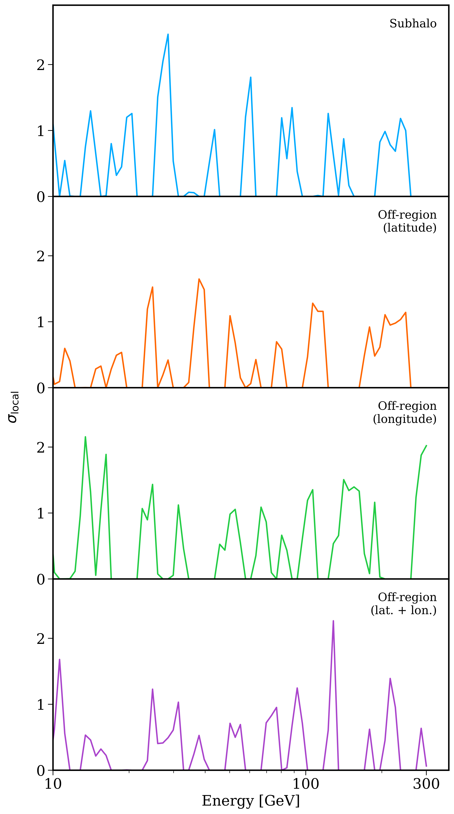<br />
图注：The local significance obtained in the 10--300 GeV range. The result of the best fit subhalo position is compared with three off regions. These locations are reflections in latitude, longitude and in both latitude and longitude, where we do not expect flux coming from the subhalo. The $\sigma_{local}$ is set to 0 when the number of counts that maximizes the likelihood is not a positive value.<br />
对应解读：对应“建议重点查看的图表”第2项和“关键图表逐图导读”图2：10–300 GeV滑动窗口局域显著性扫描，特别是28 GeV附近2.5σ峰。<br />
入选理由：这是判断本文是否存在伽马线信号的核心诊断图，直接显示局域显著性随能量变化，并且加入三个off regions对照，可检验28 GeV峰是否孤立、是否类似背景区域中的随机涨落。<br />
来源与置信度：\(arxiv_source\)；high；\(arxiv_source\) / main.tex:figure[2]</p>
<p><strong>Fig01</strong><br />
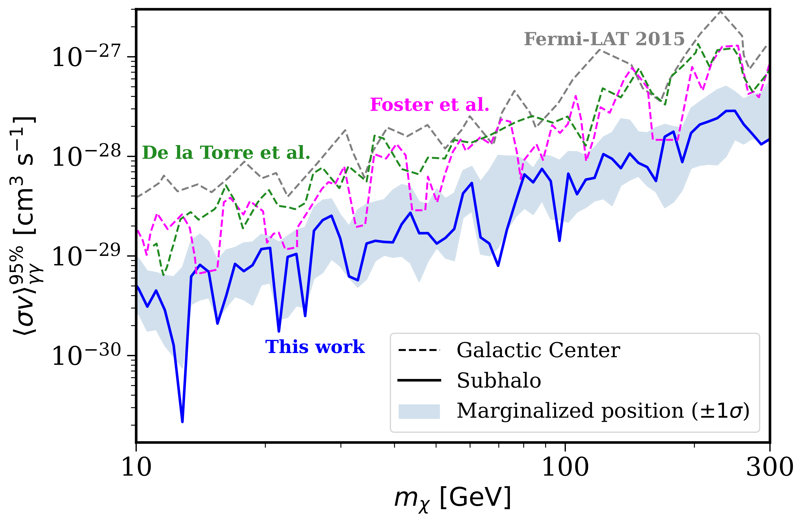<br />
图注：Constraints on DM annihilation cross section for $\chi\chi\to \gamma\gamma$ annihilation, assuming an NFW profile. Our 95\% CL limits using Fermi-LAT subhalo observation are in blue. Previous results for single-line searches using Galactic Center observation for comparison are: Fermi-LAT (2015) is in gray~\(\cite{Fermi-LAT:2015kyq},\) De la Torre Luque et al. (2023) is in green~\(\cite{luque2023gammaraylines15years},\) and Foster et al. (2022) is in magenta~\(\cite{Foster_2023}.\)<br />
对应解读：对应“建议重点查看的图表”第4项和“关键图表逐图导读”图4：χχ→γγ的95%置信上限与银河中心线谱限制比较。<br />
入选理由：这是支撑论文主要结论“子晕限制在相当质量范围内强于银河中心限制”的最直接图表，横轴为暗物质质量/线能量，纵轴为湮灭截面上限，并包含Fermi-LAT和其他银河中心结果作为比较基准。<br />
来源与置信度：\(arxiv_source\)；high；\(arxiv_source\) / main.tex:figure[1]</p>
<p><strong>Fig04</strong><br />
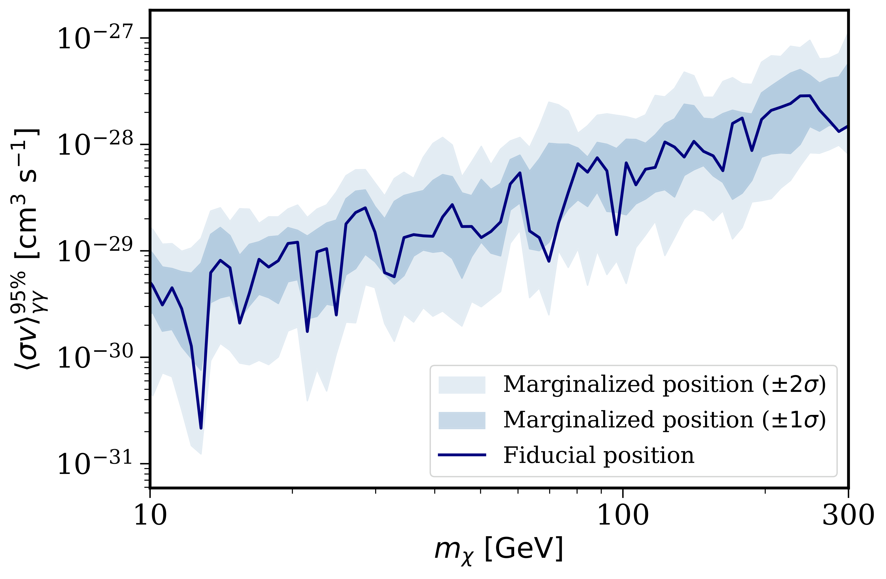<br />
图注：95\% confidence level upper limits on the DM annihilation cross section $\langle\sigma v\rangle_{\gamma\gamma}$. The solid line shows the result for the fiducial subhalo position. The shaded bands represents the positional uncertainty, obtained by marginalizing over 300 random positions within its $2\sigma$ 3D Galactocentric coordinate values. The darker blue encloses the $\pm1\sigma$ while the lighter one the $\pm2\sigma$ of the distribution<br />
对应解读：对应“建议重点查看的图表”第5项和第7项，以及模型拟合段落中关于J因子、子晕位置不确定性和系统误差对截面限制的影响。<br />
入选理由：该图展示 fiducial 子晕位置的截面上限，并通过在2σ三维银河坐标不确定范围内边缘化给出±1σ和±2σ带，直接量化空间位置/J因子相关系统误差对最终物理限制的影响。<br />
来源与置信度：\(arxiv_source\)；high；\(arxiv_source\) / main.tex:figure[4]</p>
<p><strong>Fig06</strong><br />
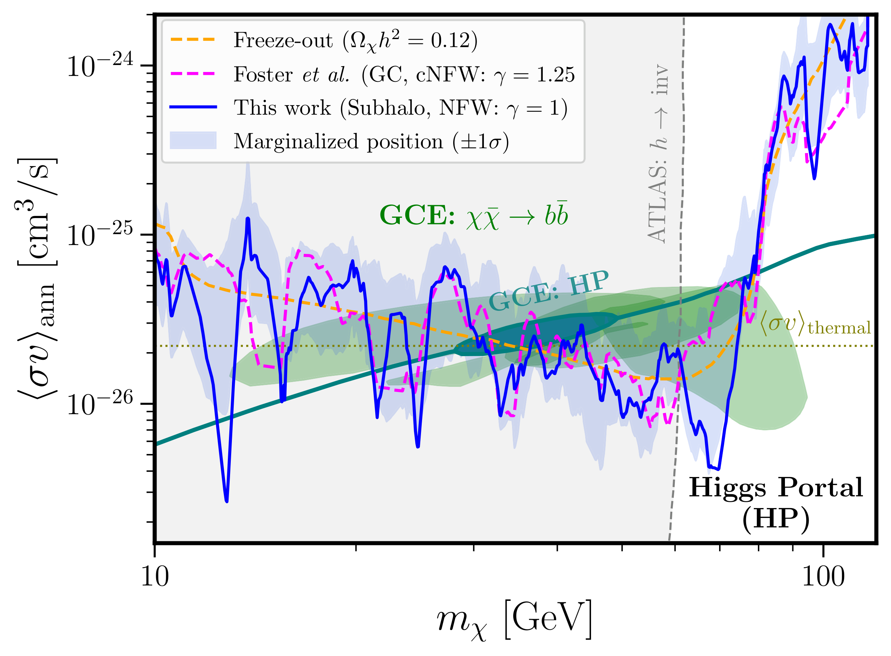<br />
图注：Constraints on the total DM annihilation cross section in the Higgs Portal DM model. Our subhalo constraint, assuming an NFW profile, is the solid blue line, with a $1\sigma$ uncertainty band that stems from marginalizing over subhalo position. The corresponding Galactic Center constraint on the same gamma-ray line signal is shown for an adiabatically contracted NFW profile ($\gamma=1.25$), as the dashed magenta line~\(\cite{Foster_2023}.\) The ATLAS invisible Higgs decay bound is in gray~\(\cite{ATLAS:2022yvh},\) and the freeze-out benchmark for $\Omega_\chi h^{2} = 0.12$ is the dashed orange line, with the thermal value \mbox{$\langle \sigma v\rangle_{\rm ann} = 2.2\times 10^{-26}$~cm$^{3}$/s} in dotted olive. For the GCE, the combined $\chi\chi \to b\bar{b}$ fits are in green shades~\(\cite{Goodenough:2009gk, Hooper:2011ti, Abazajian:2012pn, Gordon:2013vta, Daylan:2014rsa, Calore:2014xka, Calore:2014nla}\) and are shown for the best fit value of $\gamma$ found in each individual result. The Higgs Portal fit is in teal: the line is the best fit at each fixed $m_\chi$~\(\cite{Foster_2023, DiMauro:2021qcf},\) while the nested ellipses are the $68\%$ and $95\%$ CL regions with both $m_\chi$ and $\langle \sigma v \rangle_{\rm ann}$ free~\(\cite{Foster_2023, luque2023gammaraylines15years},\) which is shown at a self-consistent adiabatically contracted NFW profile of $\gamma=1.25$.<br />
对应解读：对应“建议重点查看的图表”第6项和“关键图表逐图导读”图5：Higgs-portal暗物质模型参数空间排除图。<br />
入选理由：该图把线谱上限投影到Higgs Portal模型的总湮灭截面，与银河中心限制、ATLAS不可见Higgs衰变、热冻结基准和GCE拟合区域同图比较，是理解论文粒子物理含义的关键图。<br />
来源与置信度：\(arxiv_source\)；high；\(arxiv_source\) / main.tex:figure[6]</p>
<p><strong>Fig08</strong><br />
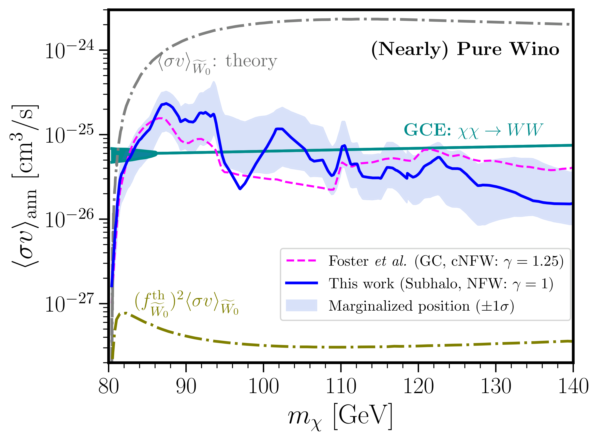<br />
图注：Constraints on the total thermally averaged annihilation cross section of Wino DM. Our subhalo constraint using an NFW profile is the solid blue line, with its $1\sigma$ marginalized position band. Previous Galactic Center constraint with an adiabatic contracted NFW profile ($\gamma=1.25$) is the dashed magenta line~\(\cite{Foster_2023}.\) The solid teal line is the best-fit cross section to the GCE at each fixed DM mass, and the teal ellipses are the 68\% and 95\% containment regions with both $m_{\chi}$ and the cross section free~\(\cite{Foster_2023}.\) Two theoretical benchmarks appear as dot-dashed lines, both for a Neutralino-Chargino mass gap of \mbox{$\Delta m_{+} = 0.2 m_{\chi}$}: first, a scenario where the Wino makes up all of the DM (gray), and second, a scenario where the Wino carries only its thermal fraction, with the cross section multiplied by the sub-fraction squared (olive).<br />
对应解读：对应“建议重点查看的图表”第6项和“关键图表逐图导读”图5：Wino暗物质模型参数空间排除图。<br />
入选理由：该图展示Wino模型中子晕线谱限制与银河中心限制、GCE最佳拟合区域以及热丰度/部分丰度理论基准的关系，能直接说明本文结果如何压缩Wino暗物质的可行参数空间。<br />
来源与置信度：\(arxiv_source\)；high；\(arxiv_source\) / main.tex:figure[8]</p>
<p><strong>Fig09</strong><br />
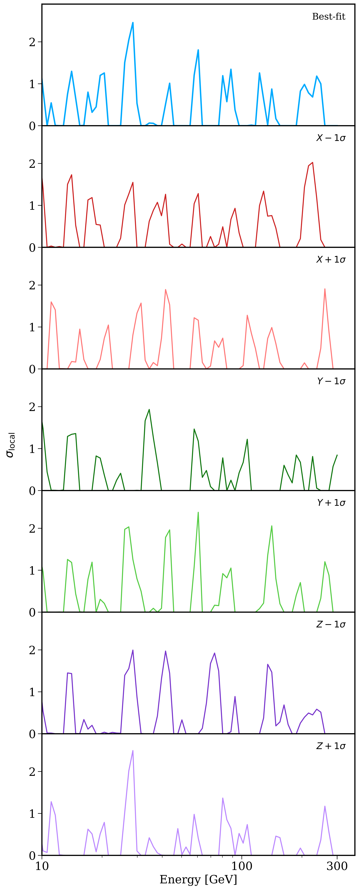<br />
图注：Local significance obtained in the 10--300 GeV range for the fiducial subhalo position and for positions shifted by $\pm1\sigma$ in the Galactocentric coordinates. Each coordinate is varied independently while the remaining coordinates are kept fixed at their fiducial values. The $\sigma_{\rm local}$ is set to 0 when the fitted line normalization is not compatible with a positive number.<br />
对应解读：对应“建议重点查看的图表”第7项和模型拟合段落中关于不同子晕位置、ROI/模板选择下28 GeV过量稳定性的稳健性检查。<br />
入选理由：该图比较fiducial位置与银河坐标±1σ偏移时的局域显著性扫描，可检验28 GeV峰是否对空间模板位置敏感；这比单纯的示意图更能支持对局部涨落和系统误差的判断。<br />
来源与置信度：\(arxiv_source\)；high；\(arxiv_source\) / main.tex:figure[9]</p>
<h4 id="_12">强相关工作</h4>
<p>这篇工作属于伽马射线线谱暗物质间接探测的延伸，与 Fermi-LAT 对银河中心、银河晕、矮 spheroidal 星系和未关联源的线谱搜索同属一类。历史上 \(130\,{\rm GeV}\) 银河中心线谱候选信号曾引发大量讨论，也促使社区形成了更严格的能量弥散、试验因子和仪器系统误差检查标准。检索关键词可用 “Fermi LAT gamma-ray line dark matter Galactic Center”, “130 GeV line Fermi LAT”, “dark matter subhalo gamma-ray line search”。</p>
<p>它也与暗物质子晕候选体识别工作相关，包括基于 Fermi 未关联源、机器学习分类、空间扩展性、无多波段对应体和高纬伽马源群体统计的研究。若该候选体来自近期专门论文，应该检索该候选体名称加 “dark matter subhalo candidate” 和 “Fermi-LAT unassociated source”。本文摘要没有给出候选体正式名称，因此这里不编造同源链接；读者应从论文引言和目标选择段落追溯同一候选体的原始提出文章。</p>
<p>在理论模型方面，Higgs-portal 与 Wino 暗物质都有成熟文献。Wino 暗物质的线谱信号常受 Sommerfeld 增强影响，在 TeV 质量附近尤其重要；Higgs-portal 模型则同时受直接探测、希格斯不可见衰变、遗迹丰度和间接探测约束。本文把子晕线谱上限投影到这些模型，价值在于补充直接探测和对撞机约束无法完全覆盖的区域。检索关键词包括 “Wino dark matter gamma-ray line Sommerfeld”, “Higgs portal dark matter gamma-ray line”, “Galactic Center Excess WIMP line constraints”。</p>
<p><strong>同一事件 / 同类源线索</strong>：</p>
<ul>
<li><a href="https://arxiv.org/abs/2609.03016">https://arxiv.org/abs/2609.03016</a></li>
<li><a href="https://arxiv.org/pdf/2609.03016">https://arxiv.org/pdf/2609.03016</a></li>
</ul>
<p><strong>相似工作</strong>：</p>
<ul>
<li><a href="https://arxiv.org/abs/1506.00013">https://arxiv.org/abs/1506.00013</a></li>
<li><a href="https://arxiv.org/abs/1305.5597">https://arxiv.org/abs/1305.5597</a></li>
<li><a href="https://arxiv.org/abs/1205.1045">https://arxiv.org/abs/1205.1045</a></li>
</ul>
<p><strong>基础理论 / 方法工作</strong>：</p>
<ul>
<li><a href="https://arxiv.org/abs/1009.0224">https://arxiv.org/abs/1009.0224</a></li>
<li><a href="https://arxiv.org/abs/1012.4515">https://arxiv.org/abs/1012.4515</a></li>
<li><a href="https://arxiv.org/abs/1209.3015">https://arxiv.org/abs/1209.3015</a></li>
</ul>
<p><strong>相反观点 / 张力线索</strong>：</p>
<ul>
<li><a href="https://arxiv.org/abs/1207.0490">https://arxiv.org/abs/1207.0490</a></li>
<li><a href="https://arxiv.org/abs/1209.4562">https://arxiv.org/abs/1209.4562</a></li>
<li><a href="https://arxiv.org/abs/1303.1798">https://arxiv.org/abs/1303.1798</a></li>
</ul>
</details>
<h3 id="2-sgr-a-as-a-galactic-pevatron-multimessenger-signatures-of-the-magnetic-penrose-process">2. Sgr A* as a Galactic PeVatron: Multimessenger Signatures of the Magnetic Penrose Process</h3>
<ul>
<li>来源：arXiv / astro-ph.HE</li>
<li>链接：https://arxiv.org/abs/2609.04051v1</li>
<li>作者：Marina Cermeño, Pedro De la Torre Luque, Cristina Fernández-Suárez, Viviana Gammaldi, Enrique Mier-Alonso, María J. Rodríguez, Miguel Á. Sánchez-Conde, Jaume Zuriaga-Puig</li>
<li>评分：novelty 8/10，importance 8/10，relevance 10/10，final 9.70/10</li>
<li>推荐理由：Directly relevant Galactic-center PeVatron paper with hadronic gamma-ray and neutrino predictions tied to H.E.S.S., HAWC, CTAO, SWGO, IceCube and KM3NeT. Strong multimessenger/gamma-ray relevance and a distinctive proposed observational signature.</li>
</ul>
<p><strong>中文题目</strong>：把 \(\mathrm{Sgr\ A^*}\) 当作银河系 \(\mathrm{PeVatron}\)：磁化 Penrose 过程的多信使信号</p>
<p><strong>做了什么</strong>：这篇论文研究银河系中心黑洞 \(\mathrm{Sgr\ A^*}\) 是否能通过磁化 Penrose 过程把质子加速到 \(\mathrm{PeV}\) 能区。作者不是简单假设一个注入谱，而是从吸积流中的核反应运动学计算中子产生谱，再在 Kerr 时空中追踪中子轨道，筛出能进入能层并发生 \(\beta\) 衰变的粒子群；这些带电衰变产物随后从黑洞自旋和磁场中取能，形成逃逸的高能质子。论文进一步把这些质子传播到中央分子区，与气体发生强子相互作用，计算伴随的 \(\gamma\) 射线和中微子信号。主要结论是：在若干合理情景下，\(\mathrm{Sgr\ A^*}\) 可作为银河系 \(\mathrm{PeVatron}\)，其 \(\gamma\) 射线谱可能对 H.E.S.S. 和 HAWC 观测到的甚高能银河中心辐射有非忽略贡献，并且未来 SWGO、CTAO、KM3NeT/ARCA 和 IceCube-Gen2 可检验这种机制。</p>
<p><strong>为什么重要</strong>：银河系中心是否存在稳定或间歇的 \(\mathrm{PeVatron}\) 是高能天体物理的核心问题之一。H.E.S.S. 已发现银河中心区域有延伸到几十 \(\mathrm{TeV}\) 的硬 \(\gamma\) 射线辐射，通常被解释为母体质子至少达到 \(\mathrm{PeV}\) 能量，但加速器究竟是 \(\mathrm{Sgr\ A^*}\)、超新星遗迹、星团风还是过去的爆发活动仍未定。这篇文章的重要性在于把近视界广义相对论能量抽取机制直接连接到可观测的 \(\gamma\) 射线和中微子通量，而不只停留在“黑洞能加速粒子”的定性说法。</p>
<p><strong>理论 / 观测 / 仪器方法价值</strong>：理论上，论文给出了一个从吸积流核反应、中子 Kerr 测地线、能层内 \(\beta\) 衰变、磁化 Penrose 加速到中央分子区强子辐射的闭合链条。观测上，它预言的谱形特征可与 H.E.S.S.、HAWC、未来 SWGO 和 CTAO 的能谱测量比较；中微子通量虽低于 IceCube 推断的弥散银河成分，但可作为 KM3NeT/ARCA 和 IceCube-Gen2 的互补目标。方法上，它提醒读者：判断 \(\mathrm{Sgr\ A^*}\) 是否为 \(\mathrm{PeVatron}\) 不应只拟合一个经验幂律注入谱，还应追问注入谱能否由具体近黑洞物理产生。</p>
<p><strong>为什么应该关注</strong>：如果这类信号被未来观测支持，它会把三个通常分开的主题连起来：黑洞自旋能量抽取、银河宇宙线起源、以及 \(\gamma\) 射线和中微子的多信使诊断。即便最终发现磁化 Penrose 过程贡献有限，这篇论文也提供了一个可检验框架：哪些谱形、归一化和空间分布是近视界加速模型必须面对的，哪些则更像扩散传播、气体模板或其他银河中心源族造成的。</p>
<details class="paper-detail">
<summary>展开详细解读：文章讲解、背景、理论、重点章节、图表与相关工作</summary>
<h4 id="_13">文章详细讲解</h4>
<p>科学问题：银河中心 \(\mathrm{Sgr\ A^*}\) 是否能把质子加速到 \(\mathrm{PeV}\) 能量，是解释银河中心甚高能 \(\gamma\) 射线辐射的关键。传统 \(\mathrm{PeVatron}\) 讨论常把源端注入谱参数化为幂律加指数截断，然后用气体分布和扩散模型计算 \(\gamma\) 射线。但这种做法会把最重要的物理问题藏起来：\(\mathrm{PeV}\) 粒子究竟如何在银河中心产生？本文把这个问题推进到黑洞能层尺度，考察磁化 Kerr 黑洞中的磁化 Penrose 过程是否能提供足够高能的质子。</p>
<p>作者怎么做：论文的关键创新是没有直接指定一个经验中子或质子注入谱，而是从吸积流中核反应的运动学出发计算中子产生谱。中子不带电，能较少受磁场束缚地进入 Kerr 黑洞附近；作者随后追踪这些中子在 Kerr 时空中的轨道，确定其中哪些能进入黑洞能层并在能层内发生 \(\beta\) 衰变。由于衰变产物包含带电质子和电子，它们会与外部磁场耦合，在特定轨道和能量条件下通过磁化 Penrose 过程从黑洞自旋中抽取能量。</p>
<p>关键结果：在论文考虑的参数情景中，逃逸质子谱可以延伸到 \(\mathrm{PeV}\) 能区，使 \(\mathrm{Sgr\ A^*}\) 成为候选银河 \(\mathrm{PeVatron}\)。这些质子进入中央分子区后与气体发生 \(pp\) 相互作用，产生 \(\pi^0\) 衰变 \(\gamma\) 射线以及 \(\pi^\pm\) 衰变中微子。预测的 \(\gamma\) 射线能谱带有由 MPP 注入谱和传播共同塑造的特征，并可能对 H.E.S.S. 和 HAWC 已探测到的银河中心甚高能辐射作出非忽略贡献。中微子方面，模型通量低于 IceCube 推断的银河弥散成分，但并非完全不可观测，尤其可由南天视场优势明显的 KM3NeT/ARCA 与 IceCube-Gen2 长期检验。</p>
<p>局限和下一步：这类模型最敏感的输入包括黑洞自旋、近黑洞磁场强度与几何、吸积流中核反应率、中子能否在能层内衰变的轨道选择、逃逸质子在中央分子区的扩散方式、以及气体密度模板。论文给出的是一条物理上自洽的信号链，但还不是唯一解释。下一步需要把时间依赖吸积流、三维磁流体结构、更真实的中央分子区气体和扩散各向异性纳入模型，并与 CTAO、SWGO 的空间分辨谱测量以及 KM3NeT/ARCA 的银河中心中微子限制联合拟合。</p>
<h4 id="_14">关键结果是怎么做出来的</h4>
<p>本文最重要的结果链从样本选择意义上的“粒子群筛选”开始，而不是从望远镜事件表开始。作者首先在 \(\mathrm{Sgr\ A^*}\) 吸积流中计算核反应产生的中子谱，随后用 Kerr 时空轨道积分筛选能到达能层的中子。真正参与磁化 Penrose 过程的是更小的子样本：这些中子需要在能层内发生 \(\beta\) 衰变，并且衰变后带电粒子的轨道与电磁势条件允许能量抽取。因此，论文中的“有效事件数”对应的是相空间中的可用轨道和衰变概率，而不是简单的注入总数。</p>
<p>统计显著性方面，这篇理论预测论文主要不是宣称某个观测残差达到固定 \(\sigma\) 水平，而是把预测通量与已有观测和未来灵敏度曲线比较。读者应把 H.E.S.S. 和 HAWC 数据点、SWGO 和 CTAO 灵敏度、以及 IceCube 或 KM3NeT/ARCA 的中微子敏感度当成外部检验标尺。关键判断不是“模型是否唯一拟合数据”，而是“在不超过现有 \(\gamma\) 射线和中微子约束的前提下，MPP 贡献是否能达到可观测量级，并具有可区分谱形”。</p>
<p>模型比较的核心是不同近黑洞参数和传播参数给出的 \(\gamma\) 射线与中微子谱。若某些情景的 \(\gamma\) 射线通量接近或落入 H.E.S.S./HAWC 测量范围，同时中微子通量仍低于 IceCube 弥散银河成分约束，那么这些情景就是可行但未被证实的。若未来 SWGO 或 CTAO 在银河中心测到与这些模型预言相似的硬谱延伸或谱形弯折，而空间分布又与中央分子区气体相关，则对强子模型和 MPP 源端都会更有利。</p>
<p>支撑结论的图表应主要包括四类：中子产生谱与到达能层的有效中子谱、MPP 后逃逸质子谱、由 \(pp\) 相互作用产生的 \(\gamma\) 射线谱并与 H.E.S.S./HAWC 和未来灵敏度对比、以及中微子谱与 IceCube/KM3NeT/IceCube-Gen2 敏感度或弥散背景对比。稳健性检验应关注参数扫描：黑洞自旋、磁场强度、吸积流核反应率、中央分子区气体质量、扩散系数和源活动历史。若模型只在极端磁场或极端注入功率下才成立，其解释力会明显下降。</p>
<p>主要系统误差来自两端：近视界端和传播辐射端。近视界端的不确定性包括磁场构型是否可近似为论文假设形式、中子产生率是否受吸积流温度和成分强烈影响、以及能层内衰变概率的轨道依赖。传播辐射端的不确定性包括中央分子区气体三维分布、宇宙线扩散各向异性、背景源污染、以及 \(\gamma\) 射线仪器能标和点扩展函数。本文结论应理解为“MPP 可产生可观测多信使信号并有望被检验”，而不是已经排除了其他银河中心 \(\mathrm{PeVatron}\) 候选。</p>
<details class="paper-subdetail">
<summary>展开背景、理论、公式、模型、章节和图表导读</summary>
<h4 id="_15">背景知识</h4>
<p>研究对象 \(\mathrm{Sgr\ A^*}\) 是银河系中心质量约为数百万太阳质量的超大质量黑洞。它当前电磁辐射很暗，远低于 Eddington 光度，但这并不意味着其附近不能存在强磁场、非热粒子或过去活动遗迹。银河中心同时拥有中央分子区、强湍动磁场、年轻大质量星团、超新星遗迹和脉冲星风云，因此在高能波段是一个源混杂严重但物理信息丰富的区域。</p>
<p>历史问题是银河宇宙线的“膝”附近粒子从何而来。若要解释 \(\sim\mathrm{PeV}\) 质子，源必须能在有限时间内提供足够大的电势差或冲击加速效率。H.E.S.S. 对银河中心脊状辐射的观测显示 \(\gamma\) 射线谱延伸到几十 \(\mathrm{TeV}\) 而无明显截断，常被解释为母体质子达到 \(\mathrm{PeV}\) 左右。这使 \(\mathrm{Sgr\ A^*}\) 成为自然候选，但也引发争议：观测到的是当前黑洞加速，还是过去爆发留下的宇宙线海，或其他源族叠加？</p>
<p>观测背景方面，H.E.S.S.、MAGIC、VERITAS、HAWC、LHAASO 以及 Fermi-LAT 从不同能区和角分辨率提供银河中心约束。中微子方面，IceCube 已报告银河平面高能中微子发射证据，但银河中心方向的点源或扩展源信号仍受大气背景、角分辨率和南北半球视场影响限制。未来 CTAO、SWGO、KM3NeT/ARCA 和 IceCube-Gen2 将显著改善灵敏度和能谱覆盖，因而现在重新审视具体物理加速模型很有意义。</p>
<p>该领域常见误区之一是把“黑洞附近有强引力”直接等同于“自然能产生 \(\mathrm{PeV}\) 宇宙线”。实际上，高能粒子是否能逃逸、是否被同步辐射或曲率辐射损失限制、是否有足够注入率、是否能在目标气体中产生观测到的 \(\gamma\) 射线，都是独立问题。另一个误区是认为中微子不探测到就排除强子模型；事实上，当前中微子灵敏度、源延展性和背景处理常使许多强子情景仍可存活。</p>
<p>磁化 Penrose 过程属于从旋转黑洞抽取能量的一类机制。经典 Penrose 过程依赖能层内负能轨道；磁化版本中，带电粒子与电磁势耦合，可显著提高能量抽取效率。本文关注的特别情景是中子先进入能层，再通过 \(\beta\) 衰变产生带电粒子，从而绕过带电粒子在外部磁场中难以进入深引力势阱的部分限制。</p>
<h4 id="_16">基础理论 / 方法脉络</h4>
<p>基本物理图像从 Kerr 黑洞能层开始。旋转黑洞外部存在一个静止极限面，在它与事件视界之间的区域，任何物体都不能相对无穷远静止，这一区域称为能层。由于时空拖曳，粒子的守恒能量相对于无穷远可以为负；若一个入射粒子在能层中裂变或衰变，其中一个碎片落入黑洞并携带负能量，另一个碎片就可带走超过入射能量的能量。</p>
<p>普通 Penrose 过程的效率通常受限，因为要让碎片进入负能轨道需要苛刻运动学。磁化 Penrose 过程加入外部磁场后，带电粒子的守恒能量包含电磁势项，负能态的相空间可显著扩大。对 \(\mathrm{Sgr\ A^*}\) 这类磁化黑洞，若近黑洞区存在有序或半有序磁场，带电粒子可从黑洞自旋和电磁场中获得更高能量。</p>
<p>本文的特殊入口是中子。中子在吸积流核反应中产生后不带电，因此其轨道主要由引力决定，不会像质子那样被磁场强烈导引或束缚。若中子寿命经洛伦兹因子延长后仍有一定概率在能层中发生 \(\beta\) 衰变，中子就可把带电粒子“投递”到最有利于磁化 Penrose 加速的区域。论文正是从核反应运动学和 Kerr 轨道筛选来估计这部分有效中子群。</p>
<p>加速出的质子若逃逸到中央分子区，会与高密度气体发生 \(pp\) 碰撞。强子相互作用产生中性和带电介子，中性介子衰变为 \(\gamma\) 射线，带电介子经 \(\mu^\pm\) 链衰变产生中微子。因而 \(\gamma\) 射线和中微子通量之间有相对固定但受谱形、吸收和味振荡影响的联系。若 \(\gamma\) 射线强而中微子完全不可见，需要检查目标气体、扩散、源延展和背景处理是否使两者脱钩。</p>
<p>主要退化关系包括源端注入功率与目标气体质量的退化、扩散系数与源年龄的退化、黑洞磁场强度与最大能量的退化、以及吸积流核反应率与中子进入能层概率的退化。观测上，\(\gamma\) 射线谱硬度和空间形态能帮助区分中心连续注入、过去爆发注入和分布式源族；中微子则提供较少受电磁吸收影响的强子证据，但统计量通常更低。</p>
<h4 id="_17">公式与推导</h4>
<p>第一步是给出旋转黑洞的尺度。对质量为 \(M\)、无量纲自旋为 \(a_\ast\) 的 Kerr 黑洞，角动量可写为</p>
<div class="math-display">\[J=a_\ast {G M^2 \over c},\qquad 0\le a_\ast <1 .\]</div>
<p>这里 \(G\) 是引力常数，\(c\) 是光速。事件视界半径为</p>
<div class="math-display">\[r_+= {G M \over c^2}\left(1+\sqrt{1-a_\ast^2}\right) .\]</div>
<p>这给出粒子轨道积分和能层位置的基本长度尺度。</p>
<p>第二步是能层条件。Kerr 时空中静止极限面由度规分量 \(g_{tt}=0\) 决定，其半径为</p>
<div class="math-display">\[r_{\rm ergo}(\theta)= {G M \over c^2}\left(1+\sqrt{1-a_\ast^2\cos^2\theta}\right) .\]</div>
<p>在 \(r_+<r<r_{\rm ergo}(\theta)\) 内，负能轨道成为可能。本文关心的是中子是否能进入这个区域并在其中衰变。</p>
<p>第三步是中子衰变概率。若中子洛伦兹因子为 \(\gamma_n\)，本征寿命为 \(\tau_n\)，沿轨道的传播时间为 \(t_{\rm path}\)，则近似衰变概率可写为</p>
<div class="math-display">\[P_{\rm dec}=1-\exp\left(-{t_{\rm path}\over \gamma_n \tau_n}\right) .\]</div>
<p>在完整广义相对论处理中，\(t_{\rm path}\) 应由轨道积分给出；这个式子说明高能中子寿命延长会降低在能层内衰变的概率，但也有助于它从吸积流产生区抵达黑洞附近。</p>
<p>第四步是带电粒子的守恒能量。在稳态轴对称电磁场中，电荷为 \(q\)、四动量为 \(p_\mu\) 的粒子相对无穷远的能量可写为</p>
<div class="math-display">\[E=-p_t-q A_t ,\]</div>
<p>其中 \(A_t\) 是电磁四势的时间分量。磁化 Penrose 过程的关键在于电磁势项 \(qA_t\) 改变了负能态条件，使某个落入黑洞的碎片可以满足 \(E<0\)。</p>
<p>第五步是能量抽取效率。若入射中子的能量为 \(E_{\rm in}\)，衰变后逃逸质子能量为 \(E_{\rm esc}\)，落入黑洞的另一组分有效能量为 \(E_{\rm fall}\)，能量守恒给出</p>
<div class="math-display">\[E_{\rm in}=E_{\rm esc}+E_{\rm fall} .\]</div>
<p>当 \(E_{\rm fall}<0\) 时，</p>
<div class="math-display">\[\eta={E_{\rm esc}\over E_{\rm in}}=1-{E_{\rm fall}\over E_{\rm in}}>1 .\]</div>
<p>这就是 Penrose 类过程能够让逃逸粒子能量超过入射粒子能量的核心。</p>
<p>第六步是最大能量的量级估计。磁化紧致区可提供的电势差常按</p>
<div class="math-display">\[E_{\max}\sim Z e B r_+ \left({\Omega_H r_+\over c}\right)\]</div>
<p>估计，其中 \(Z\) 是粒子电荷数，\(e\) 是元电荷，\(B\) 是近黑洞磁场强度，\(\Omega_H\) 是视界角速度。该式不是精确轨道结果，但显示 \(E_{\max}\) 随 \(B\)、\(M\) 和自旋增加而提高。</p>
<p>第七步是逃逸质子在气体中的强子辐射。若质子微分数密度为 \(N_p(E_p)\)，目标气体密度为 \(n_{\rm H}\)，非弹性截面为 \(\sigma_{pp}(E_p)\)，则 \(\gamma\) 射线产生率可概略写为</p>
<div class="math-display">\[q_\gamma(E_\gamma)=n_{\rm H} c\int_{E_p^{\rm thr}}^\infty N_p(E_p)\sigma_{pp}(E_p)F_\gamma(E_\gamma,E_p)\\,dE_p .\]</div>
<p>函数 \(F_\gamma\) 描述单次碰撞中从母体质子到 \(\gamma\) 射线的能量分配。</p>
<p>第八步是从产生率到观测通量。对距离为 \(d\)、体积为 \(V\) 的发射区，若吸收可忽略，观测微分通量为</p>
<div class="math-display">\[\Phi_\gamma(E_\gamma)={1\over 4\pi d^2}\int_V q_\gamma(E_\gamma,\mathbf{x})\\,dV .\]</div>
<p>中微子通量 \(\Phi_\nu(E_\nu)\) 可用类似形式计算，只需把 \(F_\gamma\) 换成相应的中微子产额并考虑味振荡。</p>
<p>第九步是与观测比较的统计量。若第 \(i\) 个能量 bin 的观测通量为 \(F_i\)，误差为 \(\sigma_i\)，模型为 \(M_i(\boldsymbol{\theta})\)，一个常用诊断是</p>
<div class="math-display">\[\chi^2(\boldsymbol{\theta})=\sum_i {\left[F_i-M_i(\boldsymbol{\theta})\right]^2\over \sigma_i^2} .\]</div>
<p>这里 \(\boldsymbol{\theta}\) 包括 \(B\)、\(a_\ast\)、注入归一化、扩散系数和气体模板等参数。即使论文主要展示预测曲线而非正式拟合，这个式子也说明读者应如何判断模型是否与 H.E.S.S.、HAWC 或未来 CTAO/SWGO 数据相容。</p>
<h4 id="_18">模型拟合 / 应用方法</h4>
<p>这类工作的拟合量分成两层。源端层面，参数包括黑洞自旋 \(a_\ast\)、近视界磁场强度 \(B\)、吸积流温度和组成、核反应中子产生率、中子产生半径分布、以及衰变后带电粒子的逃逸条件。传播辐射层面，参数包括质子注入功率、注入时间结构、中央分子区气体密度 \(n_{\rm H}\)、扩散系数 \(D(E)\)、扩散各向异性和发射区几何。本文更偏向前向建模：从物理假设推出可观测谱，再与现有数据和未来灵敏度比较。</p>
<p>若要把本文框架转化为正式参数估计，\(\gamma\) 射线部分可采用 Poisson 或 Gaussian 似然。对 H.E.S.S./HAWC 这类能谱点，常见做法是比较模型通量与观测通量及其协方差；对事件级数据，则需卷积仪器响应、背景模板和空间模型。中微子部分更适合非齐次 Poisson 点过程似然，事件能量代理、方向误差和大气背景都必须进入似然。多信使联合拟合时，源端注入谱必须同时解释 \(\gamma\) 射线并不违反中微子上限。</p>
<p>参数退化非常重要。较高的质子注入功率可以被较低的气体密度抵消，较慢扩散可以模拟较年轻或更集中注入，较强磁场和较高自旋都可提高最大能量，吸积流中子产额与能层衰变概率也可相互补偿。单靠一条 \(\gamma\) 射线能谱很难唯一确定 MPP；需要利用谱形弯折、空间分布、时间历史和中微子通量共同破退化。</p>
<p>残差诊断应关注几个特征。如果模型在低能 \(\mathrm{GeV}\) 到 \(\mathrm{TeV}\) 段过量，可能说明源端注入过软、背景源未扣净或中央分子区气体模板不合适。如果模型只在最高能端匹配而中能段不足，可能需要额外源族或过去爆发成分。如果模型预测的中微子通量接近现有上限而 \(\gamma\) 射线仍偏低，则强子归一化或传播假设可能有问题。</p>
<p>模型可能失败的地方也很明确。近黑洞磁场若不足以提供所需电势，或真实磁场构型使衰变质子难以逃逸，则 \(\mathrm{PeV}\) 注入会被削弱。若吸积流核反应产生的中子数太少，MPP 即便效率高也无法提供足够总功率。若未来 CTAO/SWGO 发现银河中心最高能 \(\gamma\) 射线空间分布与气体完全不相关，或中微子上限压低到模型预言以下，则强子 MPP 解释会受到强约束。</p>
<h4 id="_19">重点章节 / 结果段落怎么读</h4>
<p>数据/物理输入部分应首先看作者如何设定 \(\mathrm{Sgr\ A^*}\) 的黑洞参数、磁场、吸积流结构和核反应环境。读者要特别留意中子产生谱是否由反应运动学给出，以及吸积流温度、密度和组成采用了哪些假设，因为这些决定了进入后续 MPP 的原始粒子库。</p>
<p>方法部分的核心是 Kerr 时空中的中子轨道追踪和能层内衰变筛选。应检查作者怎样定义“到达能层”“在能层内衰变”和“可参与 MPP”的条件，是否考虑轨道角动量、初始方向、相对论时间延缓和衰变概率。这一节决定模型是否真的连接了近视界物理，而不是简单把粒子放在能层中。<br />
MPP 加速结果部分应重点读逃逸质子谱。这里要看最大能量是否达到 \(\mathrm{PeV}\)，谱形是否有明显特征，能量预算是否合理，以及不同自旋、磁场或吸积流情景之间差异有多大。若图中只有极端参数才能达到 \(\mathrm{PeV}\)，结论应更谨慎。</p>
<p>多信使辐射部分应看 \(pp\) 相互作用计算、中央分子区气体模型和传播假设。读者应检查 \(\gamma\) 射线通量如何与 H.E.S.S. 和 HAWC 数据比较，中微子通量如何与 IceCube 弥散银河成分和未来 KM3NeT/ARCA、IceCube-Gen2 灵敏度比较。</p>
<p>讨论和稳健性检验部分应关注作者如何处理其他银河中心源的混杂、气体模板不确定性、仪器灵敏度预测差异、以及模型参数极端性的风险。好的读法是把本文视为“可检验机制论文”，而不是“单篇定论式源鉴认”。</p>
<h4 id="_20">建议重点查看的图表</h4>
<ol>
<li>中子产生谱与反应通道贡献图：看横轴能量、纵轴产生率或注入率，不同核反应通道是否主导不同能段，以及谱是否自然提供足够高能中子。</li>
<li>中子轨道和能层筛选诊断图：看哪些初始能量、角动量或发射角能进入能层，能层内衰变概率是否只来自极小相空间。</li>
<li>MPP 后逃逸质子谱图：重点看最大能量是否达到 \(\mathrm{PeV}\)，谱形是否硬，归一化是否需要过高功率。</li>
<li>\(\gamma\) 射线能谱与 H.E.S.S./HAWC 数据对比图：看模型曲线是否只解释最高能端，还是在整个 \(\mathrm{TeV}\) 区间都合理；注意系统误差带和背景扣除。</li>
<li>未来仪器灵敏度对比图：看 SWGO、CTAO 曲线与模型通量之间的间隔，区分积分灵敏度、微分灵敏度和扩展源灵敏度。</li>
<li>中微子通量图：看模型是否低于 IceCube 银河弥散成分，是否接近 KM3NeT/ARCA 或 IceCube-Gen2 长期灵敏度。</li>
<li>参数扫描或情景比较表：看不同 \(a_\ast\)、\(B\)、气体密度和扩散参数对结论影响多大，识别真正稳健的预言和依赖强假设的预言。</li>
</ol>
<h4 id="_21">关键图表逐图导读</h4>
<p>图 1：若论文给出中子产生谱，横轴通常是中子能量，纵轴是微分产生率或归一化谱。不同颜色或线型代表不同核反应通道或吸积流情景。读图重点是中子谱是否在足够高能处仍有可观尾部；陷阱是不要把总中子产生率直接等同于 MPP 可用率，因为只有能到达能层并在其中衰变的子集才有效。</p>
<p>图 2：轨道筛选图通常会显示 Kerr 黑洞附近的轨道、能层边界、事件视界，或显示初始参数空间中能进入能层的区域。坐标轴可能是初始半径、角动量、发射角或能量。读者应看可用相空间是否宽广，以及是否对自旋和磁场假设高度敏感；若可用区域极窄，模型归一化就可能依赖精细调节。</p>
<p>图 3：逃逸质子谱图是全文关键图之一。横轴为质子能量，纵轴为微分通量、注入率或 \(E^2 dN/dE\) 形式。模型线若延伸到 \(\mathrm{PeV}\) 且没有过早截断，支持 \(\mathrm{Sgr\ A^*}\) 作为 \(\mathrm{PeVatron}\) 的说法。读图陷阱是 \(E^2\) 加权会视觉上抬高高能端，需同时检查未加权谱和总功率。</p>
<p>图 4：\(\gamma\) 射线多信使预测图通常把模型与 H.E.S.S.、HAWC 观测点以及 SWGO、CTAO 灵敏度放在同一图上。横轴为 \(\gamma\) 射线能量，纵轴为 \(E^2\Phi_\gamma\) 或微分通量。重点看模型谱形是否与观测点斜率一致，以及是否在未来仪器灵敏度之上。陷阱是灵敏度曲线常假设特定曝光、源延展和背景条件，不能简单当成硬阈值。</p>
<p>图 5：中微子通量图应比较单味或全味通量、IceCube 弥散银河成分、KM3NeT/ARCA 和 IceCube-Gen2 灵敏度。横轴为中微子能量，纵轴为 \(E^2\Phi_\nu\)。读者要确认模型给的是单源方向通量、扩展区域通量还是与银河弥散模板可比的通量；不同定义混用会导致误判。</p>
<p>图 6：若有参数情景汇总表或带状图，应看每个情景的 \(a_\ast\)、\(B\)、注入功率、最大能量和观测可检验性。最有说服力的情景应同时满足三点：达到 \(\mathrm{PeV}\)、不超过现有 \(\gamma\) 射线和中微子约束、并落入未来仪器可测范围。</p>
</details>
<h4 id="_22">论文原图 / 可嵌入图片</h4>
<p><strong>Fig10</strong><br />
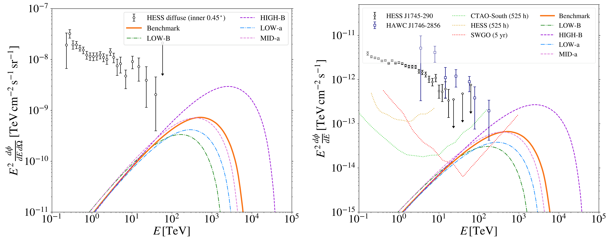<br />
图注：Predicted gamma-ray fluxes from MPP-accelerated protons in Sgr~A* for the different scenarios considered in this work. The left panel shows the gamma-ray flux per unit solid angle, alongside the VHE diffuse emission observed by H.E.S.S. in the inner $0.45^\circ$ around the GC region~\(\cite{2018hess}.\) The right panel displays the corresponding fluxes computed within a central region of radius $10 \; \rm pc$ ($\sim 0.1^\circ$), together with the central point-like sources HESS J1745-290~\(\cite{2016hess}\) and HAWC J1746-2856~\(\cite{albert2024observationgalacticcenterpevatron}.\) Sensitivity curves of current and future gamma-ray instruments, namely H.E.S.S.~\(\cite{holler2015observationscrabnebulahess},\) CTAO-South\footnote{\href{https://www.ctao.org/es/for-scientists/performance/}{https://www.ctao.org/es/for-scientists/performance/}} and SWGO~\(\cite{swgocollaboration2025scienceprospectssouthernwidefield},\) are included to assess the observational prospects of the predicted emission (see Section~\(\ref{subsec:obs_prospects}\) for details).<br />
对应解读：对应“γ 射线能谱与 H.E.S.S./HAWC 数据对比图”和关键图表导读中的图 4；也直接支撑模型拟合段落关于现有 H.E.S.S./HAWC 数据、CTAO 与 SWGO 灵敏度比较的讨论。<br />
入选理由：这是检验论文可观测预言的核心图，包含不同 MPP 情景的 γ 射线通量、H.E.S.S. 弥散与点源观测、HAWC 点源以及 H.E.S.S./CTAO/SWGO 灵敏度曲线。它最直接回答模型是否能贡献银河中心 TeV–PeV γ 射线、是否超过现有限制、以及未来仪器是否可测。<br />
来源与置信度：\(arxiv_source\)；high；\(arxiv_source\) / \(PRD_draft.tex\):figure[10]</p>
<p><strong>Fig08</strong><br />
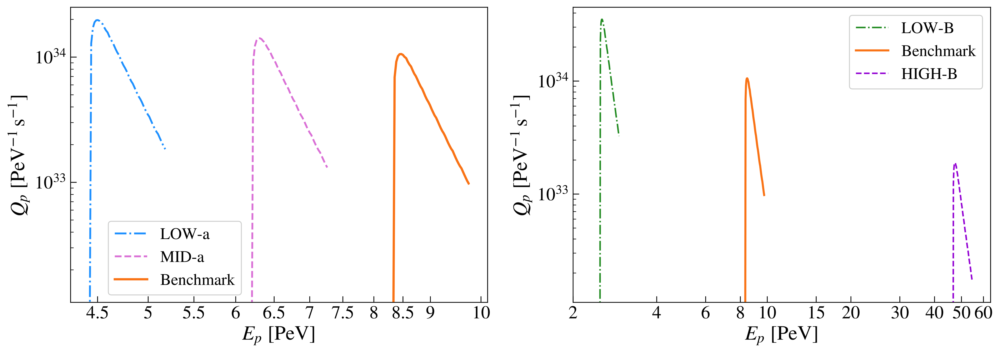<br />
图注：Differential proton rate per unit energy and time of the resulting accelerated protons via MPP in Sgr~A<em>. The left panel displays the cases corresponding to the \(\texttt{Benchmark},\) \(\texttt{LOW-a},\) and \(\texttt{MID-a}\) scenarios, while the right panel shows the results for the \(\texttt{Benchmark},\) \(\texttt{LOW-B},\) and \(\texttt{HIGH-B}\) cases; see Tables \(\ref{tab:scenarios}\) and \(\ref{tab:efficiency_vals}.\) This comparison illustrates the impact of varying the BH spin and magnetic field strength on the resulting proton flux.<br />
对应解读：对应“MPP 后逃逸质子谱图”和关键图表导读中的图 3；也支撑详细解读中 Sgr A</em> 能否作为 Galactic PeVatron 的核心结论。<br />
入选理由：该图直接给出 MPP 加速后逃逸质子的微分谱，并比较黑洞自旋和磁场强度变化对质子通量的影响。它是判断最大能量是否达到 PeV、谱形是否足够硬以及参数依赖性的关键证据。<br />
来源与置信度：\(arxiv_source\)；high；\(arxiv_source\) / \(PRD_draft.tex\):figure[8]</p>
<p><strong>Fig11</strong><br />
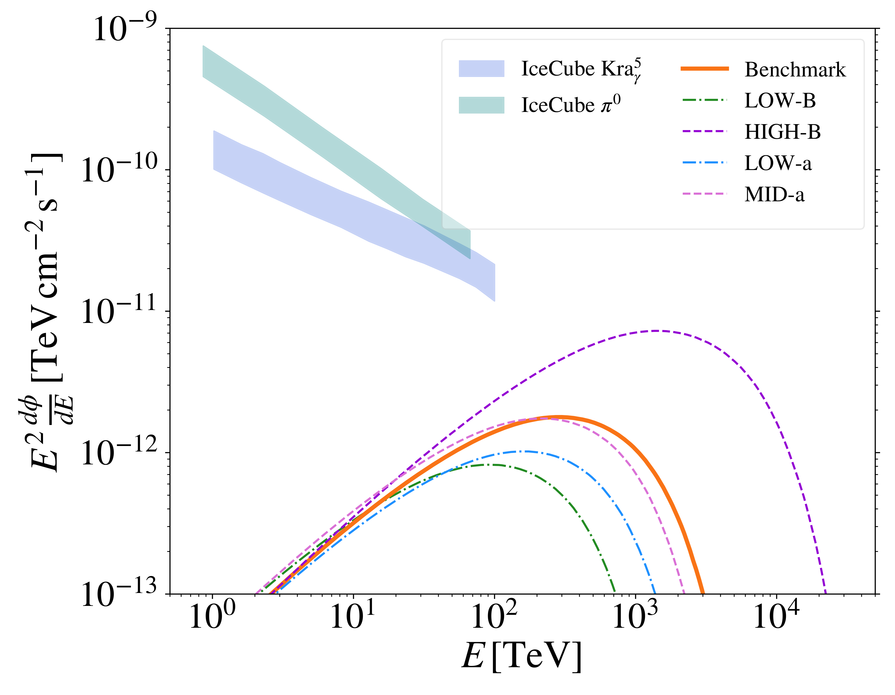<br />
图注：Predicted neutrino flux from MPP-accelerated protons in Sgr~A* for each scenario considered in this work (Table~\ref{tab:scenarios}), compared with IceCube best-fit models for the GC region~\(\cite{2023icecube},\) including the $\rm KRA_\gamma^5$ and $\pi^{0}$-decay models~\(\cite{Gaggero_2015}.\)<br />
对应解读：对应“中微子通量图”和关键图表导读中的图 5；也支撑多信使部分关于 IceCube 银河中心弥散成分和未来中微子检验的讨论。<br />
入选理由：该图展示不同情景下的中微子通量，并与 IceCube 银河中心最佳拟合模型及 KRAγ、π0 衰变模型比较。它能直接检验强子 MPP 解释是否违反现有中微子约束，并说明中微子信号相对银河弥散背景的位置。<br />
来源与置信度：\(arxiv_source\)；high；\(arxiv_source\) / \(PRD_draft.tex\):figure[11]</p>
<p><strong>Fig05</strong><br />
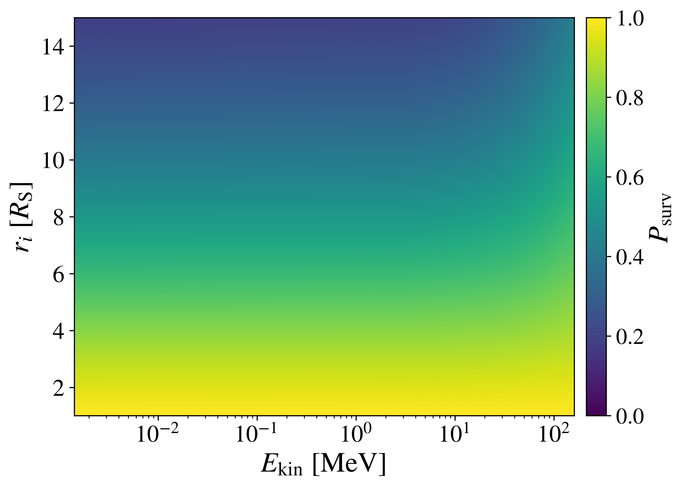<br />
图注：Neutron survival probability, $P_{\rm surv}$, as a function of the kinetic energy, $E_{\rm kin}$, and the initial production radius, $r_i$ (in units of $R_{\rm S}$). The color scale indicates the probability that neutrons produced in the accretion flow of Sgr~A* reach the ergosphere before decaying along their Kerr trajectories. These results correspond to a BH spin of $a_\ast=0.94$.<br />
对应解读：对应“中子轨道和能层筛选诊断图”和关键图表导读中的图 2；支撑作者从 Kerr 轨道筛选可进入能层中子的物理链条。<br />
入选理由：该图以中子动能和初始产生半径为坐标，给出到达能层前的存活概率，是判断有效 MPP 中子是否来自极窄相空间的关键诊断。相比示意图，它提供了定量的轨道与衰变筛选信息。<br />
来源与置信度：\(arxiv_source\)；high；\(arxiv_source\) / \(PRD_draft.tex\):figure[5]</p>
<p><strong>Fig03</strong><br />
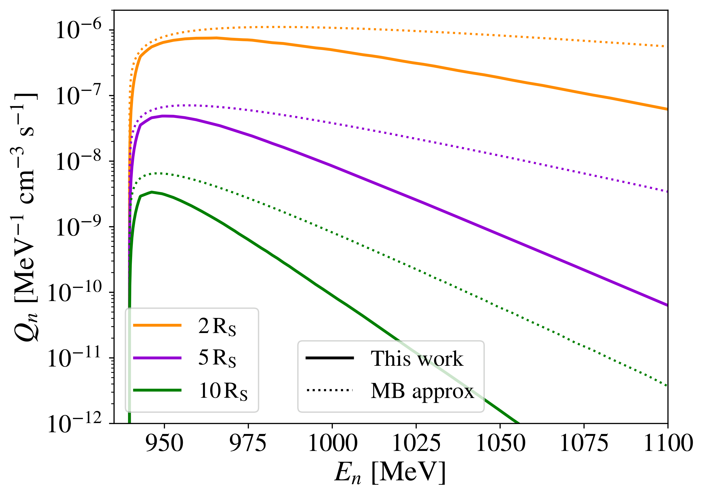<br />
图注：Neutron production spectrum rate in the accretion flow of Sgr~A<em> as a function of the neutron energy, shown for different production radii and corrected for losses due to gravitational escape. Solid lines correspond to the spectra obtained in this work by explicitly accounting for the neutron energy distribution from the underlying interaction kinematics, while dotted lines show the spectra obtained under the standard MB approximation (see Section~\(\ref{subsec:neutron_rate}\) for full details).<br />
对应解读：对应“中子产生谱与反应通道贡献图”和关键图表导读中的图 1；支撑论文创新点中从核反应运动学计算中子谱的部分。<br />
入选理由：该图给出 Sgr A</em> 吸积流中的中子产生能谱，并比较显式反应运动学计算与 Maxwell-Boltzmann 近似，还区分不同产生半径并校正引力逃逸损失。它是理解后续 MPP 可用中子源项的基础。<br />
来源与置信度：\(arxiv_source\)；high；\(arxiv_source\) / \(PRD_draft.tex\):figure[3]</p>
<p><strong>Fig07</strong><br />
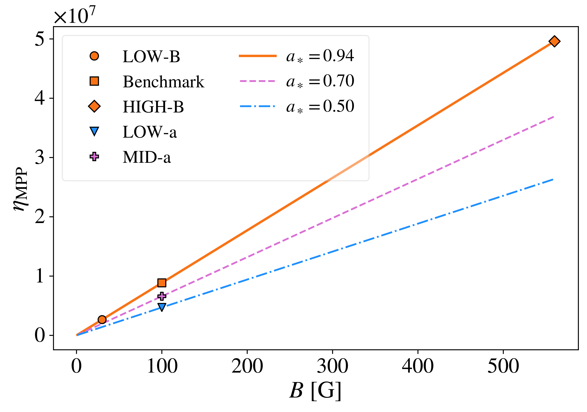<br />
图注：MPP efficiency ($\eta_{\rm MPP}$) as a function of the magnetic field ($B$) for different values of the dimensionless spin parameter of Sgr~A<em>, and assuming a BH mass of $M = 4 \times 10^{6}\, M_{\odot}$. We consider protons as the accelerated escaping particles and take the splitting point at $r_{\rm split}= R_{\rm S}$. We also represent the different scenarios considered in this work, listed in Table \(\ref{tab:scenarios}.\)<br />
对应解读：对应“参数扫描或情景比较表”和模型拟合段落中关于黑洞自旋 a_</em>、磁场 B 与最大加速效率退化的讨论。<br />
入选理由：该图展示 MPP 效率随磁场强度变化，并区分不同黑洞自旋，同时标出论文采用的情景。它有助于判断 PeV 加速是否依赖强磁场或高自旋假设，是解释 Fig08 质子谱差异的重要参数背景。<br />
来源与置信度：\(arxiv_source\)；high；\(arxiv_source\) / \(PRD_draft.tex\):figure[7]</p>
<h4 id="_23">强相关工作</h4>
<p>同一源和同类问题的核心参照是 H.E.S.S. 关于银河中心 \(\mathrm{PeVatron}\) 的工作，它把中央分子区硬 \(\gamma\) 射线辐射解释为来自中心连续或近期注入的高能强子。本文与这些工作关系密切，但把源端从经验注入谱替换为磁化 Penrose 过程。建议检索关键词包括 “Galactic Centre PeVatron H.E.S.S.”、“Sgr A* hadronic gamma rays”、“Central Molecular Zone cosmic rays” 和 “PeVatron Galactic center”。</p>
<p>基础理论方面，本文连接了 Penrose 过程、磁化 Kerr 黑洞粒子动力学和强子 \(pp\) 辐射模型。相关检索关键词包括 “magnetic Penrose process Kerr black hole”、“charged particle acceleration ergosphere”、“Blandford Znajek Penrose comparison” 和 “neutron beta decay ergosphere”。需要注意，Blandford-Znajek 机制和磁化 Penrose 过程都涉及黑洞自旋能量抽取，但前者通常以电磁场和喷流功率为语言，后者更强调粒子轨道和负能态，两者不能简单混为一谈。</p>
<p>可能的相反或竞争解释包括超新星遗迹 \(\mathrm{Sgr\ A\ East}\)、年轻大质量星团、脉冲星风云群、过去 \(\mathrm{Sgr\ A^*}\) 爆发注入的宇宙线海，以及暗物质或未解析源贡献。未来若 CTAO/SWGO 的空间形态显示最高能 \(\gamma\) 射线与气体模板、中心点源或星团分布之间有明确偏好，将直接影响本文机制的解释空间。</p>
<p><strong>同一事件 / 同类源线索</strong>：</p>
<ul>
<li><a href="https://arxiv.org/abs/2609.04051">https://arxiv.org/abs/2609.04051</a></li>
<li><a href="https://arxiv.org/abs/1603.07730">https://arxiv.org/abs/1603.07730</a></li>
<li><a href="https://arxiv.org/abs/2307.04427">https://arxiv.org/abs/2307.04427</a></li>
</ul>
<p><strong>相似工作</strong>：</p>
<ul>
<li><a href="https://arxiv.org/abs/1603.07730">https://arxiv.org/abs/1603.07730</a></li>
</ul>
<p><strong>基础理论 / 方法工作</strong>：</p>
<p>（未提供）</p>
<p><strong>相反观点 / 张力线索</strong>：</p>
<p>（未提供）</p>
</details>
<h3 id="3-km3netarca-stacking-search-for-high-energy-neutrino-point-sources-the-case-of-ultra-luminous-infrared-galaxies-and-blazars">3. KM3NeT/ARCA stacking search for high-energy neutrino point sources: the case of ultra-luminous infrared galaxies and blazars</h3>
<ul>
<li>来源：arXiv / astro-ph.HE</li>
<li>链接：https://arxiv.org/abs/2609.03609v1</li>
<li>作者：The KM3NeT Collaboration</li>
<li>评分：novelty 7/10，importance 8/10，relevance 9/10，final 9.05/10</li>
<li>推荐理由：KM3NeT/ARCA stacking search for high-energy neutrinos from ULIRGs and blazars is directly relevant to astrophysical neutrino source searches and multimessenger blazar physics, even though the result is a null detection with upper limits.</li>
</ul>
<p><strong>中文题目</strong>：KM3NeT/ARCA 对高能中微子点源的叠加搜索：超亮红外星系与耀变体样本</p>
<p><strong>做了什么</strong>：这篇 KM3NeT/ARCA 论文用 336 天、19–21 条探测单元配置下的数据，选出 1544 个径迹型中微子候选事件，对三类候选源做叠加搜索：75 个超亮红外星系、232 个高同步峰 BL Lac 天体，以及 88 个极端同步峰耀变体。作者没有逐个源找显著热点，而是把同类源按预期方向和通量模型联合起来，检验整体是否贡献了可探测的高能中微子信号。结果是三类目录均未发现相对于大气背景的统计显著超额，并给出 90% 置信水平上限。</p>
<p><strong>为什么重要</strong>：重要性在于：这是 KM3NeT/ARCA 在仍处于部分建成阶段时，对具体天体族群开展的定向叠加中微子搜索。超亮红外星系和高峰值 BL Lac／极端耀变体都是可能的宇宙线加速器与中微子源，但单源信号通常太弱，叠加分析是检验“族群贡献”的关键方法。即使没有探测到信号，上限也能排除一部分乐观的强子辐射模型或源族群贡献假设。</p>
<p><strong>理论 / 观测 / 仪器方法价值</strong>：对观测和方法的价值主要有三点：第一，它展示了 KM3NeT/ARCA 早期配置对南天和近赤道高能中微子点源搜索的实际性能；第二，它把传统幂律通量模型和由多波段数据约束的耀变体数值模型纳入同一套叠加似然框架；第三，它给出可与 IceCube、ANTARES 以及未来完整 KM3NeT 阵列比较的 90% 置信水平通量上限，为多信使源族群模型提供约束。</p>
<p><strong>为什么应该关注</strong>：如果你关心高能中微子的来源，这篇文章值得看，因为它不是泛泛地说“没有发现点源”，而是在问三个具体天体族群是否已经能被 KM3NeT 看到。它也能帮助判断未来 ARCA 扩展后，哪些源类最可能首先出现统计显著信号，哪些模型已经开始被早期数据压缩参数空间。对于做耀变体强子模型、星暴／并合星系中宇宙线输运，或中微子点源统计方法的人，这类非探测结果同样是硬约束。</p>
<details class="paper-detail">
<summary>展开详细解读：文章讲解、背景、理论、重点章节、图表与相关工作</summary>
<h4 id="_24">文章详细讲解</h4>
<p>科学问题：高能天体中微子的弥散背景已经由 IceCube 建立，但“哪些天体在贡献这些中微子”仍然没有清楚答案。单个点源的中微子通量很低，大气中微子和误重建的大气 μ 子又构成强背景，因此许多合理源类不一定以单源显著性的形式出现。本文聚焦三类候选源：超亮红外星系、 高同步峰 BL Lac 天体和极端同步峰耀变体。前者通常与强星形成、气体密度和宇宙线相互作用有关；后两者与相对论喷流、强非热辐射和可能的强子过程有关。</p>
<p>作者怎么做：KM3NeT/ARCA 位于地中海深海，本文使用 336 天数据，探测器处于 19–21 条 detection units 的早期配置。分析选择径迹型中微子候选，因为这类事件主要来自 μ 子中微子带来的长径迹，角分辨率优于簇射型事件，适合点源搜索。最终样本包含 1544 个候选事件。作者不是把所有天空像素逐一扫描，而是预先定义三个源目录：75 个超亮红外星系、232 个高同步峰 BL Lac 和 88 个极端同步峰耀变体，并在每个目录内构造叠加信号概率密度。</p>
<p>关键结果：三个目录均未显示超过大气背景预期的显著超额。对超亮红外星系，信号通常用传统幂律谱描述，例如不同谱指数的通量假设；对耀变体样本，预期中微子通量来自受多波段观测约束的数值模型，而不是简单地给所有源同一权重。最终结果以 90% 置信水平上限呈现，含义是：在给定源方向、角分辨率、能量响应和背景估计下，允许的总中微子贡献不能超过这些上限。论文的核心不是“证明这些天体不产生中微子”，而是“在本文数据量和模型权重下没有证据表明它们产生了可分辨的叠加信号”。</p>
<p>局限和下一步：主要局限来自曝光时间短、ARCA 仍非完整阵列、候选事件数有限，以及源权重和谱模型存在不确定性。耀变体的多波段建模还会受到同步辐射峰位置、外部光场、喷流多区结构、质子最大能量和 Doppler 因子等退化影响。下一步自然是加入更多年份、更大探测器配置、改进能量重建和事件分类，并与 IceCube／ANTARES 结果做联合或互补分析。随着 ARCA 完整建设，南天源的角分辨率和有效面积提升会显著增强此类叠加搜索的判别力。</p>
<h4 id="_25">关键结果是怎么做出来的</h4>
<p>数据和样本选择的证据链从 ARCA 的 336 天观测开始。探测器配置为 19–21 条 detection units，这意味着它还不是最终 KM3NeT/ARCA 的满规模状态，因此论文的结果应解读为早期灵敏度约束，而不是最终实验能力。作者从原始触发中筛选出 1544 个径迹型中微子候选事件。径迹型样本的关键优势是方向信息好，关键风险是大气 μ 子误重建和大气中微子背景需要严格控制。</p>
<p>源目录方面，超亮红外星系样本包含 75 个源，分析中采用常规幂律中微子谱来描述可能信号。耀变体分成两个目录：232 个 high-synchrotron-peaked BL Lac 和 88 个 extreme blazars。与简单等权叠加不同，耀变体的预期中微子通量来自由多波段数据约束的数值工具，因此每个源在总似然中的权重可反映其模型预期亮度。这一步很重要，因为叠加搜索的灵敏度很依赖权重是否接近真实信号分布。</p>
<p>统计检验的核心应是非束缚或有界信号事件数的似然比：比较“背景-only”假设与“背景加目录方向信号”假设。每个事件根据其重建方向、角误差、能量代理量和源方向计算属于信号或背景的概率。显著性通常由检验统计量的背景伪实验分布或渐近近似给出；本文结论是三个目录都没有达到统计显著性。因此，最关键的图表应包括检验统计量分布、最佳拟合信号事件数、预试验或后试验 \(p\) 值，以及通量上限曲线。</p>
<p>上限的计算一般对应 90% 置信水平，含义不是观测通量的“误差棒”，而是在未见显著超额时对信号强度参数的排除边界。对于超亮红外星系，上限常会随假定谱指数变化；对于耀变体模型，上限可能以相对于模型预测的归一化因子或总通量限制给出。若论文给出不同目录的灵敏度和实际上限，读者应比较二者：实际上限若明显弱于中位灵敏度，可能说明数据中有小幅向上涨落；若更强，则可能是向下涨落。</p>
<p>系统误差主要来自有效面积、角分辨率、能量响应、海水光学性质、光电倍增管效率、事件选择效率、背景建模以及源模型权重。稳健性检验应关注改变谱指数、改变目录权重、剔除少数最亮源、检查赤纬依赖背景、以及用 scrambled right ascension 或时间／方位重抽样生成背景时结果是否稳定。本文的非探测结论只有在这些检验不显示异常偏差时才可靠。</p>
<details class="paper-subdetail">
<summary>展开背景、理论、公式、模型、章节和图表导读</summary>
<h4 id="_26">背景知识</h4>
<p>研究对象之一是超亮红外星系，其红外光度通常来自强星形成或尘埃包裹的活动星系核。强星形成环境意味着大量超新星遗迹、星风和湍动磁场，可能加速宇宙线；高气体密度又使宇宙线质子通过 \(pp\) 碰撞产生 \(\pi^\pm\)，随后衰变出中微子。因此，超亮红外星系常被视为“隐藏的强子工厂”候选。</p>
<p>另两类对象是高同步峰 BL Lac 和极端同步峰耀变体。它们的喷流指向接近视线方向，非热辐射被相对论 beaming 强烈放大。同步辐射峰频率越高，通常意味着电子可被加速到更高能量，磁场和粒子分布也更极端。在强子或 lepto-hadronic 模型中，高能质子与喷流内同步光子或外部光场发生 \(p\gamma\) 反应，可以产生高能中微子。</p>
<p>历史问题是：IceCube 已探测到弥散天体中微子流，并报告过 TXS 0506+056 等与耀变体相关的个例线索，但总体点源贡献仍受严格限制。大多数源类如果贡献弥散背景，可能是由许多弱源共同产生，而不是少数亮源主导。因此叠加搜索比单源搜索更适合检验“某一类天体是否整体贡献显著”。</p>
<p>现在值得重新看的原因是 KM3NeT/ARCA 正在从早期配置迈向更大阵列。它位于北半球海底，对南天高能中微子源有互补优势，尤其可以用上行事件抑制大气 μ 子背景。早期数据虽然曝光有限，但已经能对若干模型给出初始约束，并验证完整阵列分析链。</p>
<p>常见误区有几个。第一，“没有显著信号”不等于“这些源不产生中微子”，只说明在当前曝光、模型假设和灵敏度下未探测到。第二，叠加分析的上限依赖源权重和谱形，不能不加转换地与另一个目录或另一个谱指数结果比较。第三，耀变体电磁亮度高不必然意味着中微子亮度高，因为纯轻子模型也能解释许多 SED。第四，单个候选空间重合不等于物理关联，必须考虑 trials factor 和背景偶然符合率。</p>
<h4 id="_27">基础理论 / 方法脉络</h4>
<p>基础物理图像是，高能中微子来自强子相互作用而非单纯电子辐射。若宇宙线质子在源内与气体碰撞，主要过程是 \(pp\)；若与辐射场碰撞，主要过程是 \(p\gamma\)。两者都可产生带电介子，随后 \(\pi^\pm\) 衰变为 \(\mu^\pm\) 和中微子，\(\mu^\pm\) 再衰变产生更多中微子。到达地球时，由于长基线振荡，源处近似 \(1:2:0\) 的味比例通常接近 \(1:1:1\)。</p>
<p>对 KM3NeT/ARCA 来说，本文使用径迹型事件，主要对应 \(\nu_\mu\) 或 \(\bar{\nu}_\mu\) 的带电流相互作用。中微子在探测器附近岩石或海水中相互作用产生高能 μ 子，μ 子在水中发出 Cherenkov 光，由光学模块记录到达时间和光强。通过拟合光子时空分布可重建径迹方向和一个能量代理量。方向重建越好，点源搜索的信号空间概率密度越窄，背景抑制越强。</p>
<p>叠加搜索的统计思想是把多个预先给定源方向共同作为信号模板。对每个事件，信号概率由所有源的点扩散函数加权求和；背景概率通常由数据驱动的赤纬分布、能量分布和观测时间决定。拟合参数通常包括总信号事件数 \(n_s\)，有时还包括谱指数 \(\gamma\) 或通量归一化。若 \(n_s\) 的最佳拟合值不显著大于零，则给出上限。</p>
<p>本文有两类信号模型。超亮红外星系部分采用幂律谱，这适合在缺少每个源详细强子模型时做基准约束。耀变体部分则使用多波段数据约束的数值模型来预测中微子通量，这比简单幂律更物理，但也引入更复杂的模型依赖。多波段 SED 中的同步峰、逆康普顿峰、X 射线硬谱和 TeV 光子吸收都会影响中微子预测。</p>
<p>主要退化和系统误差包括：源本征光度与距离的退化，谱指数与通量归一化的退化，单区与多区喷流模型的退化，角误差尾部分布对热点显著性的影响，以及大气中微子谱和大气 μ 子污染对背景估计的影响。选择效应也重要：电磁目录本身偏向明亮、已观测充分的源，未必代表真实中微子亮源总体。</p>
<h4 id="_28">公式与推导</h4>
<p>第一步从源的微分中微子通量写起。对一个源 \(j\)，常用基准形式是</p>
<div class="math-display">\[\frac{d\Phi_j}{dE_\nu}=\Phi_{0,j}\left(\frac{E_\nu}{E_0}\right)^{-\gamma}\exp\left(-\frac{E_\nu}{E_{\rm cut}}\right),\]</div>
<p>其中 \(E_\nu\) 是中微子能量，\(E_0\) 是归一化能量，\(\Phi_{0,j}\) 是通量归一化，\(\gamma\) 是谱指数，\(E_{\rm cut}\) 是可能的截止能量。若不考虑截止，可令 \(E_{\rm cut}\to\infty\)。这对应超亮红外星系样本常用的幂律信号假设。</p>
<p>第二步把源通量转换为探测到的期望事件数。对源 \(j\)，期望信号数为</p>
<div class="math-display">\[\mu_j=T\int dE_\nu\\, A_{\rm eff}(E_\
u,\delta_j)\\,\frac{d\Phi_j}{dE_\nu},\]</div>
<p>其中 \(T\) 是 livetime，\(A_{\rm eff}(E_\))<br />
u,\delta_j)) 是有效面积，依赖能量和源赤纬 \(\delta_j\)。这个式子连接天体通量与 ARCA 事件数，也是比较不同赤纬源灵敏度的关键。</p>
<p>第三步定义叠加权重。若目录中有 \(N_{\rm src}\) 个源，总信号空间-能量概率密度可写为</p>
<div class="math-display">\[S_i=\frac{\sum_{j=1}^{N_{\rm src}} w_j\\,S_{ij}}{\sum_{j=1}^{N_{\rm src}} w_j},\]</div>
<p>其中 \(S_i\) 是事件 \(i\) 的总信号概率密度，\(S_{ij}\) 是事件 \(i\) 来自源 \(j\) 的概率密度，\(w_j\) 可取电磁亮度、模型中微子通量、或有效面积折算后的期望事件数。等权叠加和模型加权叠加的差异就体现在 \(w_j\)。</p>
<p>第四步写单源方向的角分辨率核。若小角度近似成立，事件 \(i\) 与源 \(j\) 的角距为 \(\psi_{ij}\)，角误差为 \(\sigma_i\)，则</p>
<div class="math-display">\[S^{\rm space}_{ij}=\frac{1}{2\pi\sigma_i^2}\exp\left(-\frac{\psi_{ij}^2}{2\sigma_i^2}\right).\]</div>
<p>它说明角误差越小，同样的空间符合越有判别力。真实分析可能使用更复杂的点扩散函数，但物理含义相同。</p>
<p>第五步把空间项和能量项合并。事件级信号和背景概率可表示为</p>
<div class="math-display">\[S_{ij}=S^{\rm space}_{ij}\\,S^{\rm energy}_i(E_i^{\rm rec},\delta_i),\quad B_i=B^{\rm space}(\delta_i)\\,B^{\rm energy}(E_i^{\rm rec},\delta_i),\]</div>
<p>其中 \(E_i^{\rm rec}\) 是重建能量或能量代理量，\(\delta_i\) 是事件赤纬。高能事件通常更像天体信号，因为大气背景谱更陡。</p>
<p>第六步构造非扩展的非束缚似然。对 \(N\) 个候选事件，常用形式为</p>
<div class="math-display">\[\mathcal{L}(n_s)=\prod_{i=1}^{N}\left[\frac{n_s}{N}S_i+\left(1-\frac{n_s}{N}\right)B_i\right],\]</div>
<p>其中 \(n_s\) 是拟合的总信号事件数，\(N=1544\) 是本文样本量。若允许拟合谱指数，则写作 \(\mathcal{L}(n_s,\gamma)\)。</p>
<p>第七步用似然比定义检验统计量：</p>
<div class="math-display">\[TS=2\ln\frac{\mathcal{L}(\hat n_s,\hat\gamma)}{\mathcal{L}(n_s=0)},\]</div>
<p>其中 \(\hat n_s\) 和 \(\hat\gamma\) 是最大似然估计。由于 \(n_s\ge 0\) 的边界条件，\(TS\) 的零假设分布未必严格服从简单的 \(\chi^2\) 分布，实际常用 scrambled data 或伪实验校准 \(p\) 值。</p>
<p>第八步把上限写成信号强度参数的约束。若 \(\mu(\Phi_0)\) 是通量归一化 \(\Phi_0\) 对应的期望信号数，则 90% 置信水平上限可表示为</p>
<div class="math-display">\[\Phi_0^{90}=\Phi_0^{\rm test}\\,\frac{\mu^{90}}{\mu(\Phi_0^{\rm test})},\]</div>
<p>其中 \(\mu^{90}\) 是由 Neyman 构造、profile likelihood 或类似方法得到的信号事件数上限。这个式子说明上限本质上是“事件数上限除以探测器响应”。</p>
<p>第九步给出与弥散贡献相关的量级判断。若一个源族群在全天贡献的总强度为</p>
<div class="math-display">\[E_\
u^2\Phi_{\rm stack}(E_\
u)=E_\
u^2\sum_{j=1}^{N_{\rm src}}\frac{d\Phi_j}{dE_\nu},\]</div>
<p>则可直接与 IceCube 弥散流或其他点源上限比较。若本文的 \(E_\\)<br />
u^2\Phi_{\rm stack}) 上限低于某模型预测，该模型在本文假设下就受到排除；若仍高于模型预测，则非探测还不能形成强约束。</p>
<h4 id="_29">模型拟合 / 应用方法</h4>
<p>本文这类分析的拟合量首先是总信号事件数 \(n_s\)。对超亮红外星系目录，可能在若干固定谱指数下分别拟合 \(n_s\) 或通量归一化；对耀变体目录，则更可能把多波段模型给出的相对通量作为固定权重，然后拟合整体归一化或检验模型预测是否过高。读者应区分“拟合到的 \(n_s\)”与“物理源数”：\(n_s\) 是样本中可归因于该目录模板的统计事件数，不是实际发射中微子的天体个数。</p>
<p>似然通常由事件方向、角误差和能量代理量组成。方向项检查事件是否靠近目录源，能量项检查事件是否比大气背景更硬。背景分布最好由数据本身估计，例如在赤经上打乱事件或利用同赤纬带的事件分布，这样可减少大气通量绝对归一化的不确定性。显著性需要将实际 \(TS\) 与背景伪实验比较，而不是只看最佳拟合 \(n_s>0\)。</p>
<p>参数退化主要有三类。第一是谱指数 \(\gamma\) 与通量归一化的退化：较硬谱在高能端更容易被探测，因此同样事件数对应更低的能量通量上限。第二是源权重退化：若少数模型预测最亮的源主导叠加，结果会接近少数源搜索；若权重分散，叠加对单个源的偶然涨落不敏感但需要更多总事件。第三是角分辨率和能量响应的退化：角误差偏小会高估空间符合显著性，能量尺度偏差会改变信号与背景的区分能力。</p>
<p>残差诊断应看实际事件在源周围的角距分布是否与背景一致，高能事件是否集中在少数源附近，以及不同赤纬带的事件数是否符合背景模型。若有某个目录出现弱涨落，需要检查它是否由一个事件或一个源驱动；这种“单事件驱动的叠加超额”在高能中微子点源搜索中很常见，稳健性较弱。</p>
<p>模型可能失败的地方也很清楚。对超亮红外星系，简单幂律可能忽略了宇宙线逃逸、内部吸收、最大能量截止和源间差异。对耀变体，多波段 SED 可由纯轻子模型解释，强子成分并不唯一；单区模型还可能无法同时解释电磁谱、快速变源和中微子产生区。实际应用中，这些上限更适合用于排除某些“整体归一化过高”的源族群模型，而不是精确测量每个源的强子功率。</p>
<h4 id="_30">重点章节 / 结果段落怎么读</h4>
<p>数据／事件选择部分应首先读。重点是 336 天 livetime、19–21 条 detection units 的配置、径迹型事件筛选条件、最终 1544 个候选事件，以及背景污染如何控制。这里决定了整篇论文的灵敏度上限；如果事件选择过松，背景会淹没信号，过紧则损失有效面积。</p>
<p>源目录部分是第二个重点。读者应确认 75 个超亮红外星系、232 个高同步峰 BL Lac、88 个极端耀变体的来源、可见天区、红移或距离分布，以及是否存在目录不完备性。还要看源权重如何定义：等权、红外光度权重、模型中微子通量权重，结论可能会有明显差异。</p>
<p>方法部分应关注叠加似然的构造。关键问题包括信号 PDF 是否包含事件角误差和能量信息，背景 PDF 是否数据驱动，谱指数是否固定或扫描，检验统计量如何定义，显著性是否用伪实验校准。对专业读者来说，这部分比最终一句“无显著超额”更重要。</p>
<p>结果部分应看每个目录的最佳拟合信号数、\(p\) 值、灵敏度、实际 90% 上限，以及上限与模型预测的比值。若论文给出不同谱指数或不同权重方案，应该比较哪些假设最受约束。实际上限和预期灵敏度的偏离可反映数据的随机涨落。</p>
<p>讨论和稳健性检验部分要看系统误差预算、与 IceCube／ANTARES 结果的比较、未来完整 ARCA 的预期改进，以及作者是否说明非探测对强子模型的实际约束范围。附录若包含源表、权重表或伪实验验证，值得仔细查，因为叠加搜索的结论常被少数权重大源支配。</p>
<h4 id="_31">建议重点查看的图表</h4>
<ol>
<li>
<p>事件样本的天图或赤纬分布：检查 1544 个径迹型候选事件是否在赤纬上与背景模型一致，是否有明显未建模结构。</p>
</li>
<li>
<p>三个源目录的天区覆盖图：看 75 个超亮红外星系、232 个高同步峰 BL Lac 和 88 个极端耀变体相对于 ARCA 可见天区的位置，特别是高灵敏度赤纬带是否覆盖主要权重源。</p>
</li>
<li>
<p>有效面积或灵敏度随赤纬／能量变化图：这是把通量转为事件数的关键，需看不同谱指数下 ARCA 对源目录的响应差异。</p>
</li>
<li>
<p>检验统计量 \(TS\) 的背景伪实验分布：看实际数据的 \(TS\) 落在背景分布哪里，\(p\) 值是否经 trials 校正，是否存在边界效应。</p>
</li>
<li>
<p>每个目录的上限曲线或表格：看 90% 置信水平上限随能量、谱指数或模型归一化如何变化，并与理论预测线比较。</p>
</li>
<li>
<p>源权重贡献表或累积分布：检查叠加信号是否由少数最亮源主导；如果前几个源贡献大部分权重，结论更接近少数源搜索。</p>
</li>
<li>
<p>系统误差或稳健性检验图表：看改变有效面积、角分辨率、背景估计、源权重或谱假设后，上限是否稳定。</p>
</li>
</ol>
<h4 id="_32">关键图表逐图导读</h4>
<p>图 1：若论文给出事件与源目录的天空分布图，横轴通常是赤经，纵轴是赤纬，点表示径迹型中微子候选事件，符号或颜色表示三类源目录。读图时不要把视觉上的近邻直接当成关联，因为全天有 1544 个事件，偶然角邻近不可避免。真正要看的是源密集区是否与高能、高质量事件同时重合，以及这些重合是否进入似然检验。</p>
<p>图 2：若给出 ARCA 有效面积或点源灵敏度图，横轴可能是中微子能量或赤纬，纵轴是 \(A_{\rm eff}\)、灵敏度或通量上限。模型线可能对应不同谱指数，例如较硬谱和较软谱。读图陷阱是有效面积大不等于某一源上限一定强，因为可见时间、地球吸收、背景率和事件选择都会参与。</p>
<p>图 3：若给出 \(TS\) 或 \(p\) 值分布，横轴为检验统计量，纵轴为伪实验次数或累积分布，竖线为真实数据。关键是看真实竖线是否位于背景尾部；若只在中等尾部，不能称为证据。还要确认 \(p\) 值是否针对单一目录，还是考虑了多个目录、多种谱指数和权重方案后的后试验概率。</p>
<p>图 4：若给出超亮红外星系的通量上限，横轴可能是 \(E_\nu\) 或谱指数，纵轴常为 (E_\<br />
\(u^2\Phi_\nu\)) 或 \(\Phi_0^{90}\)。数据点或曲线代表 ARCA 实际上限，虚线可能代表灵敏度或模型预测。读者应比较实际上限与预期灵敏度的距离，而不是只看上限数值本身。</p>
<p>图 5：若给出高同步峰 BL Lac 和极端耀变体模型约束，横轴可能是模型归一化、源排序或能量，纵轴为预测事件数、上限因子或积分通量。若图中某些源权重特别高，需要检查结论是否被 TXS 0506+056 类似的少数亮源支配。模型预测线低于上限并不意味着模型被验证，只表示当前数据尚不能排除。</p>
<p>图 6：若有系统误差表或稳健性图，通常列出有效面积、角分辨率、能量尺度、背景建模和海水光学参数变化对上限的影响。读图时关注最大系统项是否与统计误差同量级；在早期 ARCA 数据中，统计量通常仍是主要限制，但系统误差会决定上限解释的可信度。</p>
</details>
<h4 id="_33">论文原图 / 可嵌入图片</h4>
<p><strong>Fig06</strong><br />
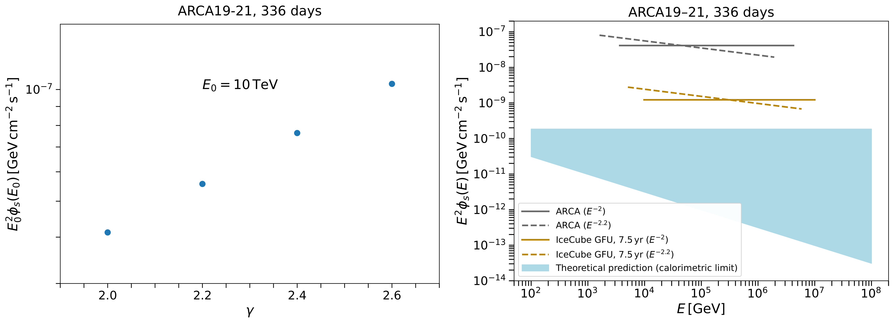<br />
图注：\(\textbf{Left}\): The $90\%$ C.L. upper limit at $E_0 = 10\, \rm TeV$ for the stacking analysis in terms of the spectral index. \(\textbf{Right}\): $E^{-2.0}$ and $E^{-2.2}$ upper limits for ARCA19-21~(grey lines) and the IceCube~\(\cite{IceCube:2021waz}\)~(golden lines) detectors as function of the energy. The upper limits are compared with the theoretical prediction (blue band), evaluated using the calorimetric assumption explained in Ref.~\(\cite{Ambrosone:2024xzk}.\)<br />
对应解读：“建议重点查看的图表”第5项与“关键图表逐图导读”图4：超亮红外星系叠加通量上限、谱指数依赖及理论预测比较。<br />
入选理由：这是ULIRG目录核心结果图，直接给出90%置信水平上限随谱指数和能量的变化，并与理论预测及IceCube结果比较，最能支撑日报中关于“未发现显著超额、只能给出上限而非排除整个源类”的解读。<br />
来源与置信度：\(arxiv_source\)；high；\(arxiv_source\) / main.tex:figure[6]</p>
<p><strong>Fig07</strong><br />
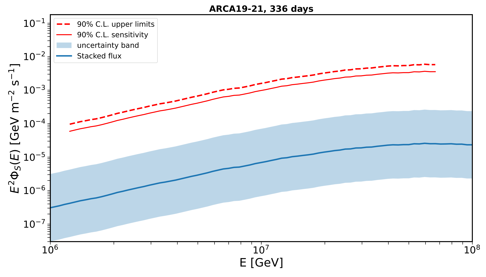<br />
图注：90\% C.L. upper limits and sensitivity~(dashed and solid red line) for the stacked flux (solid blue) expected from the selected HBL sources, shown in the central $90\%$ energy range. The light-blue region indicates the predicted flux uncertainty according to Ref.~\(\cite{Carenini:2025Gv}.\)<br />
对应解读：“建议重点查看的图表”第5项与“关键图表逐图导读”图5：高同步峰BL Lac样本的模型约束、灵敏度和90%置信水平上限。<br />
入选理由：该图把HBL模型预测通量、预测不确定性、ARCA灵敏度和实际上限放在同一能量范围内，是判断当前数据是否接近理论模型、以及模型是否被排除的关键图。<br />
来源与置信度：\(arxiv_source\)；high；\(arxiv_source\) / main.tex:figure[7]</p>
<p><strong>Fig08</strong><br />
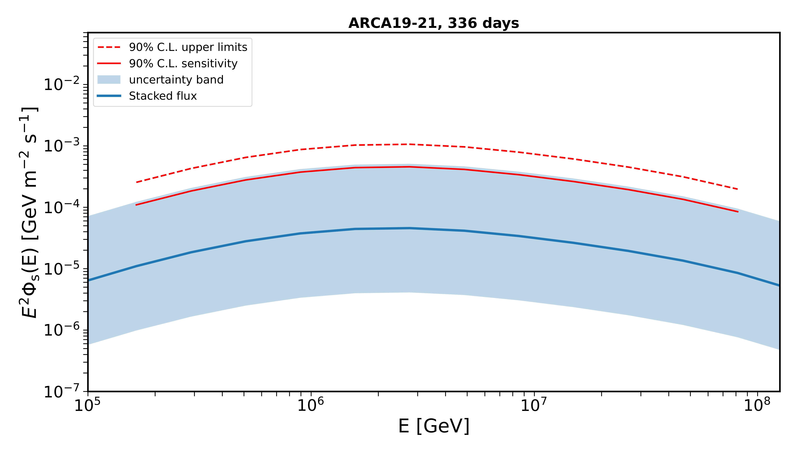<br />
图注：90\% C.L. upper limit and sensitivity~(dashed and continuous red lines) expected from the selected EHBL sources, shown in the central $90\%$ energy range. The shaded light-blue region indicates the predicted flux uncertainty, explained in Appendix~\(\ref{app:C,EHBLs}.\)<br />
对应解读：“建议重点查看的图表”第5项与“关键图表逐图导读”图5：极端同步峰BL Lac样本的模型预测、灵敏度和90%置信水平上限。<br />
入选理由：EHBL是本文三类源目录之一，该图直接展示该目录的叠加通量上限与模型预测不确定区间，对完整呈现三个源族群的非探测结果不可缺少。<br />
来源与置信度：\(arxiv_source\)；high；\(arxiv_source\) / main.tex:figure[8]</p>
<p><strong>Fig03</strong><br />
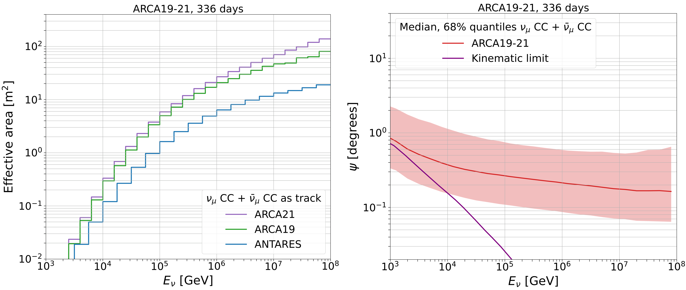<br />
图注：\(\textbf{Left:}\) Effective area as a function of the true neutrino energy for different KM3NeT/ARCA configurations, averaged between neutrinos and antineutrinos. The effective area of ANTARES is shown for comparison~\(\cite{ref:192}.\) \(\textbf{Right:}\) Median angular deviation ($\psi$) between the reconstructed and true neutrino direction as a function of the true neutrino energy, together with the 68\% quantiles represented by the shaded area. Both plots show the detector performance for $\nu_\mu^{\rm CC} + \bar{\nu}_\mu^{\rm CC}$ at the final selection level described in Sec.~\(\ref{sec:dataset}.\) The kinematic angle between the neutrino and the outgoing lepton, in CC interactions, is shown as a purple line.<br />
对应解读：“建议重点查看的图表”第3项与“关键图表逐图导读”图2：ARCA有效面积和角分辨率随能量变化。<br />
入选理由：有效面积和角分辨率是把源通量转换为预期事件数、并建立空间似然的基础诊断量；右图的角偏差还直接关系到点源叠加搜索中源—事件空间符合的可信度。<br />
来源与置信度：\(arxiv_source\)；high；\(arxiv_source\) / main.tex:figure[3]</p>
<p><strong>Fig04</strong><br />
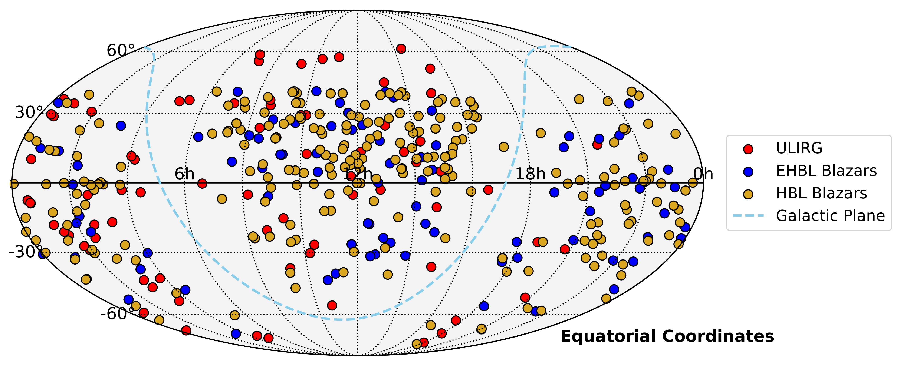<br />
图注：Sky map, in equatorial coordinates, of the sources analysed in this study: ULIRG (red dots), high–synchrotron-peaked blazars (orange dots) and extreme high–synchrotron-peaked BL Lacs (blue dots). The Galactic plane is marked by a light-blue dashed line.<br />
对应解读：“建议重点查看的图表”第2项与“关键图表逐图导读”图1：三个源目录在赤经—赤纬天图中的覆盖。<br />
入选理由：该图真实展示75个ULIRG、232个HBL和88个EHBL在天球上的分布，可用于检查源目录是否覆盖ARCA可见天区及不同源类的空间分布，是理解叠加搜索几何选择效应的关键背景图。<br />
来源与置信度：\(arxiv_source\)；high；\(arxiv_source\) / main.tex:figure[4]</p>
<p><strong>Fig02</strong><br />
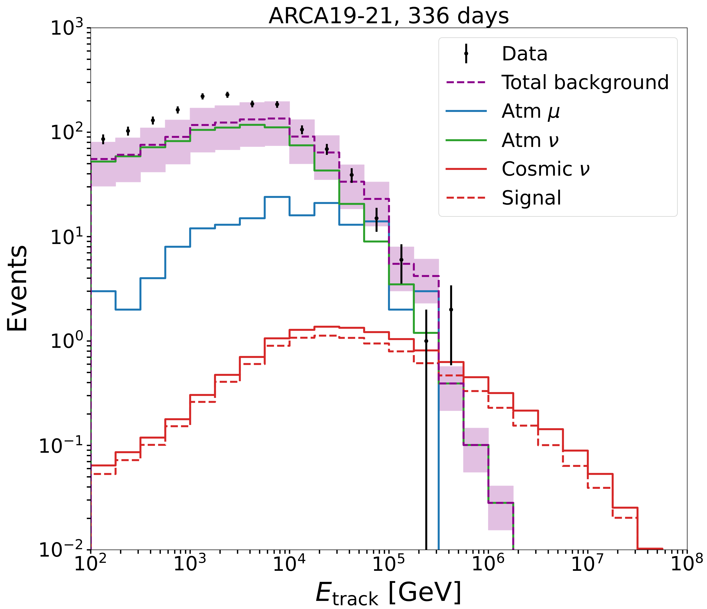<br />
图注：Reconstructed energy distributions after applying the event selections for the ARCA19--21 period. The diffuse cosmic neutrino contribution, assuming the flux in Eq.~\(\ref{eq:cosmic_flux},\) is shown in red, with the dotted line indicating the fraction of $\nu_\mu$ CC track events reconstructed within $1^\circ$ from the true neutrino direction and that produce at least one hit in two different DOMs (labelled as “signal”). Atmospheric muons and neutrinos are shown in green and blue, respectively, while data are shown as black points, together with their statistical uncertainties. The total expected background of atmospheric muons and neutrinos is shown in dashed purple, together with its uncertainty band.<br />
对应解读：“建议重点查看的图表”第1项及模型拟合段落：事件样本与大气背景、宇宙中微子期望的能量分布比较。<br />
入选理由：虽然不是赤纬分布或TS伪实验图，但它直接展示1544个径迹型候选事件选择后的重建能量分布、数据点、背景模型及不确定性，是检验样本是否与大气背景一致、以及能量项如何帮助区分信号和背景的重要诊断图。<br />
来源与置信度：\(arxiv_source\)；high；\(arxiv_source\) / main.tex:figure[2]</p>
<h4 id="_34">强相关工作</h4>
<p>这篇工作处在 IceCube 弥散中微子发现、ANTARES/KM3NeT 海水探测器点源搜索、以及 TXS 0506+056 多信使事件之后的同一问题链上。同类工作包括 IceCube 对耀变体目录、星暴星系、AGN 和红外亮星系的 stacking search，以及 ANTARES 对南天点源和候选目录的搜索。建议检索关键词："neutrino stacking search blazars"、"ultra-luminous infrared galaxies neutrino IceCube"、"KM3NeT ARCA point source search"、"ANTARES point source stacking"。</p>
<p>理论上，超亮红外星系与星暴星系中微子模型可追溯到宇宙线在高气体密度环境中的 \(pp\) 相互作用；耀变体中微子模型则与 \(p\gamma\) 反应、lepto-hadronic SED 拟合和喷流内光场密切相关。相反观点或张力主要来自两方面：一是许多耀变体的电磁 SED 可由纯轻子模型解释，并不要求强子功率；二是 IceCube 的点源和 stacking 上限已经限制了耀变体作为全部弥散中微子来源的可能性，但个别耀变体事件关联仍然存在争议。</p>
<p><strong>同一事件 / 同类源线索</strong>：</p>
<ul>
<li><a href="https://arxiv.org/abs/2609.03609">https://arxiv.org/abs/2609.03609</a></li>
<li><a href="https://www.km3net.org/">https://www.km3net.org/</a></li>
<li><a href="https://www.km3net.org/research/detectors/arca/">https://www.km3net.org/research/detectors/arca/</a></li>
<li><a href="https://arxiv.org/abs/1807.08794">https://arxiv.org/abs/1807.08794</a></li>
<li><a href="https://arxiv.org/abs/1807.08816">https://arxiv.org/abs/1807.08816</a></li>
</ul>
<p><strong>相似工作</strong>：</p>
<ul>
<li><a href="https://arxiv.org/abs/1609.04981">https://arxiv.org/abs/1609.04981</a></li>
<li><a href="https://arxiv.org/abs/1702.06868">https://arxiv.org/abs/1702.06868</a></li>
<li><a href="https://arxiv.org/abs/2205.15963">https://arxiv.org/abs/2205.15963</a></li>
<li><a href="https://arxiv.org/abs/2304.12675">https://arxiv.org/abs/2304.12675</a></li>
</ul>
<p><strong>基础理论 / 方法工作</strong>：</p>
<ul>
<li><a href="https://arxiv.org/abs/1311.5238">https://arxiv.org/abs/1311.5238</a></li>
<li><a href="https://arxiv.org/abs/1405.5303">https://arxiv.org/abs/1405.5303</a></li>
<li><a href="https://arxiv.org/abs/1510.05223">https://arxiv.org/abs/1510.05223</a></li>
<li><a href="https://arxiv.org/abs/1807.08794">https://arxiv.org/abs/1807.08794</a></li>
</ul>
<p><strong>相反观点 / 张力线索</strong>：</p>
<ul>
<li><a href="https://arxiv.org/abs/1611.03874">https://arxiv.org/abs/1611.03874</a></li>
<li><a href="https://arxiv.org/abs/1901.10806">https://arxiv.org/abs/1901.10806</a></li>
<li><a href="https://arxiv.org/abs/2001.00930">https://arxiv.org/abs/2001.00930</a></li>
</ul>
</details>
<h3 id="4-multi-epoch-detection-of-an-ultra-fast-inflow-in-esp-39607-evidence-for-an-accretion-cascade">4. Multi-epoch Detection of an Ultra-fast Inflow in ESP 39607: Evidence for an Accretion Cascade</h3>
<ul>
<li>来源：arXiv / astro-ph.HE</li>
<li>链接：https://arxiv.org/abs/2609.03019v1</li>
<li>作者：Alessandro Peca, Michael J. Koss, Roberto Serafinelli, C. Megan Urry, Claudio Ricci, Keigo Fukumura, Massimo Gaspari, Elias Kammoun</li>
<li>评分：novelty 8/10，importance 8/10，relevance 8/10，final 9.00/10</li>
<li>推荐理由：XRISM、XMM-Newton、NuSTAR联合观测给出Seyfert 2中多历元超高速内流证据，合并显著性5.3σ；对AGN吸积物理和X射线高能谱学有较高阅读价值。</li>
</ul>
<p><strong>中文题目</strong>：ESP 39607 中多历元超高速内流的探测：吸积级联的证据</p>
<p><strong>做了什么</strong>：这篇论文用同时段的 XRISM、XMM-Newton 和 NuSTAR 观测研究红移为 \(z=0.201\) 的 Seyfert 2 星系 ESP 39607。XRISM/Resolve 在观测框架约 \(4.7\) 和 \(4.9\,\mathrm{keV}\) 处看到两条吸收特征，可解释为 Fe XXV He-\(\alpha\) 与 Fe XXVI Ly-\(\alpha\) 被快速向内运动气体红移后的吸收线，对应内流速度 \(v_{\rm in}\simeq0.16c\)。单历元显著性约为 \(3\)--\(3.7\sigma\)，结合两个早期 NuSTAR 历元后总显著性达到 \(5.3\sigma\)。光电离模型给出 \(\log\xi\simeq3.7\)--\(3.8\) 和 \(\log N_{\rm H,abs}\simeq23.2\)--\(23.8\)，推断半径约 \(49\)--\(77\,R_{\rm g}\)。由于该半径处动力学时标只有数天，而信号跨源静止系至少 \(2.2\) 年反复出现，作者认为它更像持续补给的“吸积级联”，而不是单个长寿命云团。</p>
<p><strong>为什么重要</strong>：活动星系核研究里，超高速外流很常见，而以接近相对论速度落向黑洞的超高速内流要少见得多，也更难排除谱线识别和连续谱建模的假象。如果这个结果成立，它直接触及一个基本问题：黑洞附近几十个引力半径处的气体是平滑吸积，还是以团块、丝状流、冷凝云和盘风回落的形式间歇进入内区。ESP 39607 的多历元证据把问题从“是否有一次吸收线异常”推进到“内区是否长期存在被不断补充的高速内流结构”。</p>
<p><strong>理论 / 观测 / 仪器方法价值</strong>：观测价值在于 XRISM/Resolve 的高能谱分辨率把原先 NuSTAR 中相对宽泛的残差拆成更可信的铁吸收线候选，并用 XMM-Newton 与 NuSTAR 约束宽能段连续谱和反射成分。理论价值在于将光电离状态、柱密度、速度和半径联系到质量内流率 \(\dot M_{\rm in}\)，并与驱动 AGN 辐射所需的吸积率 \(\dot M_{\rm acc}\) 比较，得到 \(\dot M_{\rm in}/\dot M_{\rm acc}\simeq0.2\)--\(1.0\)。方法价值则在于展示了弱吸收线显著性如何在不同连续谱、金属丰度、跨仪器能标和多历元联合似然下被检验。</p>
<p><strong>为什么应该关注</strong>：如果你关心 AGN 反馈，这篇文章提醒我们不能只看向外吹出的风：有些被判为“反馈边界条件”的气体也可能正在回落并重新喂养黑洞。如果你关心 X 射线谱学，它是 XRISM 在铁线能段识别高速吸收体的一个早期科学案例。如果你做吸积盘理论或数值模拟，\(R\sim50\)--\(80\,R_{\rm g}\) 处持续存在、速度达 \(0.16c\) 的高电离高柱密度内流，是检验盘不稳定、冷凝、磁流体湍流和失败盘风模型的很具体边界条件。</p>
<details class="paper-detail">
<summary>展开详细解读：文章讲解、背景、理论、重点章节、图表与相关工作</summary>
<h4 id="_35">文章详细讲解</h4>
<p>科学问题：这篇文章要回答的是，在 ESP 39607 这个 Seyfert 2 AGN 的 X 射线谱中，是否存在真正向黑洞落入的、速度达到相对论量级的高电离吸收体。传统 AGN X 射线谱里，Fe K 区的蓝移吸收线通常被解释为超高速外流；但如果吸收线相对宿主星系静止系被红移，就可能指向内流、引力红移，或二者叠加。难点是 Fe K 区连续谱、反射驼峰、吸收遮挡和仪器背景都可能制造弱残差，因此单次探测很难令人信服。</p>
<p>作者怎么做：作者利用同一时期的 XRISM、XMM-Newton 和 NuSTAR 数据构建宽能段谱模型。XRISM/Resolve 负责精细刻画约几 \(\mathrm{keV}\) 到 Fe K 能区的窄线结构；XMM-Newton 辅助约束软 X 射线吸收和连续谱；NuSTAR 提供硬 X 射线覆盖，帮助限定反射、截止能和 Compton 驼峰。核心识别是观测框架 \(4.7\) 与 \(4.9\,\mathrm{keV}\) 附近的两条吸收特征；将宇宙学红移和运动学红移合并后，它们与 Fe XXV He-\(\alpha\) 和 Fe XXVI Ly-\(\alpha\) 的内流吸收相符。</p>
<p>关键结果：在不同连续谱假设和显著性估计方法下，XRISM 单历元给出的吸收体显著性约为 \(3\)--\(3.7\sigma\)。光电离拟合得到 \(\log\xi/{\rm erg\,s^{-1}\,cm}\simeq3.7\)--\(3.8\)，说明气体高度电离，Fe XXV 与 Fe XXVI 是合理离子种；柱密度为 \(\log N_{\rm H,abs}/{\rm cm^{-2}}\simeq23.2\)--\(23.8\)，对金属丰度有明显依赖。更重要的是，作者把这个速度和线性质与两个较早 NuSTAR 历元中的类似残差联系起来，三历元联合后 UFI 的总显著性达到 \(5.3\sigma\)。</p>
<p>物理解释：由速度和电离参数推得的吸收体半径约 \(R\simeq49\)--\(77\,R_{\rm g}\)。在这个半径上，轨道或动力学时标只有数天，而相似内流信号跨越源静止系至少 \(2.2\) 年。这种时标反差是论文的物理核心：一个单独云团不太可能在几十个 \(R_{\rm g}\) 处稳定存活多年并反复给出相似吸收；更自然的解释是内区持续产生或补给高电离团块，形成作者所谓的吸积“级联”。</p>
<p>局限和下一步：该结果仍受弱线统计、线识别、连续谱模型、金属丰度和几何覆盖因子的限制。\(5.3\sigma\) 是多历元联合证据，但并不等同于已完全排除所有复杂反射或部分遮挡解释。下一步应依赖更长 XRISM 曝光、未来 Athena 或 NewAthena 类高通量高分辨谱学，以及对线能量、线宽、等效宽度随连续谱通量变化的时间响应检验。如果吸收线能在更短时标上随电离参数或通量变化，就能更直接测量位置、密度和补给机制。</p>
<h4 id="_36">关键结果是怎么做出来的</h4>
<p>本文最重要的证据链从样本选择开始：研究对象不是大样本统计，而是单一源 ESP 39607，优势是它已有早期 NuSTAR 历元中疑似高速内流残差，新观测又有 XRISM/Resolve 的高分辨率能力。作者选择同时段 XRISM、XMM-Newton 和 NuSTAR，是为了避免非同时谱能分布变化导致的连续谱错配；其中 XRISM 提供窄线定位，NuSTAR 约束硬 X 射线反射，XMM-Newton 约束低能吸收和谱斜率。</p>
<p>事件数或样本量在这里不是源数，而是多仪器、多历元谱通道及三个时间截面的联合约束。新 XRISM 历元中，两条关键吸收线位于观测框架约 \(4.7\) 和 \(4.9\,\mathrm{keV}\)。若只看一条线，识别可能与局部噪声或不完整原子线表混淆；两条线同时落在 Fe XXV He-\(\alpha\) 与 Fe XXVI Ly-\(\alpha\) 经宿主红移和内流红移后的能量位置，显著增强了物理解释的一致性。</p>
<p>显著性方面，作者报告单历元约 \(3\)--\(3.7\sigma\)，并强调该范围来自不同方法与不同连续谱模型。对窄吸收线而言，简单的 \(\Delta\chi^2\) 或 \(\Delta C\) 映射到高斯 \(\sigma\) 往往会受“盲搜能量范围”的 look-elsewhere effect 影响，因此他们比较多种估计方式是必要步骤。三历元联合显著性 \(5.3\sigma\) 是本文从“候选线”迈向“稳定现象”的关键统计结果，但读者应检查联合时是否假定相同速度、相同离子识别或相同物理参数。</p>
<p>模型比较的核心在于：纯连续谱加反射模型是否留下系统性负残差；加入高电离吸收体后，Fe K 区残差是否同时改善两个线位；替换连续谱、反射或吸收遮挡处方后，线能和速度是否稳定。支撑结论的图表应包括 XRISM Fe K 残差图、加入 photoionization absorber 前后的拟合改善图、多历元 NuSTAR 残差或置信区间图，以及速度、\(N_{\rm H,abs}\)、\(\xi\) 的联合约束图。</p>
<p>系统误差主要有五类：第一，XRISM 与 NuSTAR 的交叉定标和能标偏移会影响线能；第二，复杂中性或低电离遮挡可能改变局部连续谱；第三，反射模型中的铁丰度、倾角和电离反射参数会改变 Fe K 形状；第四，金属丰度直接影响由线深推断的氢柱密度；第五，多历元合并时 AGN 本征变源性会让等效宽度和电离状态变化。稳健性检验的重点不是所有参数完全相同，而是速度和线识别是否在这些扰动下仍落在 \(v_{\rm in}\simeq0.16c\) 附近。</p>
<details class="paper-subdetail">
<summary>展开背景、理论、公式、模型、章节和图表导读</summary>
<h4 id="_37">背景知识</h4>
<p>研究对象 ESP 39607 是一个 \(z=0.201\) 的 Seyfert 2 星系。Seyfert 2 的视线方向通常被较强吸收或遮挡结构影响，因此其 X 射线谱常包含本征吸收、反射、荧光铁线和散射成分。这样的源既麻烦也有价值：麻烦在于谱模型不唯一，价值在于视线穿过核区物质，更容易看到吸收线诊断黑洞附近气体运动。</p>
<p>历史上，AGN 高能谱学中更常讨论的是超高速外流，即 Fe XXV 或 Fe XXVI 吸收线相对源静止系蓝移，对应 \(v\sim0.03c\)--\(0.3c\)。这些外流被用来估算反馈功率和星系尺度影响。但红移的高电离铁吸收线更罕见，解释也更困难：它可能是真正内流，也可能是盘面热点、强引力红移、复杂反射、统计涨落或错误的连续谱基线。</p>
<p>为什么现在值得重新看，主要因为 XRISM/Resolve 将非色散 X 射线微量热计谱学带入常规天体观测。过去 CCD 或硬 X 射线成像谱仪对几 \(\mathrm{keV}\) 宽能段有覆盖，但能量分辨率不足以清晰分离窄吸收线。XRISM 的优势是用更好的能量分辨率检查 NuSTAR 曾经看到的宽泛残差是否由真实窄线组成，从而降低“连续谱拟合误差被当成速度结构”的风险。</p>
<p>该领域常见误区之一是把任何红移铁吸收线都直接叫作吸积。实际上，观测到的能量偏移包含宇宙学红移、特殊相对论多普勒项、可能的引力红移，以及几何投影。常见误区之二是把跨多年出现的相似速度理解为同一云团活了很多年；在几十个 \(R_{\rm g}\) 处，动力学时标很短，更合理的问题是补给机制是否能长期维持类似吸收条件。</p>
<p>另一个误区是把光电离柱密度等同于总吸积流质量。\(N_{\rm H,abs}\) 只是沿视线的等效氢柱，受金属丰度、离子分数、湍动速度和覆盖因子影响。把它转成 \(\dot M_{\rm in}\) 必须假定几何厚度、立体角和半径，因此数量级判断比精确值更可靠。本文清楚体现了这一点：金属丰度改变会让 \(N_{\rm H,abs}\) 和 \(\dot M_{\rm in}\) 的估算范围明显变化。</p>
<h4 id="_38">基础理论 / 方法脉络</h4>
<p>基本物理图像是：AGN 中央 X 射线源发出的连续谱穿过高电离气体时，若气体中有 H-like 或 He-like 铁离子，就会在 Fe K 能区留下共振吸收线。Fe XXV He-\(\alpha\) 和 Fe XXVI Ly-\(\alpha\) 的静止能量很高，因此即使气体高度电离也仍有强诊断力。若吸收体向观测者运动，源静止系线能蓝移；若吸收体沿视线向黑洞落入并远离观测者一侧投影占优，线能可相对源静止系红移。</p>
<p>本文的关键量包括内流速度 \(v_{\rm in}\)、电离参数 \(\xi\)、吸收柱密度 \(N_{\rm H,abs}\)、吸收体半径 \(R\)、质量内流率 \(\dot M_{\rm in}\) 和 AGN 所需吸积率 \(\dot M_{\rm acc}\)。其中 \(\xi\) 由电离光度、气体密度和距离决定，是把谱线离子种类同物理位置联系起来的桥梁。\(N_{\rm H,abs}\) 控制线深和边吸收强度，但与金属丰度和离子分数退化。</p>
<p>观测方法上，单靠 XRISM 的窄能段线探测不足以决定完整物理图像，因为局部连续谱的微小弯曲会影响吸收线显著性。因此作者需要 XMM-Newton 与 NuSTAR 的宽能段约束，把本征幂律、冷吸收、反射、可能的截止能和交叉归一化一起拟合。这样做的目标不是获得唯一连续谱，而是检查吸收线是否在一组合理连续谱选择下都存在。</p>
<p>常见退化包括：线能与速度的退化，若把线识别从 Fe XXV 换成 Fe XXVI，速度会变；\(N_{\rm H,abs}\) 与金属丰度退化，铁丰度越高，同样线深所需氢柱越低；\(R\) 与密度退化，因为 \(\xi\) 只给出 \(L_{\rm ion}/(nR^2)\)；\(\dot M_{\rm in}\) 与覆盖因子退化，因为视线吸收不能直接告诉我们全局立体角。本文把这些不确定性压缩成范围，而不是声称精确测量单一值。</p>
<p>还有一个重要系统误差来自显著性评估。窄线搜索通常会在多个能量通道、线宽和连续谱模型中寻找改善，因此名义 \(\Delta C\) 或 \(\Delta\chi^2\) 不能直接当作单次试验显著性。本文报告 \(3\)--\(3.7\sigma\) 的单历元范围，并用多历元联合提高证据强度，读者应把它理解为“在多重模型和多重试验校正后仍有较强一致性”，而不是某个单一统计量的简单转换。</p>
<h4 id="_39">公式与推导</h4>
<p>第一步是把观测能量、宿主红移和吸收体运动联系起来。若静止系跃迁能量为 \(E_0\)，宿主宇宙学红移为 \(z\)，吸收体相对源的视向速度为 \(v=\beta c\)，则近似可写为</p>
<div class="math-display">\[E_{\rm obs}=\frac{E_0\,\delta}{1+z},\qquad \delta=\sqrt{\frac{1-\beta}{1+\beta}}\]</div>
<p>这里采用 \(\beta>0\) 表示沿视线远离观测者的红移运动；\(\delta\) 是一维相对论多普勒因子。由此可用 Fe XXV 或 Fe XXVI 的 \(E_0\) 与观测到的 \(E_{\rm obs}\) 反解 \(v_{\rm in}\)。</p>
<p>第二步可由能量比直接估计速度。定义源静止系吸收能量 \(E_{\rm src}=E_{\rm obs}(1+z)\)，则</p>
<div class="math-display">\[\frac{E_{\rm src}}{E_0}=\sqrt{\frac{1-\beta}{1+\beta}},\qquad
\beta=\frac{1-\left(E_{\rm src}/E_0\right)^2}{1+\left(E_{\rm src}/E_0\right)^2}\]</div>
<p>这个公式说明线识别非常关键：同一 \(E_{\rm obs}\) 若对应不同铁跃迁，得到的 \(\beta\) 会改变。本文中两条线同时匹配 Fe XXV He-\(\alpha\) 与 Fe XXVI Ly-\(\alpha\)，因此比单线速度解更有约束力。</p>
<p>第三步是电离参数。光电离平衡中常用</p>
<div class="math-display">\[\xi=\frac{L_{\rm ion}}{nR^2}\]</div>
<p>其中 \(L_{\rm ion}\) 是通常在 \(1\)--\(1000\,\mathrm{Ry}\) 或模型定义能段内的电离光度，\(n\) 是氢数密度，\(R\) 是吸收体到电离源距离。本文给出的 \(\log\xi\simeq3.7\)--\(3.8\) 表明铁主要处于 He-like 与 H-like 态，正好解释 Fe XXV 和 Fe XXVI 吸收。</p>
<p>第四步把柱密度写成几何厚度积分：</p>
<div class="math-display">\[N_{\rm H,abs}=\int n_{\rm H}\,dl\simeq n\Delta R\]</div>
<p>其中 \(\Delta R\) 是视线方向厚度。若假设 \(\Delta R\lesssim R\)，可得</p>
<div class="math-display">\[R\lesssim \frac{L_{\rm ion}}{\xi N_{\rm H,abs}}\]</div>
<p>这是由光电离参数给出的上限型半径约束。它依赖 \(L_{\rm ion}\)、\(\xi\) 和 \(N_{\rm H,abs}\)，也因此会受到金属丰度和连续谱外推的影响。</p>
<p>第五步可用速度与引力尺度给出动力学半径量级。若内流速度接近自由落体速度，则</p>
<div class="math-display">\[v_{\rm ff}=\sqrt{\frac{2GM_{\rm BH}}{R}},\qquad
\frac{R}{R_{\rm g}}\simeq \frac{2}{\beta^2}\]</div>
<p>其中 \(R_{\rm g}=GM_{\rm BH}/c^2\)。对 \(eta\simeq0.16\)，这个数量级为几十到约百个 \(R_{\rm g}\)，与论文推断的 \(R\simeq49\)--\(77\,R_{\rm g}\) 相近；具体数值还会受投影、辐射力和是否自由落体影响。</p>
<p>第六步是比较动力学时标。圆轨道时标可写为</p>
<div class="math-display">\[t_{\rm dyn}=2\pi\sqrt{\frac{R^3}{GM_{\rm BH}}}=2\pi\left(\frac{R}{R_{\rm g}}\right)^{3/2}\frac{R_{\rm g}}{c}\]</div>
<p>该式说明在 \(R\sim50\)--\(80\,R_{\rm g}\) 处，时标通常远短于多年。本文用这个反差论证：多历元相似内流不太像同一个云团长期存在，而更像不断生成或补给的级联流。</p>
<p>第七步是质量内流率估算。对覆盖立体角因子 \(C_\Omega\) 的壳层或团块流，常用数量级表达式</p>
<div class="math-display">\[\dot M_{\rm in}\simeq 4\pi C_\Omega R N_{\rm H,abs}\mu m_{\rm p} v_{\rm in}\]</div>
<p>其中 \(\mu m_{\rm p}\) 是平均粒子质量。这个式子把视线柱密度推广到全局流量，因此 \(C_\Omega\)、\(R\) 和 \(N_{\rm H,abs}\) 是主要不确定性来源。论文得到 \(\dot M_{\rm in}\simeq0.3\)--\(1.4\,M_\odot\,\mathrm{yr^{-1}}\)。</p>
<p>第八步是与辐射所需吸积率比较：</p>
<div class="math-display">\[\dot M_{\rm acc}=\frac{L_{\rm bol}}{\eta c^2}\]</div>
<p>其中 \(L_{\rm bol}\) 是 AGN 玻尔光度，\(\eta\) 是辐射效率。若 \(\dot M_{\rm in}/\dot M_{\rm acc}\simeq0.2\)--\(1.0\)，则这股内流可能供应相当可观的一部分核区吸积需求，但该结论取决于 \(\eta\)、覆盖因子和是否所有内流最终穿过内盘。</p>
<p>第九步是谱拟合统计量。对泊松计数谱，更合适的 Cash 统计量可写为</p>
<div class="math-display">\[C=2\sum_i\left[m_i-d_i+d_i\ln\left(\frac{d_i}{m_i}\right)\right]\]</div>
<p>其中 \(d_i\) 是第 \(i\) 个能道观测计数，\(m_i\) 是模型预测计数。加入吸收体后的改善 \(\Delta C=C_{\rm no\,abs}-C_{\rm abs}\) 可用于模型比较，但窄线搜索的多重试验效应要求模拟或校正，不能机械等同于单参数高斯显著性。</p>
<p>第十步是把多历元证据合并。若各历元近似独立，联合似然为</p>
<div class="math-display">\[\ln\mathcal{L}_{\rm joint}=\sum_k \ln\mathcal{L}_k\]</div>
<p>其中 \(k\) 标记 XRISM 和早期 NuSTAR 等历元。联合检验统计量可写为</p>
<div class="math-display">\[\Delta TS=2\left(\ln\mathcal{L}_{\rm abs}-\ln\mathcal{L}_{\rm no\,abs}\right)\]</div>
<p>在适当校正自由度和搜索范围后可转换为显著性。本文报告的联合 \(5.3\sigma\) 正是多历元同类吸收信号累积后的核心统计诊断。</p>
<h4 id="_40">模型拟合 / 应用方法</h4>
<p>本文的拟合量分为连续谱参数和吸收体参数两层。连续谱层通常包括本征幂律光子指数、归一化、冷吸收柱密度、反射强度、铁丰度、可能的高能截止以及不同仪器之间的交叉归一化。吸收体层则包括 \(N_{\rm H,abs}\)、\(\xi\)、\(v_{\rm in}\)、湍动速度或线宽，以及可能的覆盖因子。读者应关注作者是否把连续谱不确定性传播到吸收体参数，而不是先固定一个“最佳连续谱”再寻找线。</p>
<p>似然或统计量方面，X 射线谱在低计数能道常用 Cash 类统计，在高计数重分组后也可能使用 \(\chi^2\)。关键不是统计量名称，而是模型预测是否经过仪器响应矩阵卷积，并同时处理背景、有效面积和能量重分布。对于 XRISM/Resolve，窄线能量和宽度对响应细节敏感；对于 NuSTAR，硬 X 射线反射约束对背景和交叉定标敏感。</p>
<p>参数退化很具体。\(v_{\rm in}\) 与线识别退化：Fe XXV 与 Fe XXVI 的静止能量不同，若只看到单线，速度解不唯一。\(N_{\rm H,abs}\) 与铁丰度退化：铁丰度升高可用较低氢柱产生同样铁吸收。\(\xi\) 与 \(N_{\rm H,abs}\) 也相关，因为电离程度改变离子分数，从而改变线强。反射模型中的铁丰度和电离反射曲率还可能与吸收线等效宽度发生混淆。</p>
<p>残差诊断应从“加线前后”而不是只看最终拟合开始。若无吸收模型时，\(4.7\) 和 \(4.9\,\mathrm{keV}\) 附近应出现局部负残差；加入同一速度的 Fe XXV 与 Fe XXVI 吸收后，两处残差应同时减小，且不应在相邻能段引入新的系统性结构。若改善只来自一个能道，或者依赖某个特定重分组方案，显著性就要打折。</p>
<p>模型可能失败的场景包括：真实连续谱比采用模型更复杂，导致伪吸收；局部背景或响应校正存在未识别结构；多历元 NuSTAR 残差并非同一物理速度而被强行联合；吸收体不是内流，而是盘面强引力红移吸收、旋转投影或反射结构。论文通过多仪器同时观测、不同连续谱模型和多历元一致性降低这些风险，但并不能完全消除。</p>
<p>实际应用上，这类拟合提供了连接谱线观测和吸积物理的模板。若未来对更多 Seyfert 2 或遮挡 AGN 做相同分析，可以统计 UFI 出现率、速度分布、与 Eddington 比或遮挡柱密度的关系。对模拟工作而言，最有用的不是单个 \(N_{\rm H,abs}\) 数字，而是 \(R\)、\(v_{\rm in}\)、\(\xi\)、持续时间和 \(\dot M_{\rm in}/\dot M_{\rm acc}\) 的联合范围。</p>
<h4 id="_41">重点章节 / 结果段落怎么读</h4>
<p>数据与观测部分应首先阅读。重点看 XRISM、XMM-Newton 和 NuSTAR 是否真正同时或准同时，曝光时间、筛选条件、背景处理、谱分组、能量范围和交叉定标常数如何设置。对于弱窄线，数据处理细节会直接影响显著性。</p>
<p>连续谱建模部分是第二个重点。读者应检查作者采用了哪些基线模型：是否包括中性吸收、反射、荧光铁线、软散射或热成分；是否测试了替代连续谱；不同模型下 \(4.7\) 和 \(4.9\,\mathrm{keV}\) 负残差是否稳定。不要只看最终的物理解释图。</p>
<p>吸收线搜索和光电离建模部分是论文核心。这里要看线能、线宽、等效宽度、\(v_{\rm in}\)、\(N_{\rm H,abs}\) 和 \(\xi\) 的置信区间，以及 Fe XXV 与 Fe XXVI 是否由同一个速度系统统一解释。若文章给出盲搜图或 \(\Delta C\) 扫描图，应优先检查搜索范围和试验因子处理。</p>
<p>多历元联合分析部分决定“吸积级联”是否成立。应看两个早期 NuSTAR 历元的残差与新 XRISM 结果在速度上是否一致，联合显著性 \(5.3\sigma\) 如何计算，参数是完全绑定、部分绑定还是独立拟合。不同绑定策略会改变联合证据的物理含义。</p>
<p>讨论与物理推断部分要带着不确定性阅读。作者从 \(R\simeq49\)--\(77\,R_{\rm g}\)、短动力学时标和多年基线推出连续补给；从 \(N_{\rm H,abs}\)、\(R\)、\(v_{\rm in}\) 推出 \(\dot M_{\rm in}\)。这些推断依赖几何覆盖因子、金属丰度和黑洞质量，应关注论文是否给出这些假设的范围或敏感性分析。</p>
<h4 id="_42">建议重点查看的图表</h4>
<ol>
<li>
<p>宽能段联合谱与最佳拟合连续谱：看 XRISM、XMM-Newton、NuSTAR 的数据是否在重叠能段一致，硬 X 射线反射是否被 NuSTAR 有效约束。</p>
</li>
<li>
<p>Fe K 能区局部残差图：重点看未加入 UFI 吸收体时 \(4.7\) 和 \(4.9\,\mathrm{keV}\) 是否同时出现负残差，以及残差是否窄于连续谱弯曲尺度。</p>
</li>
<li>
<p>加入吸收体前后的 \(\Delta C\) 或残差改善图：看改善是否集中在预期铁线能量，是否同时解释两条线，而非过拟合单个异常通道。</p>
</li>
<li>
<p>速度或线能盲搜置信图：看显著性峰在 \(v_{\rm in}\simeq0.16c\) 附近是否孤立，是否存在其他可竞争的速度解或离子识别。</p>
</li>
<li>
<p>光电离参数联合置信区间：检查 \(N_{\rm H,abs}\) 与 \(\xi\) 的退化方向，金属丰度变化是否明显改变柱密度但不改变速度结论。</p>
</li>
<li>
<p>多历元 NuSTAR 与 XRISM 结果对比图或表：看三个历元的线能、速度、等效宽度和显著性是否一致，联合 \(5.3\sigma\) 是否由所有历元贡献而非单一历元主导。</p>
</li>
<li>
<p>物理量估算表：检查 \(R\)、\(t_{\rm dyn}\)、\(\dot M_{\rm in}\)、\(\dot M_{\rm in}/\dot M_{\rm acc}\) 的假设，特别是覆盖因子、金属丰度和辐射效率。</p>
</li>
</ol>
<h4 id="_43">关键图表逐图导读</h4>
<p>图 1：通常应是多仪器宽能段谱或观测概览。横轴多为能量，纵轴为计数率、展开通量或数据与模型比值。读图时不要只看视觉上的拟合好坏，要看 XRISM、XMM-Newton 和 NuSTAR 在重叠能段是否有系统偏移；若交叉归一化需要很大修正，后续吸收线显著性会受影响。</p>
<p>图 2：应重点对应 Fe K 区局部谱和残差。横轴是观测框架或源静止系能量，纵轴可能是数据与连续谱比值或残差显著性。关键是 \(4.7\) 和 \(4.9\,\mathrm{keV}\) 附近的负残差是否与两个铁跃迁的同一 \(v_{\rm in}\) 解对齐。读图陷阱是把相邻几个能道的随机下凹误认为谱线，因此要看误差条、谱分组和模型卷积后的线形。</p>
<p>图 3：若为吸收线搜索图，横轴可能是速度、红移或线能，纵轴为 \(\Delta C\)、\(\Delta\chi^2\) 或置信度。应检查 \(v_{\rm in}\simeq0.16c\) 附近是否有清晰峰值，以及搜索范围内是否还有类似强度的峰。若图中只显示局部区域，读者需要回到文字确认是否做了盲搜和 look-elsewhere 校正。</p>
<p>图 4：若为光电离模型置信区间，常见坐标轴是 \(\log N_{\rm H,abs}\) 与 \(\log\xi\)，不同颜色代表 \(1\sigma\)、\(2\sigma\)、\(3\sigma\) 或不同金属丰度。主要结论是高电离和高柱密度是否同时被要求。读图陷阱是忽略金属丰度：较高铁丰度可降低所需 \(N_{\rm H,abs}\)，但未必改变线能给出的速度。</p>
<p>图 5：多历元比较图或表格应显示 XRISM 新历元与两个 NuSTAR 旧历元的线能、速度或等效宽度。横轴可能是观测时间，纵轴是 \(v_{\rm in}\)、线能或 \(\Delta C\)。关键是三次观测是否在误差范围内支持相似内流速度。读图陷阱是把“同一速度”理解为“同一气体云”，而本文的物理解释恰恰相反：短动力学时标要求持续补给。</p>
<p>图 6：物理推断图可能展示半径、动力学时标或 \(\dot M_{\rm in}/\dot M_{\rm acc}\) 的范围。横轴可能是金属丰度、覆盖因子或半径假设，纵轴为质量流率或比值。主要结论是内流可以提供 AGN 所需吸积的显著部分。读图陷阱是把该比值当作精确测量；它更应被看作在合理几何假设下的数量级约束。</p>
</details>
<h4 id="_44">论文原图 / 可嵌入图片</h4>
<p><strong>Fig02</strong><br />
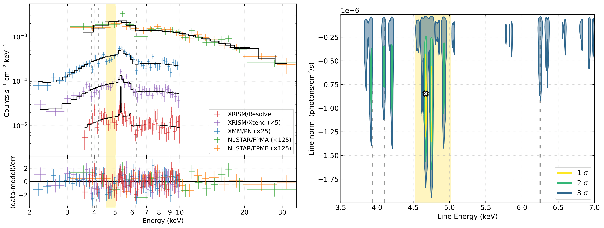<br />
图注：\(\textit{Left:}\) Simultaneous \(\xrism/\resolve\) (red), \(\xrism/\xtend\) (purple), \(\xmm/PN\) (blue), \(\nustar/FPMA\) and FPMB (green and orange) spectra of ESP~39607 fitted with the baseline \(\textsc{MYTorus}\) continuum model. The bottom panel shows the residuals. The normalization of all but \(\resolve\) spectra are shifted as indicated in the legend for visual clarity. \(\textit{Right:}\) Results from the blind absorption scan over line normalization and energy. The white cross marks the best-fit value. 1, 2, and $3\sigma$ confidence contours are shown in yellow, green, and blue, respectively. In both panels, the gold shaded band marks the energy interval containing the primary UFI pair, while the gray dashed lines indicate the energies of the secondary UFI and UFO candidates. All energies are shown in the observed frame.<br />
对应解读：建议重点查看的图表 1、2、3、4；关键图表逐图导读中的图 1、图 2、图 3；模型拟合中关于连续谱残差和盲搜显著性的段落。<br />
入选理由：这张图同时包含多仪器宽能段谱、基线 MYTorus 连续谱残差，以及吸收线能量—归一化的盲搜置信等值线；能直接检验 XRISM、XMM-Newton、NuSTAR 的联合拟合是否可靠，并显示主 UFI 对应能段是否是局部显著的吸收结构，是支撑全文谱线发现的核心图。<br />
来源与置信度：\(arxiv_source\)；high；\(arxiv_source\) / sample701.tex:figure[2]</p>
<p><strong>Fig04</strong><br />
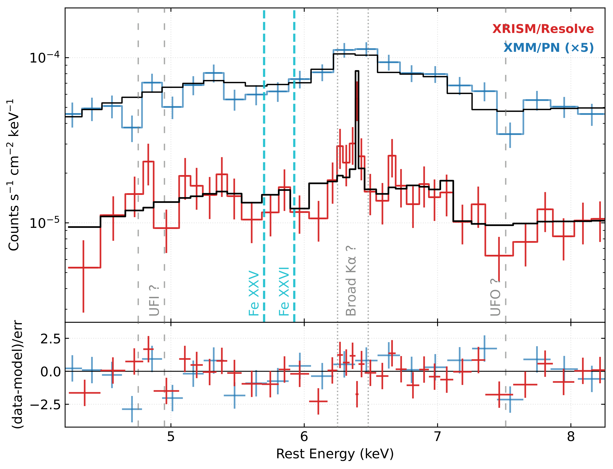<br />
图注：Zoomed-in view of the \(\xrism/\resolve\) (red) and \(\xmm/PN\) (blue) spectra of ESP~39607, shown in the source rest frame, with the PN normalization multiplied by 5 for visual clarity. The black solid curve shows the \(\textsc{MYTorus}\) plus solar-abundance, single-zone \(\textsc{xstar}\) model. Cyan dashed lines mark the Fe\,\(\textsc{xxv}\) He$\alpha$ and Fe\,\(\textsc{xxvi}\) Ly$\alpha$ transitions of the primary UFI at $\sim$5.6 and $\sim$5.9~keV, corresponding to $v_\mathrm{in}\simeq0.16c$. Gray dashed lines indicate the candidate secondary UFI at $\sim$4.8 and $\sim$5.0~keV ($v_\mathrm{in}\sim0.31c$) and the candidate UFO near $\sim$7.5~keV (Section~\ref{sec:secondary}), while the gray dotted lines bracket the broad Fe~K$\alpha$ emission region (Section~\ref{sec:feka}). The lower panel shows the residuals. Data are rebinned for graphic purposes.<br />
对应解读：建议重点查看的图表 2；关键图表逐图导读中的图 2；模型拟合中关于 4.7 和 4.9 keV 负残差是否对应 Fe XXV/Fe XXVI 同一内流速度的段落。<br />
入选理由：这是 Fe K 区的放大图，直接标出源静止系下主 UFI 的 Fe XXV Heα 与 Fe XXVI Lyα 位置及残差，可检查两条吸收特征是否同时与 \(v_in\)≈0.16c 的同一速度解对齐，比全谱图更适合读者判断线识别和局部残差形态。<br />
来源与置信度：\(arxiv_source\)；high；\(arxiv_source\) / sample701.tex:figure[4]</p>
<p><strong>Fig05</strong><br />
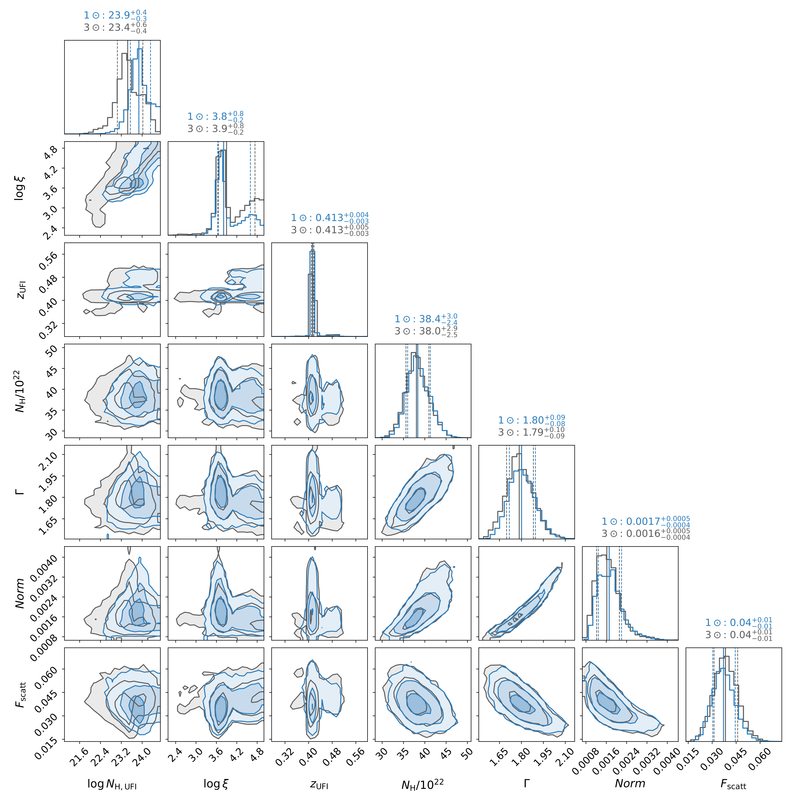<br />
图注：Posterior distributions of the \(\textsc{uxclumpy}\) + single-zone \(\textsc{xstar}\) model parameters for the solar (blue) and $3\,Z_\odot$ (gray) metallicity grids ($v_\mathrm{turb} = 1000$~km~s$^{-1}$; Section~\ref{sec:metallicity}). Off-diagonal panels show 2D marginal posteriors at 1, 2, and $3\sigma$ confidence contours. Diagonal panels show 1D posteriors, with values above each histogram showing the medians with 16th and 84th percentile uncertainties. From left to right, the panels show the logarithm of the absorber column density in cm$^{-2}$, the logarithm of the ionization parameter in erg~s$^{-1}$~cm, the absorber redshift, the AGN line-of-sight column density in units of $10^{22}$ cm$^{-2}$, the photon index, the power-law normalization in photons~keV$^{-1}$~cm$^{-2}$~s$^{-1}$, and the scattered fraction. The MCMC medians are consistent with the best-fit values reported in Table~\(\ref{tab:xstar}.\)<br />
对应解读：建议重点查看的图表 5；关键图表逐图导读中的图 4；模型拟合中关于 \(N_H,abs\)、xi、金属丰度和速度参数退化的段落。<br />
入选理由：该图给出 solar 与 3Z_sun 金属丰度下 xstar 吸收体及连续谱参数的 MCMC 后验分布，直接展示 log \(N_H,abs\)、log xi、吸收体红移等参数的联合置信区间和退化关系，是验证高电离高柱密度结论以及金属丰度影响的关键图。<br />
来源与置信度：\(arxiv_source\)；high；\(arxiv_source\) / sample701.tex:figure[5]</p>
<p><strong>Fig06</strong><br />
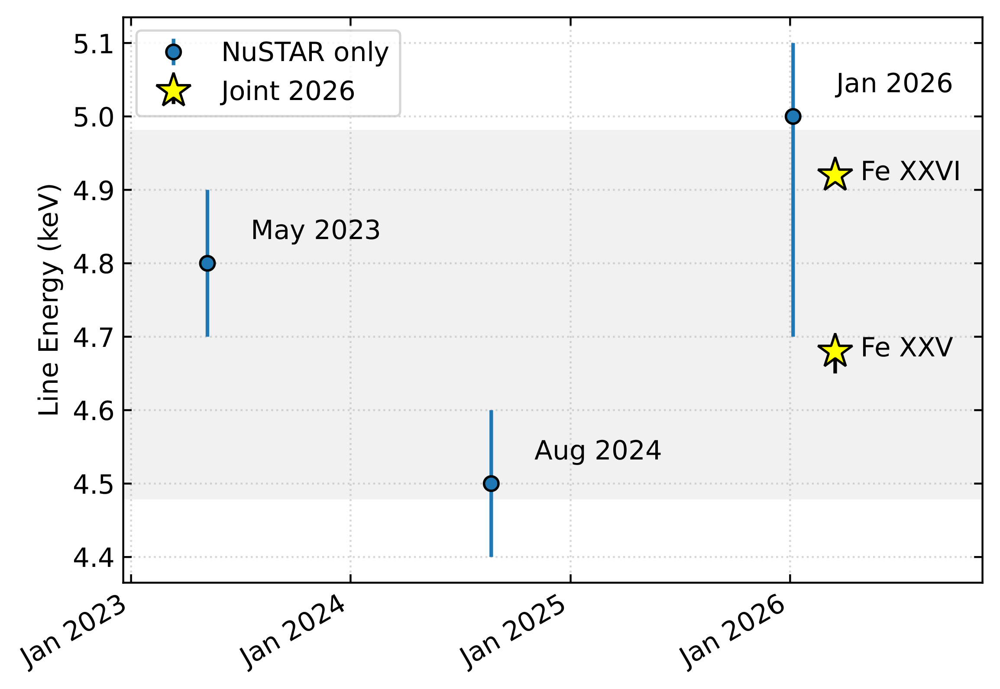<br />
图注：Observed-frame absorption-line energies across the three \nustar\ epochs. Blue circles show the \(\nustar-only\) single-Gaussian measurements, with the 2023 and 2024 values from \(\citetalias{peca25a}.\) Yellow stars show the two components resolved in the joint 2026 fit. The gray band shows the centroid uncertainties from the MC simulations of \(\citetalias{peca25a}.\)<br />
对应解读：建议重点查看的图表 6；关键图表逐图导读中的图 5；详细解读中关于三历元 NuSTAR 与 2026 XRISM 结果一致、联合显著性提高的段落。<br />
入选理由：这张图展示三个 NuSTAR 历元的吸收线观测能量，并与 2026 联合拟合中解析出的两个分量对比，可直接检验多年来线能是否一致，是支撑“至少 2.2 年基线内存在相似内流物质”和吸积级联解释的重要证据。<br />
来源与置信度：\(arxiv_source\)；high；\(arxiv_source\) / sample701.tex:figure[6]</p>
<p><strong>Fig03</strong><br />
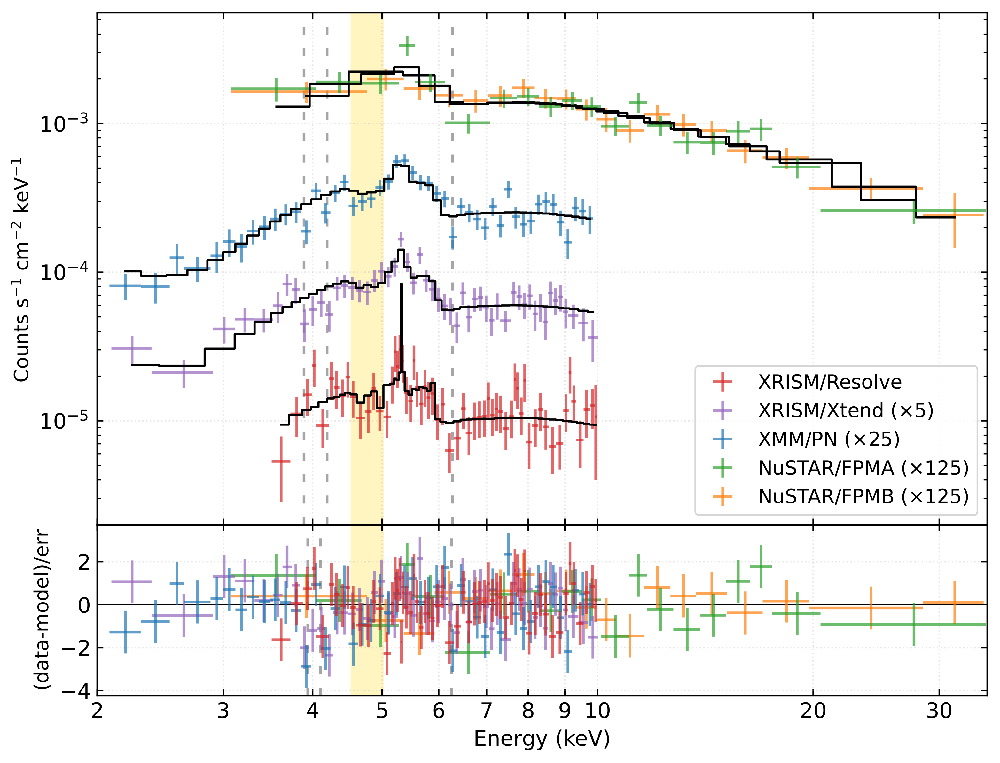<br />
图注：Best-fit observed-frame spectrum of ESP~39607 modeled with \(\textsc{MYTorus}\) and a solar-abundance, single-zone \(\textsc{xstar}\) absorber with $v_\mathrm{turb}=1000$~km~s$^{-1}$ (details in Section~\ref{sec:spectral}). Spectra and color-coding are as in Figure~\(\ref{fig:noabs},\) with all spectra except \resolve\ shifted in normalization for visual clarity. The lower panel shows the residuals. The gold band marks the primary UFI at $v_\mathrm{in}\simeq0.16c$, modeled by Fe\,\(\textsc{xxv}\) He$\alpha$ and Fe\,\(\textsc{xxvi}\) Ly$\alpha$ absorption. Gray dashed lines mark the candidate secondary UFI near $\sim4$~keV and candidate UFO near 6.26~keV (see Section~\ref{sec:secondary}).<br />
对应解读：建议重点查看的图表 3；关键图表逐图导读中关于加入吸收体后残差改善的内容；模型拟合中关于最终 MYTorus+xstar 模型是否同时解释两条吸收线的段落。<br />
入选理由：该图显示加入单区 xstar 吸收体后的最佳拟合宽能段谱和残差，并明确标出 \(v_in\)≈0.16c 的主 UFI 能段；与 Fig02 的未加吸收体基线结果配合，可以判断吸收体是否真正消除了 Fe K 区局部负残差而未引入新的系统结构。<br />
来源与置信度：\(arxiv_source\)；high；\(arxiv_source\) / sample701.tex:figure[3]</p>
<p><strong>Fig08</strong><br />
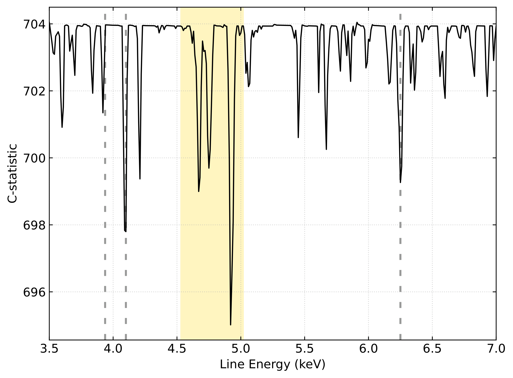<br />
图注：One-dimensional blind scan over the centroid energy of a Gaussian absorption line ($\sigma=10$~eV), performed on the \resolve\ spectrum alone with the \(\textsc{MYTorus}\) model. The gold shaded band marks the energy interval containing the primary UFI pair, while the gray dashed lines indicate the energies of the secondary UFI and UFO candidates, as in Figure~\(\ref{fig:noabs}.\) All energies are shown in the observed frame.<br />
对应解读：建议重点查看的图表 4；关键图表逐图导读中的图 3；模型拟合中关于盲搜、look-elsewhere 风险和 Resolve 单独谱线显著性的段落。<br />
入选理由：该图是仅用 XRISM/Resolve 谱进行的高分辨一维吸收线盲搜，能独立检查主 UFI 能段是否出现突出的搜索峰，以及是否存在可竞争的次级 UFI 或 UFO 候选；它补充 Fig02 的联合谱盲搜结果，有助于评估探测是否依赖特定仪器组合。<br />
来源与置信度：\(arxiv_source\)；high；\(arxiv_source\) / sample701.tex:figure[8]</p>
<h4 id="_45">强相关工作</h4>
<p>这篇工作属于同一源 ESP 39607 的多历元高能 X 射线谱研究；由于摘要明确提到两个早期 NuSTAR 历元，读者应检索同一源名“ESP 39607”、候选别名、以及关键词“ultra-fast inflow”、“redshifted Fe absorption”、“NuSTAR”来找前序论文或会议材料。若没有同一源的正式前作，至少应把它放在红移 Fe K 吸收线和 AGN 内流候选的同类案例中比较。</p>
<p>同类观测方面，过去关于 AGN 中红移 Fe K 吸收线的讨论常涉及 NGC 3516、Mrk 509、PG 1211+143 等源中的瞬态红移吸收或复杂铁线结构；不过不同源的解释分歧很大，有些可被盘反射、热点或统计涨落替代。与超高速外流文献相比，本文的相反之处在于速度方向和物理含义：外流强调反馈能量注入，内流强调核区供给、失败风回落或盘内级联。</p>
<p>基础理论上，应把本文与光电离吸收体建模、AGN 盘风、辐射驱动失败风、磁流体湍流冷凝和混沌冷吸积联系起来。检索关键词可用“AGN ultra-fast outflow review”、“redshifted Fe K absorption AGN”、“XRISM Resolve AGN spectroscopy”、“photoionized absorber XSTAR Cloudy”、“chaotic cold accretion AGN”。若要寻找相反观点，重点检索“Fe K absorption line significance look-elsewhere”、“complex reflection versus absorption AGN”和“partial covering Fe K residuals”。</p>
<p><strong>同一事件 / 同类源线索</strong>：</p>
<ul>
<li><a href="https://arxiv.org/abs/2609.03019">https://arxiv.org/abs/2609.03019</a></li>
<li><a href="https://arxiv.org/pdf/2609.03019">https://arxiv.org/pdf/2609.03019</a></li>
</ul>
<p><strong>相似工作</strong>：</p>
<ul>
<li><a href="https://arxiv.org/abs/astro-ph/0503460">https://arxiv.org/abs/astro-ph/0503460</a></li>
<li><a href="https://arxiv.org/abs/astro-ph/0507674">https://arxiv.org/abs/astro-ph/0507674</a></li>
<li><a href="https://arxiv.org/abs/1501.05396">https://arxiv.org/abs/1501.05396</a></li>
</ul>
<p><strong>基础理论 / 方法工作</strong>：</p>
<ul>
<li><a href="https://arxiv.org/abs/astro-ph/9910007">https://arxiv.org/abs/astro-ph/9910007</a></li>
<li><a href="https://arxiv.org/abs/1212.0558">https://arxiv.org/abs/1212.0558</a></li>
<li><a href="https://arxiv.org/abs/1511.07558">https://arxiv.org/abs/1511.07558</a></li>
</ul>
<p><strong>相反观点 / 张力线索</strong>：</p>
<ul>
<li><a href="https://arxiv.org/abs/0704.3827">https://arxiv.org/abs/0704.3827</a></li>
<li><a href="https://arxiv.org/abs/1306.1612">https://arxiv.org/abs/1306.1612</a></li>
</ul>
</details>
<h3 id="5-unlocking-the-qpe-mystery-star-disk-collisions-in-realistic-agn-disks">5. Unlocking the QPE Mystery: Star-Disk Collisions in Realistic AGN Disks</h3>
<ul>
<li>来源：arXiv / astro-ph.HE</li>
<li>链接：https://arxiv.org/abs/2609.03011v1</li>
<li>作者：Zhaohuan Zhu, Xiaoshan Huang, Yan-Fei Jiang, Shunquan Huang</li>
<li>评分：novelty 8/10，importance 8/10，relevance 8/10，final 9.00/10</li>
<li>推荐理由：用更现实AGN盘结构的辐射流体模拟解释QPE的持续时间、亮度和周期趋势；属于X射线瞬变/AGN吸积理论，结果清楚且有观测解释力。</li>
</ul>
<p><strong>中文题目</strong>：解开 QPE 之谜：现实 AGN 盘中的恒星—盘碰撞</p>
<p><strong>做了什么</strong>：这篇论文用二维多频辐射流体模拟研究一种具体的准周期爆发（QPE）模型：一颗处在极端质量比旋进轨道上的恒星反复穿过超大质量黑洞周围的吸积盘，每次撞盘产生软 \(X\) 射线耀发。作者的关键改进是没有采用薄而理想化的盘，而是引入辐射磁流体模拟得到的亚爱丁顿 AGN 盘结构，其中盘大气可膨胀到 \(z/r\sim 1\)。他们发现，厚盘大气让弓形激波在不同高度和不同时间陆续 breakout，耀发持续时间由激波穿越光学厚盘的传播时间决定，自然约为轨道周期的 \(10\%\)，并且更斜的撞击会产生更长、更亮的耀发。论文还指出，如果现实盘的面密度近似满足 \(\Sigma\propto r^2\)，碰撞能量可随周期呈 \(E\propto P^{2/3}\)，可能解释弱 QPE 中的亮度—周期趋势。</p>
<p><strong>为什么重要</strong>：QPE 的难点不是单次软 \(X\) 射线闪光，而是同时解释准周期性、较大的占空比、软热谱、耀发持续时间与复现周期的比例关系，以及更长爆发更亮这一经验趋势。传统恒星撞薄盘图像容易给出过短的闪光；这篇论文表明，一旦 AGN 盘有真实的厚大气和辐射扩散层，同一机制可以把短促冲击变成持续相当长的热辐射事件。它把 QPE 从“几何计时模型”推进到“可用盘垂向结构检验的辐射流体模型”。</p>
<p><strong>理论 / 观测 / 仪器方法价值</strong>：理论价值在于把 EMRI 恒星撞盘模型与现实辐射 MHD 盘结构连接起来，给出占空比、能量标度和光变形状的物理来源。观测价值在于提出 QPE 光变的持续时间、峰值亮度、周期依赖性可能反推 AGN 盘的大气厚度、光学深度和面密度径向分布。方法价值在于使用多频辐射流体模拟追踪激波传播、breakout 与热辐射形成，而不是只做能量守恒量级估算。</p>
<p><strong>为什么应该关注</strong>：如果你关心低质量星系核中的暂现源、TDE 与 AGN 盘相互作用、EMRI 电磁对应体，或未来 LISA 时代的多信使前景，这篇文章值得看。它提出 QPE 可能不是单纯的黑洞附近时钟，而是恒星轨道与吸积盘垂向结构共同编码的信号；也就是说，QPE 光变曲线可能是少数能直接探测亚爱丁顿 AGN 内盘厚大气的观测窗口。</p>
<details class="paper-detail">
<summary>展开详细解读：文章讲解、背景、理论、重点章节、图表与相关工作</summary>
<h4 id="_46">文章详细讲解</h4>
<p>科学问题：QPE 是在若干低质量星系核中发现的重复软 \(X\) 射线爆发，典型复现时间从数小时到数天，单次爆发持续时间通常为复现时间的 \(\sim 10\%-20\%\)。观测上还有一个重要趋势：更长的爆发往往更亮。恒星在极端质量比旋进轨道上反复穿越超大质量黑洞吸积盘，是解释准周期性的有吸引力模型，因为轨道本身提供了稳定时钟。但薄盘撞击的经典估算往往产生过短的冲击冷却时间，难以解释 QPE 的较大占空比和持续热辐射。</p>
<p>作者怎么做：论文进行了二维、多频辐射流体模拟，研究恒星穿过 AGN 盘时形成的弓形激波、能量沉积、辐射扩散和激波 breakout。核心改进是盘结构来自已有的辐射 MHD 亚爱丁顿吸积盘模拟，而不是人为设定的薄、冷、垂向高斯盘。这个现实盘具有膨胀的大气，光学厚物质可延伸到 \(z/r\sim 1\)，并且有效 breakout 表面位于大约 \(z/r\sim 0.7\)。这使得恒星撞盘不是一次穿过几何薄层的瞬时事件，而是在光学厚大气中形成空间范围很大的冲击结构。</p>
<p>关键结果：模拟显示，弓形激波的不同部分并不会同时逃逸到可见表面，而是在不同高度、不同时间陆续 breakout。观测到的软 \(X\) 射线耀发持续时间因此主要由激波穿过光学厚盘大气的传播时间控制，而不是简单由恒星半径或局部动力学时间决定。该时间尺度可自然达到轨道周期的 \(\sim 10\%\)，与 QPE 占空比相符。更斜的恒星—盘相互作用会延长穿越路径、增加参与激波的盘物质质量，从而产生更长且更亮的爆发。作者还强调现实 AGN 盘模型中面密度可近似满足 \(\Sigma\propto r^2\)，这会给出碰撞能量随轨道周期 \(P\) 增长的标度 \(E\propto P^{2/3}\)，为弱 QPE 的亮度—周期关系提供解释。</p>
<p>局限和下一步：这仍是二维局部辐射流体计算，恒星完整轨道、盘的三维磁湍流、重复撞击后的盘结构重塑、恒星包层剥离和广义相对论轨道进动并未完整自洽包含。多频辐射处理虽比灰近似更现实，但从模拟辐射场到真实望远镜能带中的光谱、吸收和仪器响应仍需进一步合成。下一步应把局部撞击模拟嵌入全局 EMRI 轨道演化，比较不同 QPE 源的周期、占空比、温度、峰值通量和能量序列，并检验同一模型能否同时解释强 QPE 与弱 QPE。</p>
<h4 id="_47">关键结果是怎么做出来的</h4>
<p>本文最重要的证据链从样本层面并不是重新统计所有 QPE，而是抓住已知 QPE 的两条稳健经验事实：单次爆发持续时间约为复现时间的 \(10\%-20\%\)，并且较长爆发通常更亮。作者把这两条趋势作为模型必须同时满足的观测约束。事件数方面，QPE 目前仍是小样本类别，论文更像是针对同类现象的物理机制检验，而不是人口统计学分析；因此读者应把重点放在模拟是否产生正确数量级和正确相关方向，而不是把它看成样本完备性研究。</p>
<p>数据和初始条件的关键选择是采用辐射 MHD 亚爱丁顿盘的垂向结构。薄盘近似下，恒星穿盘路径短、光学厚层薄，激波能量很快到达表面，难以得到长达 \(0.1P\) 的耀发。现实盘大气则不同：密度虽随高度下降，但光学深度仍足够大，激波需要有限时间传播到 breakout 面。作者通过二维多频辐射流体计算跟踪弓形激波在这种垂向结构中的运动，得到随时间变化的辐射输出和有效温度。</p>
<p>显著性在这篇文章中主要不是以传统 \(p\) 值给出，而是通过物理标度与模拟结果的一致性来支撑。占空比 \(t_{\rm flare}/P\sim 0.1\) 是一个数量级检验：如果模拟的 breakout 持续时间系统性短一个数量级，则模型失败；如果自然落在观测区间，则说明厚盘大气是关键自由度。亮度—持续时间关系也通过改变撞击几何来检验：更斜入射导致更长路径、更大相互作用体积、更高辐射能量，这与观测趋势同向。</p>
<p>支撑结论的图表应主要包括盘密度和光学深度垂向剖面、激波传播和 breakout 的二维快照、合成光变曲线、不同撞击角下的峰值光度与持续时间比较，以及能量或光度随周期的标度图。读者要特别注意这些图中 breakout 面是否真的位于扩展大气而非任意设定边界，光变持续时间如何定义，峰值光度是否对能带选择敏感，以及不同模型之间的差异是否大于数值扩散和边界条件带来的误差。</p>
<p>主要系统误差来自盘模型、维度和辐射处理。盘的面密度 \(\Sigma\propto r^2\) 来自特定亚爱丁顿辐射 MHD 模型，不一定适用于所有 QPE 宿主；二维模拟可能高估或低估三维湍流混合、侧向泄漏和激波不稳定性；恒星被反复撞击后的结构变化可能改变有效截面。稳健性检验应关注不同盘高度、不同入射角、不同恒星半径和不同局部轨道速度下，\(t_{\rm flare}/P\) 与亮度—时长正相关是否仍保持。</p>
<details class="paper-subdetail">
<summary>展开背景、理论、公式、模型、章节和图表导读</summary>
<h4 id="_48">背景知识</h4>
<p>QPE 是近年高能时域天文学中很特殊的一类核区暂现现象。它们表现为低质量星系中心的准周期软 \(X\) 射线爆发，光谱通常偏热且软，爆发之间源可以显著变暗。与普通 AGN 随机变异不同，QPE 的时间序列有较清楚的复现结构；与经典潮汐瓦解事件不同，QPE 可以在多个周期中重复出现，提示某种长寿命时钟或重复触发器。</p>
<p>历史上，对 QPE 的解释大致分为几类：吸积盘热—黏滞或辐射不稳定、围绕超大质量黑洞的次级致密天体调制、恒星或白矮星反复受潮汐剥离、以及恒星或紧凑天体周期性穿越盘面。盘不稳定模型容易产生重复性，但要解释稳定周期和短占空比并不简单；潮汐剥离模型能给出轨道时钟，但质量损失和光谱温度需要细调；恒星撞盘模型的优势是准周期性自然，能量来源明确，但过去常被质疑耀发太短。</p>
<p>为什么现在值得重看？一方面，QPE 样本逐渐增加，观测不再只要求解释“重复爆发”这一条，而是要求解释占空比、温度、能量、周期漂移、强弱爆发交替等更多结构。另一方面，AGN 内盘的数值模拟已从解析薄盘模型发展到辐射 MHD 计算，显示亚爱丁顿盘也可能存在扩展、非平面、辐射支撑的大气。若真实盘比经典薄盘厚得多，撞盘信号的持续时间和辐射效率都会改变。</p>
<p>该领域常见误区之一是把恒星撞盘等同于“恒星穿过几何薄片，所以辐射必须很短”。本文强调，观测到的是辐射从光学厚介质 breakout 的时间结构，而不是机械撞击瞬间本身。另一个误区是把 QPE 周期直接等同于圆轨道周期；真实 EMRI 轨道可能有偏心率、倾角、双次穿盘、相对论进动，观测复现时间与轨道元素之间有模型依赖。还有一个误区是只比较总能量而忽略能带，软 \(X\) 射线观测对温度、吸收和辐射转移非常敏感。</p>
<h4 id="_49">基础理论 / 方法脉络</h4>
<p>从物理图像看，恒星以超开普勒或近开普勒相对速度穿过黑洞吸积盘时，会在前方产生强弓形激波。盘气体被压缩和加热，恒星扫过的柱质量把部分轨道动能转化为热能和辐射。若介质光学薄，能量几乎立即逃逸；若介质光学厚，辐射要通过扩散或随激波传播到低光学深度区域后才释放，观测光变就会被盘的垂向光学深度结构拉长。</p>
<p>QPE 的关键时间尺度包括轨道周期 \(P\)、局部开普勒频率 \(\Omega_{\rm K}\)、激波穿越或传播时间 \(t_{\rm sh}\)、辐射扩散时间 \(t_{\rm diff}\)、以及观测定义的耀发持续时间 \(t_{\rm flare}\)。在经典薄盘中，盘尺度高 \(H\ll r\)，通常预期 \(t_{\rm flare}\ll P\)。但如果光学厚大气延伸到 \(H/r\sim 1\)，激波从中平面附近到 breakout 面的距离可达轨道半径的相当部分，\(t_{\rm sh}\) 就可能达到 \(0.1P\) 的量级。</p>
<p>本文的模型假设包括：局部撞击区域可用二维辐射流体描述；盘背景结构取自现实辐射 MHD 模拟；恒星作为穿越盘的障碍物或引力/几何截面源触发弓形激波；多频辐射转移决定不同能带中的能量释放。关键量包括盘面密度 \(\Sigma\)、垂向密度 \(\rho(z)\)、光学深度 \(\tau(z)\)、相对速度 \(v_{\rm rel}\)、撞击角 \(\theta\)、总辐射能量 \(E\)、峰值光度 \(L_{\rm pk}\) 与持续时间 \(t_{\rm flare}\)。</p>
<p>观测和模型比较的主要退化关系在于：更大的 \(\Sigma\)、更大的相对速度、更大的有效截面和更斜的撞击都可能提高总能量或拉长持续时间；温度和软 \(X\) 射线光度还受吸收柱密度、色温修正和能带选择影响。因此，不能只用一个峰值光度判断模型成败，而应联合比较周期、占空比、光变形状、温度演化和能量—周期标度。系统误差还包括盘结构是否代表真实低质量 AGN、二维模拟是否能代表三维泄漏，以及重复撞击是否改变下一次爆发的初始条件。</p>
<h4 id="_50">公式与推导</h4>
<p>第一步是轨道时钟。若恒星在质量为 \(M_\bullet\) 的黑洞势中近似按半长轴 \(a\) 运动，轨道周期满足</p>
<div class="math-display">\[P=2\pi\left(\frac{a^3}{G M_\bullet}\right)^{1/2}.\]</div>
<p>这里 \(G\) 是引力常数，\(M_\bullet\) 是黑洞质量，\(a\) 是轨道半长轴。这个式子把观测复现时间与撞击半径的数量级联系起来；若撞击半径随 \(a\) 缩放，则 \(r\propto P^{2/3}\)。</p>
<p>第二步是局部相对速度和可用动能。盘气体近似以开普勒速度运动，量级为</p>
<div class="math-display">\[v_{\rm K}=\left(\frac{G M_\bullet}{r}\right)^{1/2},\qquad v_{\rm rel}=\eta v_{\rm K},\]</div>
<p>其中 \(r\) 是撞击半径，\(\eta\) 描述恒星轨道与盘流之间的相对速度因子，受倾角、偏心率和穿盘相位影响。强激波可把扫掠气体的部分动能转化为热能。</p>
<p>第三步是恒星扫过的盘质量。若恒星有效截面为 \(A_{\ast}\)，穿盘角相对盘法线为 \(\theta\)，则扫掠柱质量可写成近似</p>
<div class="math-display">\[M_{\rm sw}\simeq \frac{\Sigma A_{\ast}}{\cos\theta}.\]</div>
<p>这里 \(\Sigma\) 是盘面密度，\(A_{\ast}\) 可取几何截面或含引力聚焦修正的有效截面，\(1/\cos\theta\) 表示斜穿盘时路径变长。该式说明为什么更斜的撞击会更强、更久。</p>
<p>第四步是碰撞能量的量级估算：</p>
<div class="math-display">\[E_{\rm coll}\simeq \frac{1}{2}M_{\rm sw}v_{\rm rel}^2\simeq \frac{1}{2}\frac{\Sigma A_{\ast}}{\cos\theta}\eta^2\frac{G M_\bullet}{r}.\]</div>
<p>它给出总可释放能量的基本标度。若 \(A_{\ast}\)、\(\eta\) 和 \(\theta\) 暂时固定，能量主要由 \(\Sigma(r)/r\) 控制。</p>
<p>第五步连接到本文强调的现实盘面密度。若辐射 MHD 盘给出</p>
<div class="math-display">\[\Sigma(r)=\Sigma_0\left(\frac{r}{r_0}\right)^2,\]</div>
<p>则有</p>
<div class="math-display">\[E_{\rm coll}\propto \frac{\Sigma(r)}{r}\propto r.\]</div>
<p>再结合 \(r\propto P^{2/3}\)，得到</p>
<div class="math-display">\[E_{\rm coll}\propto P^{2/3}.\]</div>
<p>这就是论文用来解释弱 QPE 亮度或能量随周期增加趋势的核心标度。</p>
<p>第六步是光学深度与 breakout 条件。自高度 \(z\) 向外的光学深度可写为</p>
<div class="math-display">\[\tau(z)=\int_z^{\infty}\kappa_\nu \rho(z')\,dz',\]</div>
<p>其中 \(κ_\nu\) 是频率相关不透明度，\(\rho(z)\) 是垂向密度。激波 breakout 通常发生在辐射能在动力学时间内可逃逸的位置，量级条件可写为</p>
<div class="math-display">\[\tau_{\rm bo}\sim \frac{c}{v_{\rm sh}},\]</div>
<p>其中 \(c\) 是光速，\(v_{\rm sh}\) 是激波速度。现实厚大气把满足该条件的表面推到较高的 \(z/r\)。</p>
<p>第七步是耀发持续时间。若激波从能量沉积区传播到 breakout 面的有效距离为 \(\Delta z_{\rm bo}\)，则</p>
<div class="math-display">\[t_{\rm flare}\sim t_{\rm sh}\sim \frac{\Delta z_{\rm bo}}{v_{\rm sh}}.\]</div>
<p>当 \(\Delta z_{\rm bo}\sim 0.5r\) 且 \(v_{\rm sh}\) 是局部轨道速度的若干倍或同量级时，\(t_{\rm flare}/P\) 可自然达到 \(\sim 0.1\)，这正是本文的关键物理解释。</p>
<p>第八步是观测光度。若总辐射能量在持续时间 \(t_{\rm flare}\) 内释放，平均光度为</p>
<div class="math-display">\[L_{\rm X}\sim \epsilon_{\rm X}\frac{E_{\rm coll}}{t_{\rm flare}},\]</div>
<p>其中 \(ε_{\rm X}\) 是落入观测软 \(X\) 射线能带的辐射效率。更斜撞击同时增大 \(E_{\rm coll}\) 和 \(t_{\rm flare}\)，因此是否“更长也更亮”取决于能量增加是否超过时间拉长；本文模拟显示在现实盘结构中可以满足这一点。</p>
<p>第九步是模型与光变数据比较的统计形式。给定观测通量 \(F_i\)、误差 \(\sigma_i\) 和模型通量 \(F_{\rm mod}(t_i|\boldsymbol{\Theta})\)，可用</p>
<div class="math-display">\[\chi^2(\boldsymbol{\Theta})=\sum_i\frac{\left[F_i-F_{\rm mod}(t_i|\boldsymbol{\Theta})\right]^2}{\sigma_i^2}\]</div>
<p>或泊松似然比较模型。这里 \(\boldsymbol{\Theta}\) 包括 \(M_\bullet\)、\(r\)、\(\Sigma\)、\(\theta\)、\(A_\ast\) 和辐射参数。这个诊断能检验模拟光变形状是否不仅在数量级上，而且在上升、峰值和衰减阶段接近观测。</p>
<h4 id="_51">模型拟合 / 应用方法</h4>
<p>这篇论文的核心不是对某一个 QPE 源做端到端贝叶斯拟合，而是通过辐射流体模拟建立物理标度，并与已知 QPE 的占空比和亮度—时长趋势比较。若把它扩展成实际拟合，直接拟合量应包括复现周期 \(P\)、持续时间 \(t_{\rm flare}\)、峰值软 \(X\) 射线光度 \(L_{\rm pk}\)、总辐射能量 \(E_{\rm X}\)、黑体或多温黑体温度 \(T\)、以及光变上升和衰减的不对称性。</p>
<p>模型参数可以分成轨道参数、盘参数和辐射参数三类。轨道参数包括黑洞质量 \(M_\bullet\)、撞击半径 \(r\)、轨道倾角、偏心率和穿盘相位；盘参数包括 \(\Sigma(r)\)、垂向密度 \(\rho(z)\)、不透明度 \(\kappa_\nu\)、大气厚度和湍流状态；辐射参数包括色温修正、能带效率 \(\epsilon_{\rm X}\)、吸收柱密度和观测响应。理想情况下，应对多次爆发联合拟合，让同一源的固定参数共享，而允许轨道相位或局部盘扰动逐次变化。</p>
<p>似然函数取决于数据产品。若使用光子事件列表，泊松似然比简单的高斯 \(\chi^2\) 更合适；若使用背景扣除后的分箱光变，可用协方差矩阵处理相邻时间箱相关性。光谱—时间联合拟合尤其重要，因为单纯提高 \(ε_{\rm X}\) 或改变吸收也能改变软 \(X\) 射线峰值，看起来像能量变化。残差诊断应检查模型是否系统性低估快速上升沿、高估尾部、或无法再现强弱峰交替。</p>
<p>主要退化关系包括 \(\Sigma\) 与有效截面 \(A_\ast\) 的退化、撞击角 \(\theta\) 与盘厚度的退化、黑洞质量 \(M_\bullet\) 与撞击半径 \(r\) 的周期退化，以及温度 \(T\) 与吸收柱密度的谱形退化。模型可能失败的场景包括：某些 QPE 的占空比远小于厚盘传播时间；光谱温度演化与激波 breakout 预期相反；长期周期漂移不能由 EMRI 轨道演化或盘进动解释；或者宿主 AGN 的吸积率不支持所需的厚大气结构。</p>
<p>实际应用上，这一模型最有价值的不是给出单个参数的精确值，而是提供一组可检验的联合预言：更长爆发应伴随更高能量或更高峰值光度；持续时间与盘垂向光学厚度有关；弱 QPE 的能量可能随周期近似按 \(P^{2/3}\) 增长；同一源多次爆发的变化可追踪撞击角或局部盘结构变化。未来可用 XMM-Newton、Chandra、eROSITA 后续巡天以及 Athena 类任务的时间分辨光谱来约束这些预言。</p>
<h4 id="_52">重点章节 / 结果段落怎么读</h4>
<p>一、引言和观测动机：读者应先看作者如何总结 QPE 的两条核心经验趋势，即 \(t_{\rm flare}/P\sim 0.1-0.2\) 和更长爆发更亮。这里要注意作者不是泛泛解释 QPE，而是把这两条趋势设为恒星撞盘模型必须通过的硬检验。</p>
<p>二、AGN 盘背景模型：重点看盘结构来自哪些辐射 MHD 模拟、适用的吸积率范围、垂向密度和光学深度如何分布，以及为什么会有延伸到 \(z/r\sim 1\) 的厚大气。读者应检查 \(\Sigma\propto r^2\) 是否是局部径向范围内的近似，而不是普适定律。</p>
<p>三、二维多频辐射流体方法：这一部分要关注计算区域、边界条件、恒星如何实现、辐射频率组如何设置、初始相对速度和撞击角如何选择。数值扩散、二维几何和辐射闭合关系会直接影响 breakout 时间和光变宽度。</p>
<p>四、模拟结果和光变：重点阅读激波快照、breakout 面随时间变化、合成光变曲线和不同入射角模型比较。判断结论时，不只看峰值光度，还要看光变持续时间定义、能量积分范围、软 \(X\) 射线能带中的辐射比例。</p>
<p>五、讨论和观测含义：看作者如何把 \(\Sigma\propto r^2\) 推到 \(E\propto P^{2/3}\)，以及他们如何界定该趋势适用于弱 QPE。还要看局限性段落，包括三维效应、盘模型不确定性、重复撞击和 EMRI 长期演化。</p>
<h4 id="_53">建议重点查看的图表</h4>
<ol>
<li>
<p>盘垂向结构图：检查 \(\rho(z)\)、温度、辐射能量密度或 \(\tau(z)\) 随 \(z/r\) 的变化，尤其是光学厚大气是否真的延伸到 \(z/r\sim 1\)。</p>
</li>
<li>
<p>激波传播二维快照：看弓形激波形状、能量沉积区、breakout 面位置以及不同激波部分是否分时逃逸，这是解释长持续时间的核心图。</p>
</li>
<li>
<p>合成软 \(X\) 射线光变：检查横轴时间是否以轨道周期或局部动力学时间归一化，纵轴是总光度还是某能带光度；重点看 \(t_{\rm flare}/P\) 是否接近 \(0.1\)。</p>
</li>
<li>
<p>不同撞击角对比图：看更斜入射是否同时增加持续时间和峰值或总能量，误差或模型间差异是否足够明显。</p>
</li>
<li>
<p>能量—周期标度图：检查 \(E\propto P^{2/3}\) 是解析标度、模拟点还是观测点拟合；注意强 QPE 与弱 QPE 是否分开讨论。</p>
</li>
<li>
<p>光谱或温度演化诊断：若文中给出多频辐射结果，应看有效温度是否落在软 \(X\) 射线 QPE 的观测范围，以及温度是否随光变阶段合理变化。</p>
</li>
<li>
<p>稳健性或参数扫描表：检查盘厚度、面密度、入射速度、恒星半径和数值分辨率改变后，占空比和亮度—时长趋势是否保持。</p>
</li>
<li>
<p>残差式比较或观测汇总表：若作者列出已知 QPE 的 \(P\)、\(t_{\rm flare}\)、\(L_{\rm X}\)，应看这些量的测量定义是否一致，避免把不同仪器和能带的量直接混合。</p>
</li>
</ol>
<h4 id="_54">关键图表逐图导读</h4>
<p>图 1：通常应是模型示意或盘垂向结构。横轴可能是高度 \(z/r\) 或半径 \(r\)，纵轴可能是密度 \(\rho\)、面密度 \(\Sigma\)、光学深度 \(\tau\) 或温度。读图重点是确认现实盘不是薄片，而是有延伸到 \(z/r\sim 1\) 的光学厚或半光学厚大气。陷阱是不要只看密度很低就认为无关；辐射 breakout 由积分光学深度决定。</p>
<p>图 2：应关注恒星撞盘后的二维流体快照。坐标轴多半是沿盘面和垂直盘面的局部坐标，颜色表示密度、温度、辐射能量或速度散度，曲线可能标出 \(\tau\) 或 breakout 面。主要结论是弓形激波在扩展大气中传播，不同部位在不同时间到达可逃逸层。读图陷阱是二维截面会把三维侧向泄漏隐藏起来，因此只能把形态视为机制证明。</p>
<p>图 3：合成光变曲线。横轴应为时间，可能以轨道周期 \(P\) 或局部开普勒时间归一化；纵轴为总辐射光度或软 \(X\) 射线光度。关键是耀发宽度是否达到 \(\sim 0.1P\)，以及上升和衰减是否由连续 breakout 而非人为平滑造成。若有多条模型线，要比较薄盘与现实厚盘之间的宽度差异。</p>
<p>图 4：不同撞击角或不同盘模型的参数扫描。横轴可能是撞击角 \(\theta\)、时间或模型编号，纵轴可能是 \(L_{\rm pk}\)、\(E\) 或 \(t_{\rm flare}\)。本文关键论断是更斜入射更长也更亮，因此应看数据点是否沿同一方向单调变化。陷阱是若只看峰值光度，可能忽略总能量和持续时间的协变。</p>
<p>图 5：能量—周期关系或面密度径向关系。若横轴为 \(P\)，纵轴为 \(E\) 或 \(L\)，模型线可能给出 \(E\propto P^{2/3}\)。应检查观测点误差条和源间散布是否允许这一斜率，也要看作者是否说明该关系主要适用于弱 QPE。陷阱是把 \(L_{\rm pk}\) 与总能量 \(E\) 混用会改变斜率解释。</p>
<p>图 6：光谱或多频输出图。横轴可能是光子能量或时间，纵轴为 \(\nu L_\nu\)、温度或能带光度。重点是模型辐射是否落在软 \(X\) 射线范围，而不是主要在 EUV 或更低能段。陷阱是宿主吸收和仪器能带会强烈改变可见光谱，因此模型本征谱与观测谱不能简单一一对应。</p>
</details>
<h4 id="_55">论文原图 / 可嵌入图片</h4>
<p><strong>Fig04</strong><br />
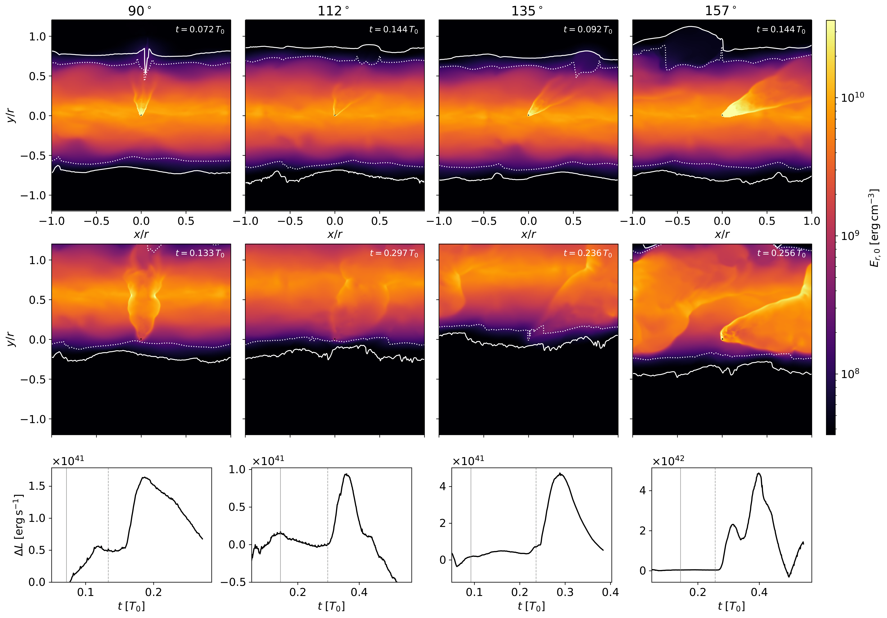<br />
图注：Snapshots of the radiation energy density $E_{r,0}$ at two moments: when the star is at the disk midplane (top row) and when the star is about to exit the disk (middle row), for four different stellar incident angles $\theta = 90^\circ,\, 112^\circ,\, 135^\circ,$ and $157^\circ$ in the disk co-orbiting frame (left to right). The white solid and dotted contours mark the surface where the electron-scattering optical depth integrated from above reaches $\tau_\mathrm{es} = 1$ and 7. For the most oblique case ($\theta = 157^\circ$), the bow shock breaks out through the disk surface before the star exits, so the middle snapshot is instead taken at the moment of first shock breakout. The bottom panels show the corresponding excess luminosity $\Delta L$ as a function of time; vertical dashed lines indicate the times of the snapshots shown above.<br />
对应解读：对应“建议重点查看的图表”第3、4项，以及“关键图表逐图导读”图4：不同撞击角对比、合成光变和更斜入射导致更长更亮耀发。<br />
入选理由：这张图同时给出不同入射角下的辐射能量密度二维快照、τ=1/7 breakout 面和过量光度随时间变化，直接检验论文最核心的趋势：更斜的星—盘碰撞会延长传播路径、改变 breakout 时序，并产生更长且更亮的光变。相比单纯结构图，它把几何、辐射场和可观测光变联系在一起，科学支撑力最高。<br />
来源与置信度：\(arxiv_source\)；high；\(arxiv_source\) / QPE.tex:figure[4]</p>
<p><strong>Fig03</strong><br />
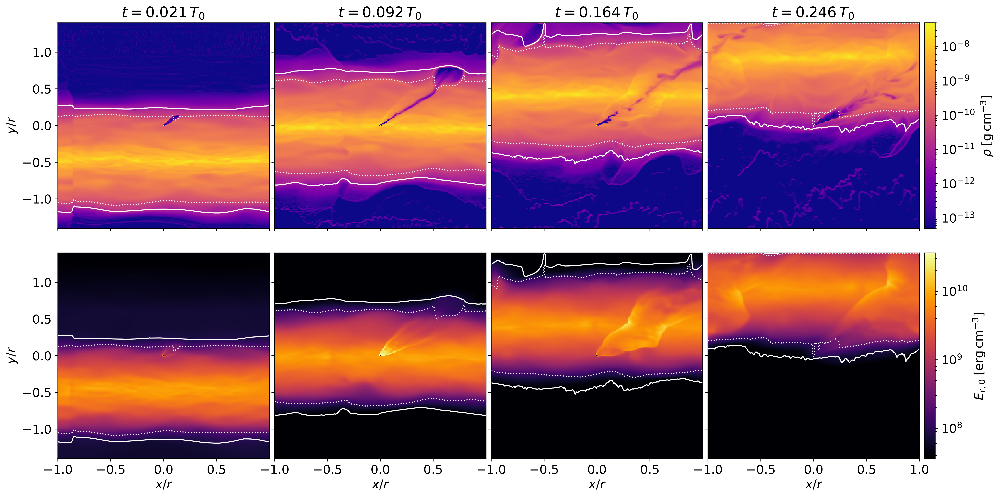<br />
图注：Snapshots of the gas density $\rho$ (top row) and radiation energy density $E_{r,0}$ (bottom row) during the passage of the solid sphere through the AGN disk, at four successive times $t = 0.021,\, 0.092,\, 0.164,$ and $0.246\,T_0$ (left to right). The white solid and dotted contours mark the surface where the electron-scattering optical depth integrated from above reaches $\tau_\mathrm{es} = 1$ and 7.<br />
对应解读：对应“建议重点查看的图表”第2项，以及“关键图表逐图导读”图2：弓形激波传播、能量沉积区、breakout 面位置和分时逃逸机制。<br />
入选理由：这张图展示恒星穿盘过程中气体密度与辐射能量密度的时间序列快照，并标出从上方积分的τ_es=1和7等光学深度面，是判断激波是否在膨胀盘大气中逐步 breakout 的关键证据。它直接支撑长持续时间不是人为平滑、而是由不同激波部分陆续到达可逃逸层造成的解释。<br />
来源与置信度：\(arxiv_source\)；high；\(arxiv_source\) / QPE.tex:figure[3]</p>
<p><strong>Fig05</strong><br />
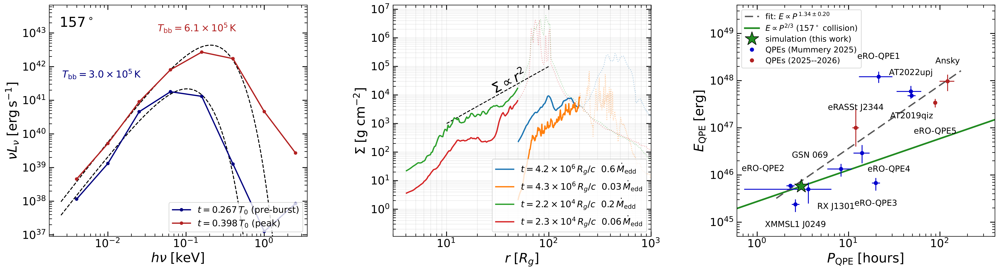<br />
图注：(\textit{Left}) Spectral energy distributions of the luminosity $\nu L_\nu$ before the outburst ($t = 0.267\,T_0$, pre-burst) and at peak ($t = 0.398\,T_0$) for the $\theta = 157^\circ$ case. Dashed black curves show best-fitting blackbody spectra, at $T_\mathrm{bb} = 3.0\times10^5\,\mathrm{K}$ and $T_\mathrm{bb} = 6.1\times10^5\,\mathrm{K}$, respectively. (\textit{Middle}) Disk surface density $\Sigma$ as a function of radius $r$ at the end of the simulations for four runs: AGN0.2 (green) and AGN0.07 (red) from \(\citet{Jiang2019},\) and AGNUVB0.6 (blue) and AGNUVB0.03 (orange) from \(\citet{Jiang2025}.\) The dashed black line indicates the $\Sigma \propto r^2$ scaling. Dotted portions of each curve denote radii significantly affected by the torus initialization. { (\textit{Right}) Radiated energy per eruption $E_\mathrm{QPE}$ against recurrence time $P_\mathrm{QPE}$ for the observed QPE population: blue points are the compilation of \(\citet{mummery2025collisions},\) red points are sources reported since. The green star is the flare energy measured in our $157^\circ$ simulation, emerging through one disk surface, plotted at the simulated orbital period $T_0 = 3.04\,\mathrm{hr}$, and the green line extends it as $E \propto P^{2/3}$ (Equation~\ref{eq:eimp}) with no free parameters. The grey dashed line is a power-law fit to the observed points.}<br />
对应解读：对应“建议重点查看的图表”第5、6、8项，以及“关键图表逐图导读”图5、图6：光谱温度、Σ∝r²、E∝P^{2/3}与观测QPE能量—周期关系。<br />
入选理由：这张图把三个关键观测连接量放在一起：峰值与爆发前SED及黑体温度、AGN盘面密度径向标度Σ∝r²、以及QPE辐射能量随复现周期的观测点和E∝P^{2/3}模型线。它是论文从局部辐射流体模拟外推到QPE群体趋势的主要依据，尤其适合解读亮度—周期和软X射线温度是否合理。<br />
来源与置信度：\(arxiv_source\)；high；\(arxiv_source\) / QPE.tex:figure[5]</p>
<p><strong>Fig02</strong><br />
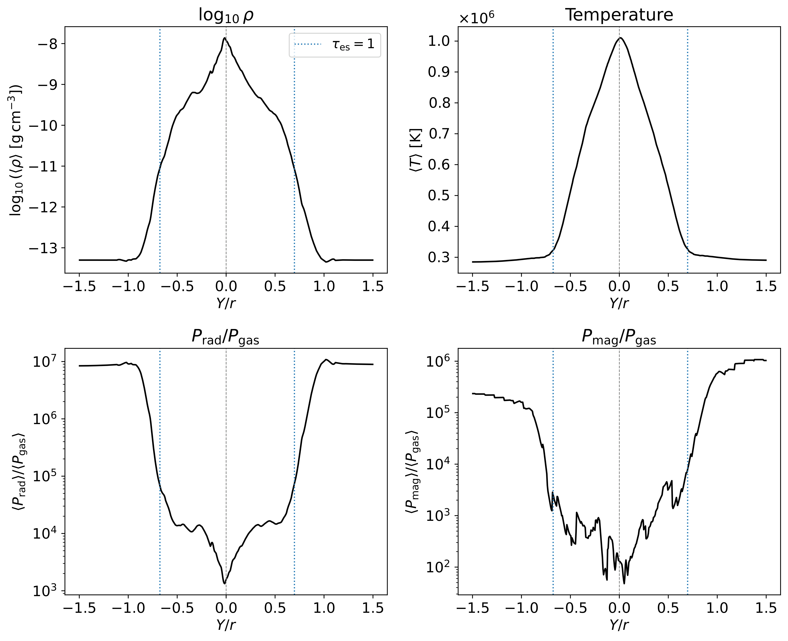<br />
图注：Vertical profiles of the disk density $\rho$, gas temperature $T$, radiation-to-gas pressure ratio $P_\mathrm{rad}/P_\mathrm{gas}$, and magnetic-to-gas pressure ratio $P_\mathrm{mag}/P_\mathrm{gas}$, after scaling to a $20\%\,\dot{M}_\mathrm{Edd}$ accretion rate disk around a $10^6\,M_\odot$ black hole. Angle brackets denote azimuthal averages. The vertical dotted blue lines mark the locations where the electron-scattering optical depth integrated from the disk surface reaches $\tau_\mathrm{es} = 1$.<br />
对应解读：对应“建议重点查看的图表”第1项，以及“关键图表逐图导读”图1：盘垂向结构、ρ(z)、温度、辐射压/气压比和光学深度位置。<br />
入选理由：这张图直接展示真实AGN盘的垂向密度、温度、辐射压和磁压结构，并用虚线标出从盘表面积分达到τ_es=1的位置，是确认盘大气是否足够厚、是否能把breakout面推到高z/r区域的基础图。它为后续所有长持续时间和连续breakout解释提供初始条件依据。<br />
来源与置信度：\(arxiv_source\)；high；\(arxiv_source\) / QPE.tex:figure[2]</p>
<p><strong>Fig06</strong><br />
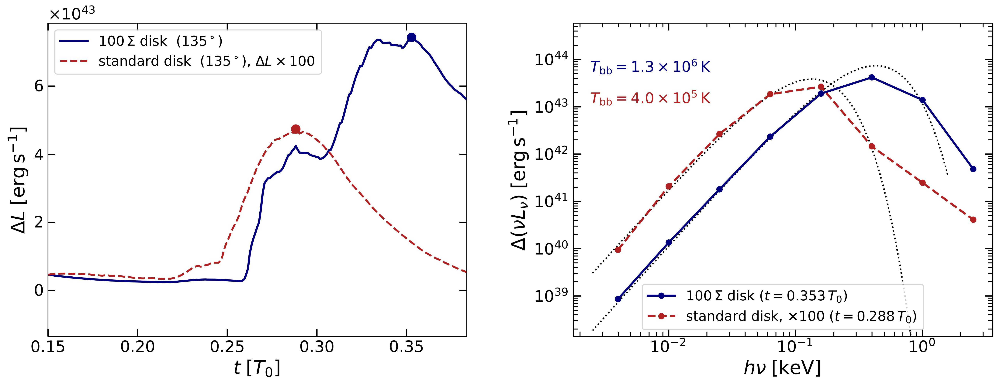<br />
图注：Effect of the disk surface density on the flare, for the $\theta = 135^\circ$ collision. (\textit{Left}) Excess luminosity $\Delta L$, measured at $y/r = -1.2$ below the midplane after subtracting the reference run without a star, for a disk with $100\times$ the fiducial surface density ($100\,\Sigma$, blue solid) and for the standard disk with its $\Delta L$ multiplied by $100$ (red dashed). The time axis begins at $t = 0.15\,T_0$ to exclude the initial relaxation transient. Filled circles mark the light-curve peaks. (\textit{Right}) Excess spectra $\Delta(\nu L_\nu)$ at those two peaks, with best-fitting single-temperature blackbodies (dotted) at $T_\mathrm{bb} = 1.3\times10^6\,\mathrm{K}$ ($109\,\mathrm{eV}$) and $T_\mathrm{bb} = 4.0\times10^5\,\mathrm{K}$ ($34\,\mathrm{eV}$), respectively.<br />
对应解读：对应“建议重点查看的图表”第6、7项，以及模型拟合段落中关于盘面密度、温度、能带效率和稳健性的讨论。<br />
入选理由：这张图通过改变盘面密度比较光变峰值、持续形态和峰值谱温，检验耀发对Σ的敏感性，并给出黑体温度约109 eV与34 eV的谱诊断。它对判断模型是否能进入软X射线能带、以及Σ变化是否只线性放大光度还是会改变温度和光变形状很重要。<br />
来源与置信度：\(arxiv_source\)；high；\(arxiv_source\) / QPE.tex:figure[6]</p>
<p><strong>Fig01</strong><br />
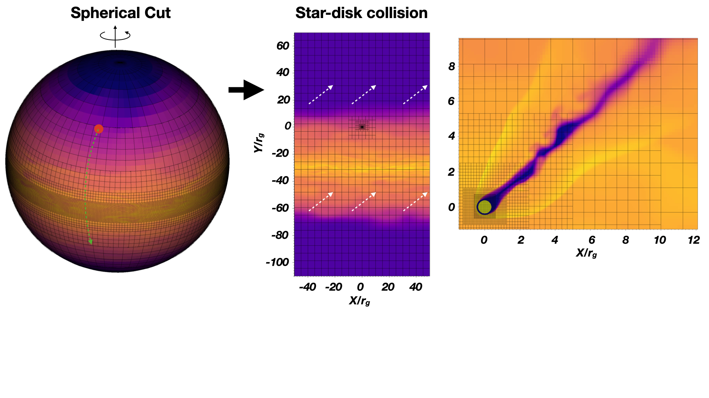<br />
图注：Schematic illustration of the procedures adopted in this work. (\textit{Left}) A spherical shell at $50\,r_g$ is extracted from the sub-Eddington accretion-disk simulation of \(\citet{Jiang2019}\) (AGN0.2 run). The red dot and green curve mark trajectory of a star crossing the disk. (\textit{Middle}) The sphere is unfolded onto a Cartesian $x$--$y$ plane. All hydrodynamic quantities are spatially smoothed to suppress grid-scale fluctuations, yielding the initial disk profile used in our simulations. The smoothed disk structure is used as input for two-dimensional radiation-hydrodynamic (RH) simulations of a star--disk collision. The disk is initialized moving toward the star, which is treated as a rigid solid sphere (black point). Mesh-refinements with five additional levels have been adopted towards the star. (\textit{Right}) The gas density structure as the star approaches the disk midplane is shown alongside the simulation grid. Each displayed grid cell represents $8\times8$ computational cells.<br />
对应解读：对应“关键图表逐图导读”图1中关于模型示意和模拟初始盘结构的部分，也辅助说明论文采用真实RMHD盘切片而非理想薄盘。<br />
入选理由：这张图主要是工作流程和数值设置示意，展示从全局亚爱丁顿盘模拟抽取球壳、展开成局部二维RH初始条件以及恒星穿盘网格加密方式。它不如Fig02–Fig05直接给出诊断量或观测标度，但有助于读者理解模拟输入来自真实AGN盘结构而非手工设定薄盘。<br />
来源与置信度：\(arxiv_source\)；high；\(arxiv_source\) / QPE.tex:figure[1]</p>
<h4 id="_56">强相关工作</h4>
<p>同类观测方面，应把本文放在 GSN 069、RX J1301.9+2747、eRO-QPE1、eRO-QPE2 等 QPE 发现和样本论文之后阅读。这些论文建立了 QPE 的基本现象学：低质量星系核、软 \(X\) 射线重复爆发、小时到天量级周期、较大的振幅和非随机时序。检索关键词建议包括“quasi-periodic eruptions GSN 069”、“eRO-QPE1 eRO-QPE2”、“QPE X-ray nuclear transients”和“QPE duty cycle luminosity duration”。</p>
<p>理论方面，本文与盘不稳定、潮汐剥离和恒星撞盘三类模型直接相关。它支持恒星—盘碰撞框架，但把争论焦点从“是否有足够能量”转到“真实 AGN 盘垂向结构能否给出正确辐射时间尺度”。可检索“star disk collision QPE”、“EMRI disk crossing QPE”、“AGN disk atmosphere radiation MHD”和“shock breakout optically thick disk”。相反观点或张力主要来自那些认为 QPE 是吸积盘内禀极限环、白矮星反复剥离或双星/次级黑洞调制的工作；比较这些模型时，应看它们是否也能同时解释 \(t_{\rm flare}/P\)、软热谱和亮度—时长关系。</p>
<p><strong>同一事件 / 同类源线索</strong>：</p>
<ul>
<li><a href="https://arxiv.org/abs/2609.03011">https://arxiv.org/abs/2609.03011</a></li>
</ul>
<p><strong>相似工作</strong>：</p>
<ul>
<li><a href="https://arxiv.org/abs/1909.04693">https://arxiv.org/abs/1909.04693</a></li>
<li><a href="https://arxiv.org/abs/2104.13388">https://arxiv.org/abs/2104.13388</a></li>
</ul>
<p><strong>基础理论 / 方法工作</strong>：</p>
<ul>
<li><a href="https://ui.adsabs.harvard.edu/abs/1973A%26A....24..337S/abstract">https://ui.adsabs.harvard.edu/abs/1973A%26A....24..337S/abstract</a></li>
<li><a href="https://ui.adsabs.harvard.edu/abs/1977MNRAS.179..433H/abstract">https://ui.adsabs.harvard.edu/abs/1977MNRAS.179..433H/abstract</a></li>
</ul>
<p><strong>相反观点 / 张力线索</strong>：</p>
<p>（未提供）</p>
</details>
<h3 id="6-radiative-efficiency-enhancement-by-electromagnetic-energy-dissipation-in-strongly-magnetized-supercritical-accretion-flows-around-kerr-black-holes">6. Radiative Efficiency Enhancement by Electromagnetic Energy Dissipation in Strongly Magnetized Supercritical Accretion Flows around Kerr Black Holes</h3>
<ul>
<li>来源：arXiv / astro-ph.HE</li>
<li>链接：https://arxiv.org/abs/2609.03250v1</li>
<li>作者：Hiroyuki R. Takahashi, Ken Ohsuga, Ryohei Kobayashi, Akihiro Inoue, Yuta Asahina, Akira Nukada, Taisuke Boku</li>
<li>评分：novelty 8/10，importance 8/10，relevance 7/10，final 8.65/10</li>
<li>推荐理由：GR radiation-MHD simulations of supercritical MAD/SANE accretion around Kerr black holes show large radiative-efficiency enhancement from electromagnetic dissipation. Broadly important for interpreting luminous accreting black holes and X-ray spectra.</li>
</ul>
<p><strong>中文题目</strong>：强磁化超临界吸积流中电磁能耗散如何提高辐射效率：Kerr 黑洞周围的广义相对论辐射磁流体模拟</p>
<p><strong>做了什么</strong>：这篇论文用广义相对论辐射磁流体模拟比较了不同黑洞自旋和不同磁通量状态下的超临界吸积流，重点看磁滞盘（MAD）与标准弱磁通量盘（SANE）在辐射输运上的差别。核心结果是：高自旋、强磁通量的 MAD 情形中，Blandford--Znajek 机制抽取出的电磁能有一部分在黑洞附近的盘表面耗散，直接转化为辐射，使时间平均辐射效率达到 \(\eta_{\rm rad}=0.60\)，远高于非旋转黑洞的 \(0.088\) 和高自旋 SANE 情形的 \(0.21\)。同时，有效光子俘获半径被压缩到 \(r_{\rm trap}=2.5r_{\rm g}\)，接近 ISCO，而不是传统超临界吸积图像中很大的俘获半径。</p>
<p><strong>为什么重要</strong>：超临界吸积通常被认为会因光子俘获和强平流而辐射效率低，光度随吸积率增长缓慢；但这篇文章指出，如果黑洞积累了足够强的磁通量并进入 MAD 状态，高自旋黑洞的自旋能可以通过电磁通道被抽取并在盘面附近耗散，从而显著提高辐射输出。这意味着在解释超亮 X 射线源、快速增长的早期宇宙黑洞、潮汐瓦解事件或高吸积率活动星系核时，不能只用黑洞质量、自旋和质量吸积率，还必须考虑黑洞附近的磁通量。</p>
<p><strong>理论 / 观测 / 仪器方法价值</strong>：它的理论价值在于把 MAD、Blandford--Znajek 抽能和辐射输运放在同一个超临界吸积框架中定量比较，展示了电磁能耗散可以改变传统 slim disk 的效率标度。对观测解释的价值在于，给出了一个把高光度、高效率、较小光子俘获区域联系起来的物理图像，可用于重新理解超 Eddington 源的光度、谱硬化、各向异性辐射和喷流-盘耦合。方法上，它也强调 GRRMHD 模拟中必须同时追踪辐射能流、电磁能流和耗散位置，而不能只看总吸积率或喷流功率。</p>
<p><strong>为什么应该关注</strong>：如果你研究黑洞增长、超 Eddington 吸积、喷流功率或高红移类星体形成，这篇文章直接影响一个常用假设：超临界吸积是否一定辐射效率低。它提醒我们，观测到的光度不只是 \(\dot{M}\) 的函数，也可能是磁通量历史的函数；两个质量、自旋和吸积率相似的系统，若一个是 MAD、一个是 SANE，辐射表现可能完全不同。对做谱拟合的人来说，这意味着把超临界源简单套入无磁或弱磁 slim disk 模型，可能会系统性低估效率或误判吸积率。</p>
<details class="paper-detail">
<summary>展开详细解读：文章讲解、背景、理论、重点章节、图表与相关工作</summary>
<h4 id="_57">文章详细讲解</h4>
<p>科学问题：传统超临界吸积理论的中心图像是，当质量吸积率 \(\dot{M}\) 明显超过 Eddington 吸积率时，盘内产生的辐射来不及扩散出去，会被向内平流带入黑洞，导致辐射效率下降，光度只随 \(\dot{M}\) 对数式增长。但近十多年 GRMHD 和 GRRMHD 研究显示，强磁通量可在黑洞附近形成 MAD 状态，高自旋黑洞又能通过 Blandford--Znajek 机制抽取旋转能。本文要问的是：在超临界吸积中，强磁通量和自旋抽能是否只是增强喷流，还是也会通过局部耗散显著改变盘的辐射效率与光子俘获？</p>
<p>作者怎么做：作者进行了 Kerr 黑洞周围的广义相对论辐射磁流体模拟，比较不同黑洞自旋与不同磁通量条件下的超临界吸积流。模拟分为强磁通量的 MAD 与较弱磁通量的 SANE 状态，并追踪辐射能、气体能、动能和电磁能在时空中的输运。关键不只是算总光度，而是分解能量通量，定位 Blandford--Znajek 电磁能在何处产生、传播和耗散，并考察辐射能流的内外方向转换位置，即有效光子俘获半径 \(r_{\rm trap}\)。</p>
<p>关键结果：在高自旋 MAD 模型中，黑洞附近的电磁能抽取非常强，而且其中一部分不是直接以无耗散 Poynting 通量形式逃逸，而是在近黑洞盘表面耗散，转化为辐射能。这个额外辐射源使时间平均辐射效率达到 \(\eta_{\rm rad}=0.60\)，显著高于非旋转黑洞 MAD 模型的 \(0.088\)，也高于高自旋但弱磁通量 SANE 模型的 \(0.21\)。同时，向外辐射光度与向内辐射光度相等的半径只有 \(r_{\rm trap}=2.5r_{\rm g}\)，接近 ISCO；相比之下，非旋转情形约为 \(12r_{\rm g}\)，SANE 情形约为 \(8.5r_{\rm g}\)。这说明强磁化和自旋抽能可以削弱传统意义上的大范围光子俘获。</p>
<p>局限和下一步：这类模拟仍受限于计算时长、空间分辨率、辐射闭合关系、电子-离子温度处理、微观耗散机制和初始磁场构型。尤其是“电磁能在哪里耗散”在数值上可能受电流片解析度、磁重联模型和数值电阻影响。下一步需要更长时间平均、更高分辨率、不同 \(\dot{M}\)、不同初始磁场拓扑、频率依赖辐射输运以及合成谱和偏振预言，才能把 \(\eta_{\rm rad}\) 的增强与真实观测量，如 X 射线谱形、紫外光度、风的动量流率和喷流功率，更严格地连接起来。</p>
<h4 id="_58">关键结果是怎么做出来的</h4>
<p>本文最重要的证据链从模型对比开始。作者不是只做一个高自旋 MAD 模型，而是把黑洞自旋和磁通量状态分开比较：高自旋 MAD、非旋转或低自旋强磁化情形，以及高自旋但磁通量较弱的 SANE 情形。这样的设计可以区分两种效应：一是 Kerr 黑洞自旋本身提高 ISCO 束缚能释放效率；二是 MAD 磁通量允许 Blandford--Znajek 机制抽取自旋能并改变辐射输运。短摘要给出的三个效率值 \(\eta_{\rm rad}=0.60\)、\(0.088\)、\(0.21\) 正是这个对比的核心。</p>
<p>样本量在这里不是天体样本，而是数值实验组与时间平均区间。读者应检查论文是否给出了准稳态半径范围、时间平均起止时刻、吸积率波动以及 MAD 状态的判据。MAD 与 SANE 的区分通常依赖黑洞视界上的无量纲磁通量 \(\phi_{\rm BH}\) 是否达到饱和；如果高自旋模型只在短时间内进入 MAD，效率估计就可能被瞬时爆发偏高影响。因此支撑结论的关键表格应列出平均 \(\dot{M}\)、\(\phi_{\rm BH}\)、视界能流、辐射光度和效率的不确定范围。</p>
<p>显著性在本文中不是观测 \(p\)-value，而是模型间的物理差异是否大于时间变率和数值系统误差。高自旋 MAD 的 \(\eta_{\rm rad}=0.60\) 与 SANE 的 \(0.21\) 相差近三倍，与非旋转情形相差更大；如果误差棒或时间波动远小于这个差距，结论就较稳健。读者要看光度随时间的曲线、能量通量径向剖面以及不同能量分量的积分预算，确认增强的辐射不是由某个短暂磁通量喷发事件单独贡献。</p>
<p>模型比较的关键诊断是电磁能流与辐射能流的径向变化。若 Blandford--Znajek 抽取的 Poynting 通量在某些半径或盘表面区域下降，而辐射能通量同步上升，并且局部耗散率集中在近黑洞盘表面，就支持“电磁能耗散产生额外辐射”的解释。相反，如果辐射效率提高只来自更小 ISCO 或边界条件差异，那么电磁能流不应显示这种空间关联。</p>
<p>主要图表应包括：黑洞附近二维结构图、径向能量通量分解图、辐射光度内外流对比图、时间平均效率表和 MAD/SANE 磁通量演化图。稳健性检验应关注分辨率、辐射闭合、极区数值处理、能量守恒误差和光度测量半径。如果论文在不同测量半径上得到近似一致的 \(L_{\rm rad}\)，且外边界未显著反射辐射或物质流，那么 \(\eta_{\rm rad}\) 的结论更可信。</p>
<details class="paper-subdetail">
<summary>展开背景、理论、公式、模型、章节和图表导读</summary>
<h4 id="_59">背景知识</h4>
<p>研究对象是超临界黑洞吸积流，即质量供应率超过按 Eddington 光度定义的特征吸积率的盘-风-喷流系统。经典薄盘理论适用于几何薄、辐射冷却有效、局部能量近似全部辐射出去的情形；而超临界盘往往几何厚、散射光学厚、辐射扩散慢，内部能量容易随气体向内平流。这就是 slim disk 图像的基础。</p>
<p>历史问题在于：超临界吸积到底能不能让黑洞快速增长，同时又不产生过高可见光度？如果辐射效率很低，黑洞可以在早期宇宙更快增长；如果效率因自旋或磁场显著提高，增长时间和反馈强度都会改变。传统参数通常是黑洞质量 \(M\)、自旋 \(a_\ast\) 和吸积率 \(\dot{M}\)，但近年的 MAD 研究表明，黑洞附近积累的磁通量也是一个独立控制量。</p>
<p>观测背景包括超亮 X 射线源、窄线 Seyfert 1 星系、潮汐瓦解事件、微类星体高吸积态以及高红移类星体。许多系统显示出高光度、风、喷流或强各向异性辐射。若仅用弱磁通量超临界盘解释，常常需要在 \(\dot{M}\)、倾角、遮挡和几何准直之间做复杂权衡。MAD 超临界吸积提供了另一条路径：光度增强不一定只来自更高 \(\dot{M}\)，也可能来自黑洞自旋能转化为辐射。</p>
<p>为什么现在值得重新看，原因是 GRRMHD 模拟已经能同时处理 Kerr 时空、磁湍流、辐射压力主导流体、散射光学厚输运和喷流-风结构。早期解析模型很难描述盘表面磁重联、近视界 Poynting 通量耗散和多维辐射泄漏。计算能力提升后，可以直接检查能量从黑洞视界到盘表面再到辐射逃逸的路径。</p>
<p>该领域常见误区有三个。第一，把 Blandford--Znajek 功率默认等同于远处喷流功率，而忽略中途耗散和辐射化。第二，把超临界吸积默认等同于低辐射效率，但这只在光子俘获占主导且没有额外能量注入时成立。第三，把 MAD 看成只影响动力学角动量输运的状态，而忽略它会改变辐射产生区域、有效温度分布和光度-吸积率关系。</p>
<h4 id="_60">基础理论 / 方法脉络</h4>
<p>基础物理图像从 Eddington 限制开始：当辐射力与引力在电子散射 opacity 下平衡，就得到特征光度 \(L_{\rm Edd}\)。传统上用 \(\dot{M}_{\rm Edd}\) 把质量供应率无量纲化，并用辐射效率 \(\eta\) 连接 \(L\) 与 \(\dot{M}c^2\)。在薄盘中，\(\eta\) 主要由 ISCO 处的束缚能决定；在超临界盘中，辐射扩散时间可能长于吸积时间，导致光子俘获。</p>
<p>光子俘获的关键比较是辐射扩散时间 \(t_{\rm diff}\) 与径向吸积时间 \(t_{\rm acc}\)。当 \(t_{\rm diff}>t_{\rm acc}\) 时，辐射倾向于随气体内落，局部释放的能量不一定能贡献远处光度。本文使用的有效俘获半径 \(r_{\rm trap}\) 更直接：它由向外辐射光度与向内辐射光度相等的位置定义，能从模拟辐射能流中读出。</p>
<p>磁场引入了新的能量通道。在 MAD 状态中，黑洞附近积累的垂直磁通量足够大，磁压力能间歇性阻碍吸积。若黑洞自旋很高，框架拖曳会扭曲磁力线，通过 Blandford--Znajek 机制把旋转能转化为 Poynting 通量。这个电磁能可以进入喷流，也可能在盘表面、磁层边界或电流片中耗散。</p>
<p>本文的模型假设是多维 GRRMHD 能够在宏观上捕捉这种能量预算：质量、动量、磁场和辐射能量动量张量共同演化。关键量包括黑洞自旋 \(a_\ast\)、引力半径 \(r_{\rm g}=GM/c^2\)、无量纲磁通量 \(\phi_{\rm BH}\)、辐射效率 \(\eta_{\rm rad}\)、视界电磁能流和 \(r_{\rm trap}\)。读者应注意，耗散的微观物理未必被直接解析，很多能量转化依赖数值 MHD 中的有效电阻和湍流级联。</p>
<p>常见退化包括 \(\dot{M}\) 与几何准直的退化、\(a_\ast\) 与 \(\phi_{\rm BH}\) 的退化、内禀效率与观测倾角的退化，以及风吸收对谱形的系统影响。对于观测者而言，高光度不唯一意味着高 \(\dot{M}\)；对于理论者而言，高喷流功率也不意味着电磁能完全逃逸，因为一部分可能转化成盘表面辐射。</p>
<h4 id="_61">公式与推导</h4>
<p>第一步是定义尺度。黑洞引力半径和 Eddington 光度为</p>
<div class="math-display">\[r_{\rm g}=\frac{GM}{c^2},\qquad L_{\rm Edd}=\frac{4\pi GMc}{\kappa_{\rm es}},\]</div>
<p>其中 \(G\) 是引力常数，\(M\) 是黑洞质量，\(c\) 是光速，\(\kappa_{\rm es}\) 是电子散射不透明度。这个尺度把不同质量黑洞的超临界吸积问题归一化。</p>
<p>第二步是把吸积率和效率联系起来。若采用参考效率 \(\eta_0\) 定义 Eddington 吸积率，</p>
<div class="math-display">\[\dot{M}_{\rm Edd}=\frac{L_{\rm Edd}}{\eta_0 c^2},\qquad \dot{m}=\frac{\dot{M}}{\dot{M}_{\rm Edd}},\]</div>
<p>其中 \(\dot{m}\) 是无量纲吸积率。本文的重点不是 \(\eta_0\)，而是模拟得到的真实辐射效率</p>
<div class="math-display">\[\eta_{\rm rad}=\frac{L_{\rm rad}}{\langle \dot{M}\rangle c^2},\]</div>
<p>其中 \(L_{\rm rad}\) 是在足够大半径测得的外向辐射光度，\(\langle \dot{M}\rangle\) 是时间平均质量吸积率。</p>
<p>第三步是光子俘获判据。粗略解析图像比较扩散和吸积时间：</p>
<div class="math-display">\[t_{\rm diff}\sim \frac{\tau H}{c},\qquad t_{\rm acc}\sim \frac{r}{|v_r|},\]</div>
<p>其中 \(\tau\) 是垂直光学深度，\(H\) 是盘厚，\(v_r\) 是径向速度。当 \(t_{\rm diff}\gtrsim t_{\rm acc}\) 时，辐射更容易被平流俘获。本文更接近模拟诊断的定义是</p>
<div class="math-display">\[L_{\rm rad}^{\rm out}(r_{\rm trap})=L_{\rm rad}^{\rm in}(r_{\rm trap}),\]</div>
<p>其中 \(L_{\rm rad}^{\rm out}\) 与 \(L_{\rm rad}^{\rm in}\) 分别是半径 \(r\) 处向外和向内的辐射能流积分。</p>
<p>第四步是磁通量和 MAD 判据。常用无量纲黑洞磁通量可写为</p>
<div class="math-display">\[\phi_{\rm BH}=\frac{\Phi_{\rm BH}}{\sqrt{\langle \dot{M}\rangle r_{\rm g}^2 c}},\qquad \Phi_{\rm BH}=\frac{1}{2}\int_{\rm H}|B^r|\,dA,\]</div>
<p>其中 \(B^r\) 是视界附近径向磁场，\(dA\) 是视界面积元。\(\phi_{\rm BH}\) 大并达到饱和通常表示 MAD 状态，弱磁通量则对应 SANE 状态。</p>
<p>第五步是 Blandford--Znajek 抽能的标度。低阶近似下，电磁功率满足</p>
<div class="math-display">\[P_{\rm BZ}\sim \frac{\kappa}{4\pi c}\Phi_{\rm BH}^2\Omega_{\rm H}^2,\]</div>
<p>其中 \(\kappa\) 是与磁场几何有关的无量纲系数，\(\Omega_{\rm H}\) 是黑洞视界角速度。Kerr 黑洞的视界角速度为</p>
<div class="math-display">\[\Omega_{\rm H}=\frac{a_\ast c}{2r_{\rm H}},\qquad r_{\rm H}=r_{\rm g}\left(1+\sqrt{1-a_\ast^2}\right),\]</div>
<p>其中 \(a_\ast\) 是无量纲自旋，\(r_{\rm H}\) 是视界半径。该式说明高 \(a_\ast\) 和高 \(\Phi_{\rm BH}\) 会共同增强电磁抽能。</p>
<p>第六步是能量预算。若电磁能的一部分在盘表面耗散并转为辐射，可写成示意方程</p>
<div class="math-display">\[\frac{dL_{\rm rad}}{dr}\simeq Q_{\rm diss}^{\rm gas}(r)+f_{\rm EM}(r)\left[-\frac{dP_{\rm EM}}{dr}\right]-Q_{\rm adv}(r),\]</div>
<p>其中 \(Q_{\rm diss}^{\rm gas}\) 是气体湍流或剪切耗散贡献，\(P_{\rm EM}\) 是电磁能流，\(f_{\rm EM}\) 是电磁能转成辐射的有效比例，\(Q_{\rm adv}\) 是随气体向内平流的辐射能损失。本文结果相当于指出高自旋 MAD 中第二项很大，足以抵消传统超临界盘中的部分平流损失。</p>
<p>第七步是可检验的效率增强。把电磁耗散并入总辐射光度，可写为</p>
<div class="math-display">\[\eta_{\rm rad}\simeq \eta_{\rm acc}+\frac{\epsilon_{\rm diss}P_{\rm BZ}}{\langle \dot{M}\rangle c^2}-\eta_{\rm adv},\]</div>
<p>其中 \(\eta_{\rm acc}\) 是吸积释放项，\(\epsilon_{\rm diss}\) 是 BZ 功率辐射化比例，\(\eta_{\rm adv}\) 表示平流损失。高自旋 MAD 的 \(\eta_{\rm rad}=0.60\) 意味着 \(\epsilon_{\rm diss}P_{\rm BZ}\) 在能量预算中不可忽略。</p>
<p>第八步是数值诊断的不确定性。时间平均量可用</p>
<div class="math-display">\[\langle X\rangle=\frac{1}{t_2-t_1}\int_{t_1}^{t_2}X(t)\,dt,\]</div>
<p>其中 \(X\) 可代表 \(L_{\rm rad}\)、\(\dot{M}\)、\(\phi_{\rm BH}\) 或能量通量。读者检查结果时应关注 \(t_1\) 到 \(t_2\) 是否处在准稳态阶段，以及 \(\eta_{\rm rad}\) 的模型间差异是否显著大于 \(X(t)\) 的长期波动。</p>
<h4 id="_62">模型拟合 / 应用方法</h4>
<p>本文不是传统意义上的观测拟合论文，而是数值模型比较。拟合量对应为模拟输出的时间平均诊断量：\(\dot{M}\)、\(L_{\rm rad}\)、\(\eta_{\rm rad}\)、\(\phi_{\rm BH}\)、\(P_{\rm EM}\)、\(r_{\rm trap}\) 和不同半径处的能量通量。读者应把这些量看成模型参数空间中的“可观测代理量”，用于连接未来的谱、光变和喷流观测。</p>
<p>参数估计的核心是时间平均和空间积分，而不是最小二乘。比如 \(\eta_{\rm rad}\) 需要同时测量外向辐射光度与黑洞质量吸积率；\(r_{\rm trap}\) 需要从辐射能流方向分解中找交点；\(\phi_{\rm BH}\) 则由视界磁通量和 \(\dot{M}\) 归一化得到。每个量都受时间变率影响，因此误差诊断应包括时间块平均、不同测量半径的比较和准稳态区间选择。</p>
<p>退化关系非常重要。高 \(a_\ast\) 能提高薄盘 ISCO 效率，也能提高 \(P_{\rm BZ}\)，所以单靠 \(\eta_{\rm rad}\) 难以区分“深引力势释放”与“自旋能电磁抽取”。强 \(\phi_{\rm BH}\) 又会改变盘厚、湍流、风和喷流结构，因此 \(L_{\rm rad}\) 的增强可能同时伴随各向异性变化。要打破这些退化，需要联合看电磁能流衰减、局部耗散位置和辐射能流增长。</p>
<p>系统误差主要来自 GRRMHD 的数值和物理近似。辐射闭合关系可能影响光学薄漏光区；单温流体近似可能影响电子辐射温度；有限分辨率会影响磁重联和电流片耗散；极区处理可能影响喷流能流；外边界和初始环面大小会影响长期供给。若高自旋 MAD 的效率增强在这些变化下仍保持数量级差异，模型可信度才高。</p>
<p>实际应用上，可以把本文结果用于构建半解析或后处理谱模型：给定 \(M\)、\(a_\ast\)、\(\dot{M}\)、\(\phi_{\rm BH}\) 和倾角，预测 \(L_{\rm bol}\)、谱峰、风吸收以及喷流功率。若未来观测显示某些超临界源同时具有高辐射效率和强喷流或强磁化迹象，MAD 超临界模型会比普通 slim disk 更自然。相反，若源的风动量、谱温度和偏振要求大范围光子俘获，则可能更接近 SANE 或低磁通量状态。</p>
<h4 id="_63">重点章节 / 结果段落怎么读</h4>
<p>数据/模拟设置部分应首先阅读。重点看 Kerr 度规、黑洞自旋取值、初始磁场构型、吸积率标度、辐射输运近似、网格分辨率和边界条件。这里决定了 MAD 与 SANE 对比是否公平，也决定了电磁耗散是否可能受数值设置影响。</p>
<p>MAD/SANE 判据与时间演化部分是第二个重点。读者应检查 \(\phi_{\rm BH}\)、\(\dot{M}\) 和总能量通量随时间的曲线，确认高磁通量模型确实进入 MAD 饱和状态，且用于平均的时间段处于准稳态。若磁通量未饱和或吸积率有强长期漂移，效率比较就需要谨慎。</p>
<p>能量通量分解部分是全文核心。应看作者如何定义辐射、气体、动能和电磁能流，积分面在哪里，符号约定如何。高自旋 MAD 模型中，电磁能在近黑洞区域被抽取，又在盘表面附近耗散并提升辐射能流，这是结论最关键的物理链条。</p>
<p>光子俘获半径与辐射效率结果部分应与传统 slim disk 对照阅读。重点是 \(r_{\rm trap}=2.5r_{\rm g}\) 如何由向内、向外辐射光度交点得到，以及它为何接近 ISCO。这个结果说明高自旋 MAD 不只是“更亮”，而是改变了辐射逃逸的空间结构。</p>
<p>讨论和稳健性检验部分要看作者如何处理数值耗散、分辨率、辐射闭合和观测解释。特别要留意作者是否区分了局部辐射产生、远处逃逸光度和观察者方向上的各向异性光度；这三者在超临界厚盘中不能混为一谈。</p>
<h4 id="_64">建议重点查看的图表</h4>
<ol>
<li>
<p>模拟模型参数表：检查每个模型的黑洞自旋 \(a_\ast\)、磁通量状态、平均 \(\dot{M}\)、\(\phi_{\rm BH}\)、\(\eta_{\rm rad}\) 和 \(r_{\rm trap}\)，确认高自旋 MAD、非旋转 MAD 与 SANE 的对比关系。</p>
</li>
<li>
<p>\(\dot{M}\) 与 \(\phi_{\rm BH}\) 的时间演化图：看 MAD 是否达到磁通量饱和，平均区间是否避开初始瞬变，效率增强是否由长期状态而非短暂尖峰造成。</p>
</li>
<li>
<p>密度、磁场和辐射能量密度的二维截面图：看盘表面、喷流漏斗和近黑洞磁层的位置，尤其关注电磁能耗散是否发生在辐射容易逃逸的区域。</p>
</li>
<li>
<p>径向能量通量分解图：检查辐射能流、气体能流、动能流和电磁能流随 \(r/r_{\rm g}\) 的变化。关键趋势是电磁能流下降与辐射能流上升是否空间相关。</p>
</li>
<li>
<p>向外与向内辐射光度对比图：看交点如何定义 \(r_{\rm trap}\)，以及不同模型中交点从 \(12r_{\rm g}\)、\(8.5r_{\rm g}\) 移到 \(2.5r_{\rm g}\) 是否清晰。</p>
</li>
<li>
<p>辐射效率随时间或随半径的诊断图：检查 \(\eta_{\rm rad}=0.60\) 是否在不同测量半径上稳定，是否有大幅振荡。</p>
</li>
<li>
<p>局部耗散率或电流结构图：若论文给出，应看耗散是否集中在盘表面和近黑洞区域，而不是数值边界或极轴附近。</p>
</li>
<li>
<p>稳健性或分辨率表：检查能量守恒误差、网格分辨率变化和平均区间变化是否会改变主要结论。</p>
</li>
</ol>
<h4 id="_65">关键图表逐图导读</h4>
<p>图 1：通常应是模型结构或二维截面图，坐标轴多为 \(x/r_{\rm g}\) 与 \(z/r_{\rm g}\) 或 \(r/r_{\rm g}\) 与极角。颜色可能表示密度、辐射能量密度或磁压，流线表示磁场或速度。读图重点是高自旋 MAD 中是否形成强磁化漏斗、厚盘和盘表面耗散区。陷阱是不要把颜色最亮处直接等同于远处可见光度，因为光学厚区中的辐射仍可能被平流或散射。</p>
<p>图 2：时间演化图应显示 \(\dot{M}\)、\(\phi_{\rm BH}\)、\(L_{\rm rad}\) 或效率。横轴是模拟时间，纵轴为归一化吸积率、无量纲磁通量或光度。关键是平均区间是否处于准稳态，高自旋 MAD 是否维持高 \(\phi_{\rm BH}\)。读图陷阱是瞬时 \(L_{\rm rad}\) 尖峰不代表长期效率，必须看时间平均和波动幅度。</p>
<p>图 3：能量通量径向分解图是支撑结论的核心。横轴应为 \(r/r_{\rm g}\)，纵轴为归一化能量通量或光度，曲线区分辐射、气体、动能、电磁能和总能量。主要结论应是高自旋 MAD 中电磁能从视界附近向外传输后在近黑洞盘表面被削减，同时辐射能流增加。陷阱是符号约定可能不同，需先确认正值代表向外还是向内。</p>
<p>图 4：向外与向内辐射光度图用于读 \(r_{\rm trap}\)。横轴为半径，纵轴为辐射光度；两条曲线的交点就是有效俘获半径。高自旋 MAD 的交点应在 \(2.5r_{\rm g}\) 附近，而非旋转或 SANE 模型更外。陷阱是该定义不同于简单解析估算的 \(t_{\rm diff}=t_{\rm acc}\)，二者物理相关但数值不必完全一致。</p>
<p>图 5：模型间效率和俘获半径比较图或表应把 \(\eta_{\rm rad}\) 与 \(r_{\rm trap}\) 并列。读者要看高 \(\eta_{\rm rad}\) 是否伴随小 \(r_{\rm trap}\)，这说明辐射增强与俘获减弱相互一致。陷阱是不要只用 \(a_\ast\) 解释效率，因为高自旋 SANE 的 \(\eta_{\rm rad}=0.21\) 明显低于高自旋 MAD。</p>
<p>图 6：若有局部耗散或电磁能转换图，坐标可能是二维空间截面或沿半径积分的耗散率。关键是耗散位置是否靠近盘表面而非盘中平面深处；盘表面的耗散更容易转化为可逃逸辐射。陷阱是数值耗散图往往依赖分辨率，需结合稳健性检验阅读。</p>
</details>
<h4 id="_66">论文原图 / 可嵌入图片</h4>
<p><strong>Fig07</strong><br />
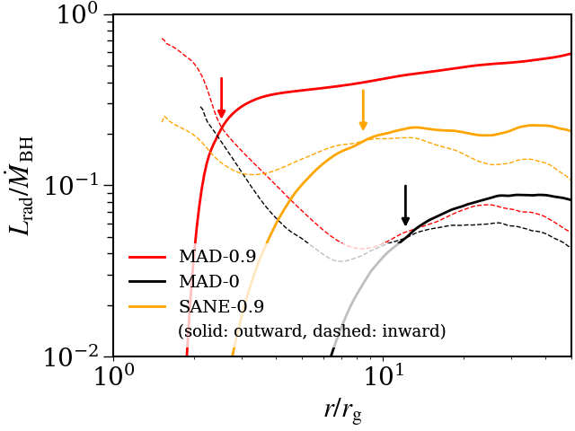<br />
图注：Radial profiles of the outward radiative luminosity $L_\mathrm{rad}^\mathrm{out}$ (solid) and inward radiative luminosity $L_\mathrm{rad}^\mathrm{in}$ (dashed), normalized by $\dot{M}_\mathrm{BH}$. Red, black, and orange curves correspond to the MAD-0.9, MAD-0, and SANE-0.9 models, respectively. Arrows indicate the trapping radius, defined as the radius where $L_\mathrm{rad}^\mathrm{out} = L_\mathrm{rad}^\mathrm{in}$.<br />
对应解读：建议重点查看的图表第5项；关键图表逐图导读中的“图4：向外与向内辐射光度图用于读 \(r_trap\)”；模型诊断中的 \(r_trap\) 定义。<br />
入选理由：这张图直接给出三种模型的外向与内向辐射光度径向剖面，并用交点定义俘获半径，是验证高自旋 MAD 中 \(r_trap\)≈2.5 \(r_g\)、非旋转 MAD 与 SANE 更大的核心证据。它最直接支撑论文关于光子俘获被强磁化自旋抽能削弱的结论。<br />
来源与置信度：\(arxiv_source\)；high；\(arxiv_source\) / hrtakahashi.tex:figure[7]</p>
<p><strong>Fig04</strong><br />
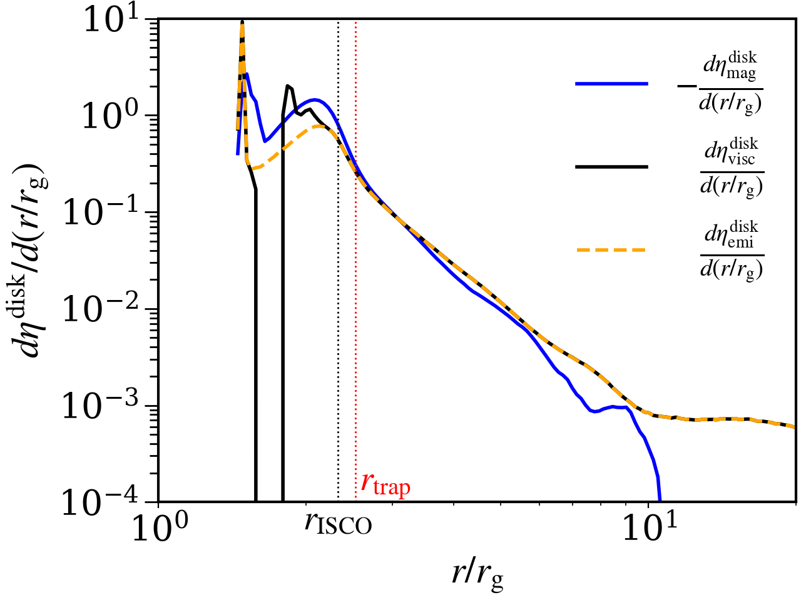<br />
图注：Radial profiles of the disk-integrated magnetic power decrease rate $-dL_\mathrm{mag}^\mathrm{disk}/dr$ (blue curve), heating rate $dQ_\mathrm{vis}^\mathrm{disk}/dr$ (black curve), and emission rate $dQ_\mathrm{emi}^\mathrm{disk}/dr$ (orange dashed curve) for MAD-0.9. All quantities are integrated over the disk region and normalized by $\dot M_\mathrm{BH}/r_\mathrm{g}$. Vertical dotted and dashed lines indicate the ISCO radius and the trapping radius $r_\mathrm{trap}$, respectively.<br />
对应解读：建议重点查看的图表第4项和第7项；关键图表逐图导读中的“图3：能量通量径向分解图”和“图6：局部耗散或电磁能转换图”。<br />
入选理由：该图把 MAD-0.9 中磁能功率下降率、有效加热率和发射率随半径并列，并标出 ISCO 与 \(r_trap\)，能直接检验电磁能耗散与辐射产生是否在近黑洞区域空间相关，是支撑 η_rad 增强物理机制的关键图。<br />
来源与置信度：\(arxiv_source\)；high；\(arxiv_source\) / hrtakahashi.tex:figure[4]</p>
<p><strong>Fig02</strong><br />
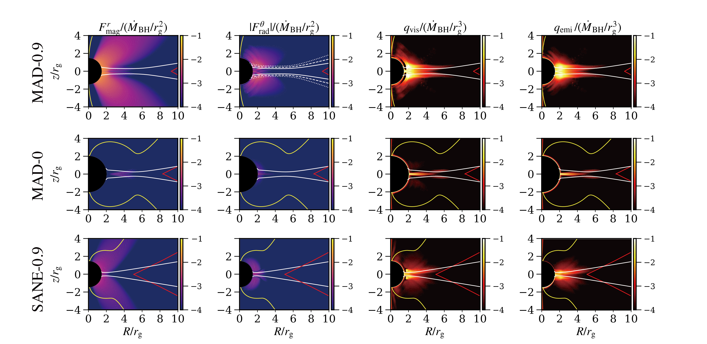<br />
图注：From left to right, the color contours show $F_\mathrm{mag}^{r}$, $\left|F_\mathrm{rad}^{\theta}\right|$, $q_\mathrm{vis}$, and $q_\mathrm{emi}$ in the $R$--$z$ plane. The fluxes are normalized by $\dot M_\mathrm{BH}/r_\mathrm{g}^2$, and the heating and emission rates by $\dot M_\mathrm{BH}/r_\mathrm{g}^3$. The top, middle, and bottom rows correspond to the MAD-0.9, MAD-0, and SANE-0.9 models, respectively. The yellow and red curves indicate the surfaces where $\tau_\mathrm{tot}=1$ and $\tau_\mathrm{eff}=1$, respectively. The white solid curves show the disk surface, $\theta = \pi/2 \pm \theta_H$. In the second column of the top row, the white dashed and dotted lines indicate the surfaces at $|\theta-\pi/2|=1.5\theta_H$ and $|\theta-\pi/2|=2\theta_H$, respectively.<br />
对应解读：建议重点查看的图表第3项和第7项；关键图表逐图导读中的“图1：二维截面图”和“图6：局部耗散或电磁能转换图”。<br />
入选理由：这张二维 R-z 图同时展示磁能通量、极向辐射通量、加热率和发射率，并比较 MAD-0.9、MAD-0、SANE-0.9。它能定位盘表面、光深面和近黑洞耗散区域，直接支持“电磁能在辐射较易逃逸的盘表面耗散”的解释。<br />
来源与置信度：\(arxiv_source\)；high；\(arxiv_source\) / hrtakahashi.tex:figure[2]</p>
<p><strong>Fig01</strong><br />
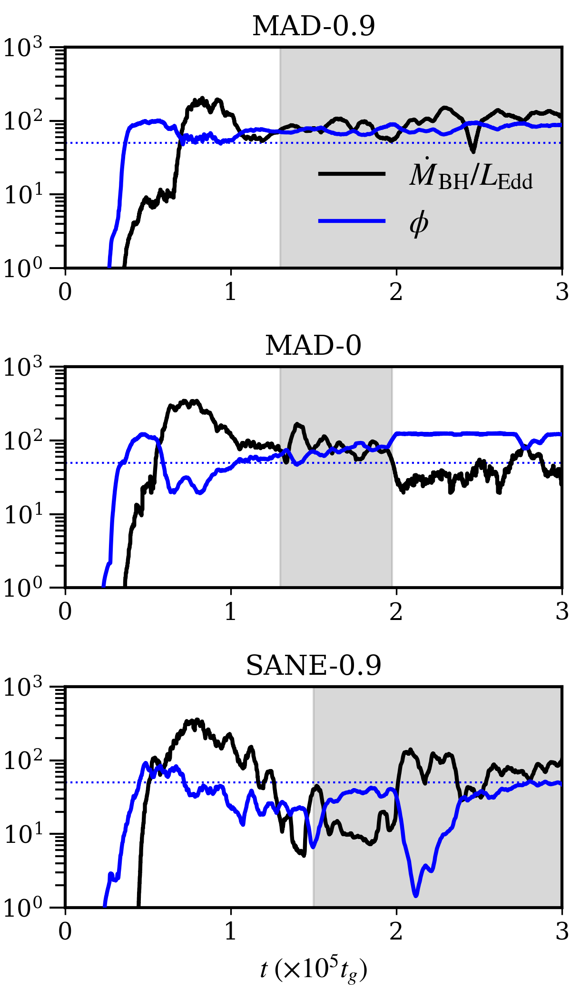<br />
图注：Time evolution of the mass accretion rate $\dot{M}_\mathrm{BH}$ and the MAD parameter $\phi$. The panels show the results for MAD-0.9, MAD-0, and SANE-0.9 from top to bottom, respectively. The horizontal blue dotted line indicates $\phi=50$, which is used as a reference value for the MAD state. The gray shaded regions indicate the time intervals over which time-averaged quantities are evaluated.<br />
对应解读：建议重点查看的图表第2项；关键图表逐图导读中的“图2：时间演化图”；模型诊断中的 \(phi_BH\) 与时间平均区间选择。<br />
入选理由：该图显示质量吸积率和 MAD 参数 phi 的时间演化，并标出用于时间平均的区间，可用于确认 MAD-0.9 是否长期达到磁通量饱和、结论是否来自准稳态而非初始瞬变或短时尖峰。<br />
来源与置信度：\(arxiv_source\)；high；\(arxiv_source\) / hrtakahashi.tex:figure[1]</p>
<p><strong>Fig05</strong><br />
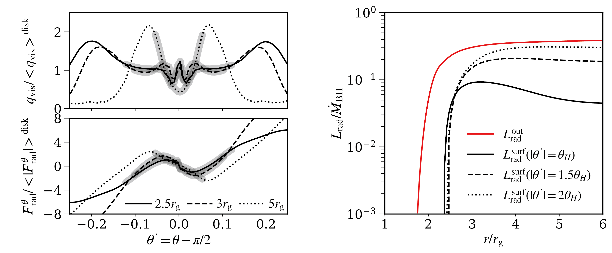<br />
图注：Left: polar-angle dependence of the effective viscous heating rate (top) and the polar radiative flux (bottom) at $r = 2.5\,r_\mathrm{g}$ (solid), $r = 3\,r_\mathrm{g}$ (dashed), and $r = 5\,r_\mathrm{g}$ (dotted). Each quantity is normalized by its disk-averaged value at the corresponding radius. Hatched regions indicate the disk interior, defined by $|\theta^\prime| < \theta_H$. Right: radial profiles of the cumulative luminosity evaluated at the surfaces $|\theta^\prime| = \theta_H$ (solid), $|\theta^\prime| = 1.5\theta_H$ (dashed), and $|\theta^\prime| = 2\theta_H$ (dotted). Red curve shows the total outward radiative luminosity $L_\mathrm{rad}^\mathrm{out}$. All luminosities are normalized by the mass accretion rate $\dot M_\mathrm{BH}$.<br />
对应解读：建议重点查看的图表第4项、第6项和第7项；关键图表逐图导读中的盘表面耗散、辐射逃逸和不同半径辐射效率稳定性讨论。<br />
入选理由：该图给出 MAD-0.9 中加热率和极向辐射通量的角向分布，以及不同盘表面定义下的累积光度径向剖面，能检验耗散是否集中在盘表面并能转化为外逃辐射，也可评估光度诊断对测量面选择的敏感性。<br />
来源与置信度：\(arxiv_source\)；high；\(arxiv_source\) / hrtakahashi.tex:figure[5]</p>
<p><strong>Fig10</strong><br />
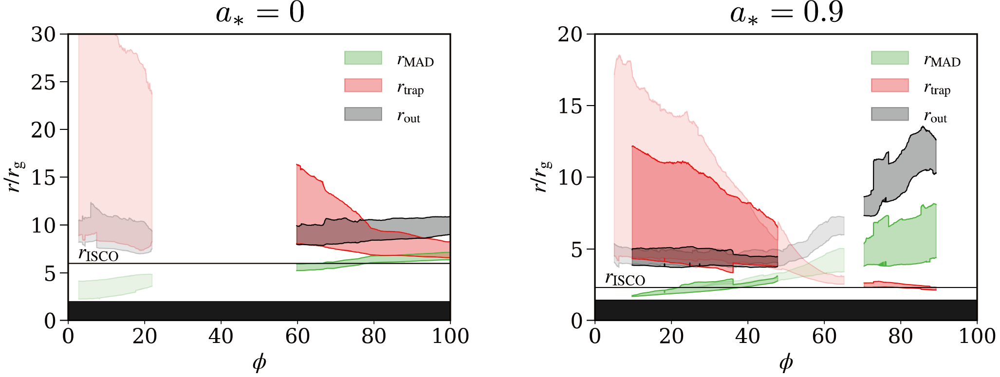<br />
图注：Three characteristic radii, $r_{\rm trap}$ (red), $r_{\rm out}$ (black), and $r_{\rm MAD}$ (green) are plotted as functions of $\phi$. Left and right panels correspond to $a_*=0$ and $a_*=0.9$, respectively. The horizontal black line indicates the ISCO radius. Shaded regions represent the envelopes of the characteristic radii, reflecting the scatter caused by time variability and fluctuations in the simulations at similar values of $\phi$. Results obtained with modified initial conditions (small-0 and small-0.9) are shown in lighter colors to distinguish them from the main models.<br />
对应解读：建议重点查看的图表第8项；模型拟合段落中的系统误差、时间变率和磁通量退化关系；关键图表逐图导读中的效率与俘获半径模型比较。<br />
入选理由：该图把 \(r_trap\)、\(r_out\) 和 \(r_MAD\) 与磁通量 phi 的关系画出，并包含时间波动包络和修改初始条件的结果，适合用于判断俘获半径缩小是否随磁通量系统变化、是否受初始条件和时间变率影响。<br />
来源与置信度：\(arxiv_source\)；high；\(arxiv_source\) / hrtakahashi.tex:figure[10]</p>
<h4 id="_67">强相关工作</h4>
<p>这篇工作处在三条文献线的交叉点。第一条是 slim disk 和超临界吸积理论，从 Abramowicz 等人的光子俘获和平流冷却图像出发，解释为什么高 \(\dot{m}\) 不一定带来线性增长的光度。第二条是 MAD 与 Blandford--Znajek 抽能，强调黑洞磁通量和自旋可以产生高 Poynting 通量。第三条是 GRRMHD 超临界模拟，研究辐射驱动风、喷流、各向异性光度和厚盘结构。检索关键词可用“supercritical accretion GRRMHD photon trapping”、“MAD accretion Blandford Znajek radiation efficiency”、“super-Eddington magnetically arrested disk”。</p>
<p>相似工作包括 Sadowski、Narayan、McKinney、Tchekhovskoy、Ohsuga 等人在超 Eddington GRRMHD、MAD 和喷流效率上的系列研究。潜在张力在于：一些传统 slim disk 或弱磁通量 GRRMHD 模型预期辐射效率较低，而本文高自旋 MAD 给出 \(\eta_{\rm rad}=0.60\)，这会影响黑洞增长时间和反馈估计。读者可检索“slim disk radiative efficiency low efficiency”、“SANE super-Eddington GRRMHD”、“black hole growth radiative efficiency magnetic flux”来找相反或互补观点。</p>
<p><strong>同一事件 / 同类源线索</strong>：</p>
<ul>
<li><a href="https://arxiv.org/abs/2609.03250">https://arxiv.org/abs/2609.03250</a></li>
<li><a href="https://arxiv.org/pdf/2609.03250">https://arxiv.org/pdf/2609.03250</a></li>
</ul>
<p><strong>相似工作</strong>：</p>
<ul>
<li><a href="https://arxiv.org/abs/astro-ph/0308428">https://arxiv.org/abs/astro-ph/0308428</a></li>
<li><a href="https://ui.adsabs.harvard.edu/abs/2011MNRAS.418L..79T/abstract">https://ui.adsabs.harvard.edu/abs/2011MNRAS.418L..79T/abstract</a></li>
<li><a href="https://ui.adsabs.harvard.edu/abs/2014MNRAS.439..503S/abstract">https://ui.adsabs.harvard.edu/abs/2014MNRAS.439..503S/abstract</a></li>
</ul>
<p><strong>基础理论 / 方法工作</strong>：</p>
<ul>
<li><a href="https://ui.adsabs.harvard.edu/abs/1977MNRAS.179..433B/abstract">https://ui.adsabs.harvard.edu/abs/1977MNRAS.179..433B/abstract</a></li>
<li><a href="https://ui.adsabs.harvard.edu/abs/1973blho.conf..343N/abstract">https://ui.adsabs.harvard.edu/abs/1973blho.conf..343N/abstract</a></li>
<li><a href="https://ui.adsabs.harvard.edu/abs/1988ApJ...332..646A/abstract">https://ui.adsabs.harvard.edu/abs/1988ApJ...332..646A/abstract</a></li>
</ul>
<p><strong>相反观点 / 张力线索</strong>：</p>
<ul>
<li><a href="https://ui.adsabs.harvard.edu/abs/1988ApJ...332..646A/abstract">https://ui.adsabs.harvard.edu/abs/1988ApJ...332..646A/abstract</a></li>
</ul>
</details>
<h3 id="7-thermal-and-non-thermal-emission-from-supermassive-black-hole-circumbinary-disks-disks-coronae-streams-and-cavities">7. Thermal and non-thermal emission from supermassive black hole circumbinary disks: Disks, Coronae, Streams, and Cavities</h3>
<ul>
<li>来源：arXiv / astro-ph.HE</li>
<li>链接：https://arxiv.org/abs/2609.03140v1</li>
<li>作者：Chris Nagele, Julian H. Krolik, Brooks E. Kinch, Jeremy D. Schnittman, Scott Noble</li>
<li>评分：novelty 8/10，importance 8/10，relevance 7/10，final 8.65/10</li>
<li>推荐理由：Detailed radiative-transfer spectral predictions for SMBH circumbinary disks, including soft X-rays and Fe K-alpha variability, are relevant to electromagnetic counterparts of massive black-hole binaries and high-energy AGN diagnostics.</li>
</ul>
<p><strong>中文题目</strong>：超大质量黑洞双星环双星盘的热与非热辐射：盘、冕、气流与空腔</p>
<p><strong>做了什么</strong>：这篇文章把一幅相对论磁流体模拟的超大质量黑洞双星吸积流快照，进一步做成了可观测的从光学/紫外到 X 射线的谱预言。作者选取双星间距为 \(20M\)、吸积率约为 \(0.01\dot M_{\rm Edd}\) 的 \(\texttt{HARM3D}\) 模拟快照，对 \(10^6\)、\(10^7\)、\(10^8M_\odot\) 三种总质量标度求解稳态辐射转移、热平衡和电离平衡，并纳入相对论效应、发射与吸收过程。主要结论是：总光度仍以盘的热辐射为主，但双星引力四极矩清空出的低密度空腔和盘面上方区域会产生很强的软 X 射线幂律成分，约占观测光度的 \(\sim40\%\)，谱指数约 \(\Gamma=2.3\)。此外，X 射线连续谱有约 \(10\%\) 的方位调制，\({\rm Fe}\,K\alpha\) 等效宽度在视线被盘中致密团块部分遮挡时可下降约 \(25\%\)，两者周期相同但相位差约 \(\pi/2\)。</p>
<p><strong>为什么重要</strong>：寻找超大质量黑洞双星的电磁对应体，不能只靠“亮度是否周期变化”这种粗指标；真实候选体会被普通活动星系核的随机变化、盘不稳定性和吸收变化严重污染。本文的重要性在于，它从三维相对论流体结构出发，计算了更接近观测的宽能段谱、X 射线连续谱、铁线等效宽度和视角依赖，为把引力波源候选与电磁谱特征相连提供了更具体的判据。</p>
<p><strong>理论 / 观测 / 仪器方法价值</strong>：理论上，本文把环双星盘中的空腔、气流、螺旋激波和团块结构同非热 X 射线辐射联系起来，提示双星系统可能天然制造类似日冕的软 X 射线区。观测上，它给出可检验的相位关系：X 射线连续谱调制与 \({\rm Fe}\,K\alpha\) 等效宽度变化同周期但近似正交相位。方法上，它展示了如何把 \(\texttt{GRMHD}\) 快照后处理为包含热平衡、电离平衡和相对论转移的多波段谱，而不是只输出总光度曲线。</p>
<p><strong>为什么应该关注</strong>：如果你关心 \({\rm PTA}\) 或 \({\rm LISA}\) 时代的超大质量黑洞双星识别，本文给出的不是单一“周期光变”故事，而是一个可与 X 射线谱时变、铁线等效宽度、吸收遮挡和质量标度一起交叉检验的观测框架。它也提醒我们：双星空腔并不只是低密度缺口，反而可能是非热 X 射线和相位诊断最敏感的区域。</p>
<details class="paper-detail">
<summary>展开详细解读：文章讲解、背景、理论、重点章节、图表与相关工作</summary>
<h4 id="_68">文章详细讲解</h4>
<p>科学问题：超大质量黑洞双星在进入纳赫兹到毫赫兹引力波窗口前后，是否有足够独特的电磁谱特征可供识别？过去大量环双星盘模拟关注总吸积率和总光度随轨道相位的变化，但实际观测面对的是多波段谱、吸收、视角、铁线、日冕样高能成分以及活动星系核本身的随机变源性。本文要回答的是：在一个已经形成空腔、气流、螺旋臂和团块的相对论双星吸积流中，热辐射和非热 X 射线如何分布，哪些谱特征会随观察方位发生可诊断的变化。</p>
<p>作者怎么做：他们没有重新跑一整套参数扫描，而是选取一个 \(\texttt{HARM3D}\) 的三维广义相对论磁流体模拟快照。该快照对应双星分离约 \(20M\)，吸积率约 \(0.01\dot M_{\rm Edd}\)。随后用后处理辐射计算，在给定流体密度、速度、温度和几何结构的基础上，求解时间稳态辐射转移、局部热平衡和电离平衡，并考虑相对论红移、光线弯曲、多普勒增亮、发射和吸收过程。为了连接不同实际活动星系核质量，作者把同一无量纲流体结构缩放到 \(10^6\)、\(10^7\)、\(10^8M_\odot\) 三个总质量。</p>
<p>关键结果：盘本体的热辐射仍贡献多数总光度，这与标准吸积盘直觉一致；但双星四极矩产生的低密度空腔及其上方区域会释放大量软 X 射线，使观测光度中约 \(40\%\) 可表现为软 X 射线幂律，光子指数约 \(\Gamma=2.3\)。这不是手工添加一个经验日冕，而是由低密度、高温、强照射区域中的辐射转移和热平衡给出。另一项关键结果是方位调制：X 射线连续谱因盘中螺旋激波气体温度的非轴对称结构而有约 \(10\%\) 变化；\({\rm Fe}\,K\alpha\) 等效宽度则在视线被致密团块部分遮挡内盘时下降约 \(25\%\)。两者周期相同，但相位约差 \(\pi/2\)，这比单独寻找光变周期更有诊断力。</p>
<p>局限和下一步：本文本质上是对单个模拟快照的高保真谱后处理，而不是覆盖质量比、偏心率、自旋、吸积率、磁通量、盘厚度和双星分离的一族模型。稳态辐射转移也意味着快速非平衡电离、真实湍动时间演化和多周期光变还没有完全纳入。下一步应当把这种谱后处理扩展到时间序列快照，检查相位滞后和准周期稳定性，并将模型与真实 \({\rm AGN}\) 的 X 射线谱时变、铁线响应和吸收变化做前向模拟比较。</p>
<h4 id="_69">关键结果是怎么做出来的</h4>
<p>本文的证据链从一个特定的 \(\texttt{GRMHD}\) 快照开始：双星分离为 \(20M\)，吸积率为 \(0.01\dot M_{\rm Edd}\)，流场中已经有典型环双星盘结构，包括中心空腔、穿越空腔的气流、盘内螺旋激波以及非轴对称的团块。作者没有把这些结构简化成一维盘，而是把密度、速度、温度和几何分布作为辐射转移输入。样本意义上，这不是大样本统计论文，而是单个物理场景的高细节谱预言；读者应把它看成“物理原型模型”，而不是总体发生率测量。</p>
<p>最重要的定量结果之一是能量预算。作者分别计算三个黑洞总质量标度下的观测谱，比较热盘辐射、空腔/日冕样区域贡献和谱线特征。支持结论的关键图通常应包括宽能段 \(\nu L_\nu\) 谱、不同空间区域的辐射贡献分解、以及不同观察方位下的谱比值。软 X 射线幂律占观测光度约 \(40\%\)，光子指数 \(\Gamma=2.3\)，这说明空腔并不只是“少气体所以暗”，而是在低密度高温环境中成为高能辐射的重要源区。</p>
<p>第二个证据链是方位调制。作者沿不同观察方位生成合成谱，比较 X 射线连续谱强度和 \({\rm Fe}\,K\alpha\) 等效宽度。连续谱约 \(10\%\) 的变化被追溯到盘内螺旋激波温度结构的非轴对称性；铁线等效宽度约 \(25\%\) 的下降则来自团块对内盘视线的部分遮挡。这里的统计不是传统意义上对观测事件数计算 \(p\)-值，而是物理模型内部的相位相关诊断：同一模型、不同方位的谱量变化是否与空间结构一致。</p>
<p>显著性和置信度在本文中更多体现为模型差异的幅度是否超过典型观测不确定性，而不是从真实数据中拟合出的检测显著性。约 \(10\%\) 的 X 射线调制对高质量、长监测基线的明亮 \({\rm AGN}\) 才比较现实；约 \(25\%\) 的铁线等效宽度变化则要求足够好的 X 射线光谱信噪比和对吸收变化的建模。读者应关注论文中是否给出了不同质量标度、不同视角、不同谱段之间的相对变化，而不应只看总光度。</p>
<p>主要系统误差来自四类：第一，单快照不能代表长期平均或多轨道相干性；第二，电子温度、非热粒子分布和辐射闭合关系会影响软 X 射线斜率；第三，团块遮挡与普通 \({\rm AGN}\) 中云团吸收存在混淆；第四，缩放到不同 \(M_{\rm BH}\) 时，电离参数、光学深度和谱峰位置并不总是完全自相似。稳健性检验应看作者是否比较了区域分解、方位分解、能段分解和质量缩放，而不是只展示一条漂亮的总谱。</p>
<details class="paper-subdetail">
<summary>展开背景、理论、公式、模型、章节和图表导读</summary>
<h4 id="_70">背景知识</h4>
<p>研究对象是带有环双星盘的超大质量黑洞双星。两个黑洞共同绕质心运动，其引力矩会在盘内缘打开低密度空腔，同时仍有气流穿越空腔，把物质输送到各自附近或内区。这样的系统被认为是星系并合后的自然产物，也是脉冲星计时阵列和未来 \({\rm LISA}\) 可能探测到的引力波源族的重要电磁对应体。</p>
<p>历史问题在于，候选超大质量黑洞双星的电磁识别长期依赖周期性光变、双峰发射线、喷流形态或谱能量分布异常。但普通 \({\rm AGN}\) 也会有红噪声光变、盘风吸收、喷流进动和宽线区复杂动力学，因此单一指标很容易误判。环双星盘理论模拟已经显示吸积率和光度可随轨道相位、团块绕转或气流冲击发生准周期变化，但从总光度到实际谱特征之间还隔着辐射转移、电离和相对论投影这几层物理。</p>
<p>观测背景正在变化。\({\rm PTA}\) 已给出纳赫兹引力波背景的强证据，未来若能定位单个强源，电磁识别将成为关键问题；\({\rm LISA}\) 将把较低质量或较高红移的并合前后双黑洞带入多信使天文学。与此同时，\({\rm eROSITA}\)、\({\rm XMM\text{-}Newton}\)、\({\rm Chandra}\)、\({\rm NuSTAR}\) 以及未来 X 射线任务提供了监测和谱时变能力，铁线、软 X 射线过量和吸收变化都可能成为诊断双星几何的工具。</p>
<p>为什么现在值得重看？因为仅靠解析薄盘模型很难描述空腔、气流、螺旋激波和团块；仅靠 \({\rm GRMHD}\) 总光度又不能告诉我们观测者会看到什么谱。本文所在方向的关键进步是把三维流体结构和辐射转移结合，用合成观测量连接理论模拟与真实望远镜数据。</p>
<p>该领域常见误区包括：把空腔理解为完全黑暗的洞，忽略低密度高温气体可能强烈辐射 X 射线；把任何周期 \({\rm AGN}\) 光变都当成双星证据，忽略红噪声和选择效应；把标准单黑洞日冕模型直接套到双星盘，而不检查日冕样区域是否由双星动力学自然形成；以及把等效宽度变化简单解释为元素丰度变化，而忽略几何遮挡、连续谱变化和电离状态变化的共同作用。</p>
<h4 id="_71">基础理论 / 方法脉络</h4>
<p>基础物理图像是：吸积气体释放引力势能，若光学厚且冷却有效，主要以多温黑体形式从盘面辐射；若气体密度低、温度高、光学深度较小，电子散射和逆康普顿过程可把低能光子提升到 X 射线，形成日冕样幂律谱。双黑洞的非轴对称引力势会改变这一图像：盘内缘不再是简单的单黑洞 \({\rm ISCO}\)，而是由潮汐力和角动量交换形成的空腔边界。</p>
<p>本文所用模型假设是先由 \({\rm GRMHD}\) 给出时刻固定的流体结构，再在该结构上求稳态辐射转移、热平衡和电离平衡。也就是说，流体动力学和辐射计算不是完全同时演化的辐射磁流体模拟，而是“高精度后处理”。这种做法的优点是能包含更细致的原子过程和谱合成；代价是不能直接捕捉辐射反馈对流体结构的实时改变。</p>
<p>关键量包括总质量 \(M\)、双星分离 \(a\simeq20M\)、吸积率 \(\dot M\simeq0.01\dot M_{\rm Edd}\)、光子指数 \(\Gamma\)、谱能量分布 \(\nu L_\nu\)、电离参数 \(\xi\)、光学深度 \(\tau\)、铁线等效宽度 \({\rm EW}_{\rm Fe}\) 和观察方位角。质量缩放会把无量纲轨道时间 \(GM/c^3\) 转换成实际天到周量级，并把热盘谱峰移动到不同波段。</p>
<p>观测方法上，论文关注的不只是总亮度，而是不同能段和谱线的相位行为。X 射线连续谱调制反映高温区域的非轴对称性；\({\rm Fe}\,K\alpha\) 等效宽度同时受铁线发射、连续谱水平、电离状态和遮挡几何控制。因此，同周期但不同相位的两个谱量，比单一光变周期更接近双星几何诊断。</p>
<p>常见退化包括质量 \(M\) 与吸积率 \(\dot M\) 对热谱峰和总光度的共同影响，倾角与吸收柱密度对 X 射线硬度的共同影响，电离参数 \(\xi\) 与铁线强度之间的非线性关系，以及团块遮挡与普通宽线区/尘埃云遮挡之间的混淆。解释这类模型时，必须把谱形、相位、能段依赖和线等效宽度一起看。</p>
<h4 id="_72">公式与推导</h4>
<p>第一步，从引力半径和无量纲时间开始。对总质量为 \(M\) 的双黑洞，常用长度单位为</p>
<div class="math-display">\[r_g=\frac{GM}{c^2},\qquad t_g=\frac{GM}{c^3}.\]</div>
<p>这里 \(G\) 是引力常数，\(c\) 是光速。论文中的分离 \(a\simeq20M\) 等价于 \(a\simeq20r_g\)，所有动力学时间都会随 \(M\) 线性缩放。</p>
<p>第二步，估计轨道周期。若把双星近似为开普勒圆轨道，角频率为</p>
<div class="math-display">\[\Omega_{\rm bin}=\left(\frac{GM}{a^3}\right)^{1/2},\qquad P_{\rm bin}=2\pi\left(\frac{a^3}{GM}\right)^{1/2}.\]</div>
<p>令 \(a=20r_g\)，得 \(P_{\rm bin}=2\pi 20^{3/2}t_g\)。这解释了为什么 \(10^6\) 到 \(10^8M_\odot\) 的系统会从小时/天量级扩展到天/周量级的相位变化。</p>
<p>第三步，吸积功率由质量流率给出。若辐射效率为 \(\eta\)，总辐射功率的基本尺度是</p>
<div class="math-display">\[L_{\rm acc}\simeq \eta \dot M c^2.\]</div>
<p>这里 \(\dot M\) 是吸积率。论文采用 \(\dot M\simeq0.01\dot M_{\rm Edd}\) 的低爱丁顿比情形，因此盘仍明亮但高温低密度区域也可在 X 射线中显著。</p>
<p>第四步，爱丁顿光度和爱丁顿吸积率定义为</p>
<div class="math-display">\[L_{\rm Edd}=\frac{4\pi GMm_p c}{\sigma_T},\qquad \dot M_{\rm Edd}=\frac{L_{\rm Edd}}{\eta c^2}.\]</div>
<p>其中 \(m_p\) 是质子质量，\(\sigma_T\) 是汤姆孙截面。这些式子给出不同质量标度下 luminosity normalization 的转换。</p>
<p>第五步，对光学厚盘，局部有效温度可由能量通量近似表示为</p>
<div class="math-display">\[F(R)=\sigma_{\rm SB}T_{\rm eff}^4(R),\qquad T_{\rm eff}(R)\propto \left(\frac{M\dot M}{R^3}\right)^{1/4}.\]</div>
<p>这里 \(R\) 是盘半径，\(\sigma_{\rm SB}\) 是斯特藩-玻尔兹曼常数。这一关系说明热盘峰随 \(M\) 和 \(\dot M\) 移动，也是区分热盘和 X 射线幂律的基准。</p>
<p>第六步，非热或康普顿化 X 射线常用光子谱近似为</p>
<div class="math-display">\[N(E)=N_0\left(\frac{E}{E_0}\right)^{-\Gamma}.\]</div>
<p>这里 \(N(E)\) 是单位能量光子数谱，\(N_0\) 是归一化，\(E_0\) 是参考能量，\(\Gamma\) 是光子指数。本文得到的软 X 射线幂律约 \(\Gamma=2.3\)，说明谱相对较软。</p>
<p>第七步，电离状态常用电离参数表征：</p>
<div class="math-display">\[\xi=\frac{4\pi F_X}{n}.\]</div>
<p>其中 \(F_X\) 是照射 X 射线通量，\(n\) 是气体数密度。空腔和盘面上方低密度区因 \(n\) 小，容易达到高 \(\xi\)，从而改变吸收、发射和铁线强度。</p>
<p>第八步，辐射转移沿光线满足</p>
<div class="math-display">\[\frac{dI_\nu}{ds}=j_\nu-\alpha_\nu I_\nu.\]</div>
<p>这里 \(I_\nu\) 是比强度，\(s\) 是路径长度，\(j_\nu\) 是发射系数，\(\alpha_\nu\) 是吸收系数。后处理计算的核心就是在给定三维流场和相对论光线的情况下积分这个方程。</p>
<p>第九步，相对论不变量给出观测强度转换：</p>
<div class="math-display">\[\frac{I_\nu}{\nu^3}={\rm invariant},\qquad I_{\nu,\rm obs}=g^3 I_{\nu,\rm em},\]</div>
<p>其中 \(g=\nu_{\rm obs}/\nu_{\rm em}\) 包括引力红移、多普勒效应和光线传播效应。这是把模拟坐标系中的辐射转换为观测谱的关键。</p>
<p>第十步，铁线等效宽度可写成</p>
<div class="math-display">\[{\rm EW}_{\rm Fe}=\int \frac{F_E-F_{E,\rm cont}}{F_{E,\rm cont}}\,dE.\]</div>
<p>这里 \(F_E\) 是总能谱通量，\(F_{E,\rm cont}\) 是连续谱模型。本文中 \({\rm EW}_{\rm Fe}\) 随方位下降约 \(25\%\)，可由连续谱增强、线区遮挡或电离变化共同造成。</p>
<h4 id="_73">模型拟合 / 应用方法</h4>
<p>本文本身不是对某个真实 \({\rm AGN}\) 数据集做参数后验拟合，而是从 \({\rm GRMHD}\) 快照生成前向模型。可拟合或可比较的量包括宽能段谱能量分布 \(\nu L_\nu\)、软 X 射线光子指数 \(\Gamma\)、X 射线能段通量、\({\rm Fe}\,K\alpha\) 等效宽度 \({\rm EW}_{\rm Fe}\)、相位曲线振幅以及连续谱与铁线之间的相位差。实际观测应用时，这些量应进入联合似然，而不宜只拟合一个周期。</p>
<p>若把模型用于数据，可设观测谱点 \(F_i\) 与模型 \(F_i(\theta)\) 比较，参数 \(\theta\) 至少包括 \(M\)、\(\dot M\)、倾角、方位相位、吸收柱密度、电离参数归一化和距离。X 射线谱通常用泊松似然或 \(C\)-statistic，而高信噪比合并谱可近似用 \(\chi^2\)。关键残差诊断包括软 X 射线幂律斜率是否系统偏离、铁线附近是否有未建模宽翼、以及不同相位的残差是否按模型预期移动。</p>
<p>主要退化关系很强。增加吸收柱密度可让软 X 射线变弱，类似降低空腔辐射贡献；改变倾角会同时影响多普勒增亮、遮挡和铁线轮廓；改变 \(M\) 会移动热盘峰位置，可能与 \(\dot M\) 或宿主星系消光混淆；改变电离参数 \(\xi\) 会改变铁线强度，也可能伪装成遮挡造成的等效宽度变化。因此应优先使用多能段、多相位和线-连续谱联合约束。</p>
<p>系统误差还包括模拟物理本身：单快照缺少相位长期稳定性检验，电子加热和非热电子分布可能决定 \(\Gamma\)，辐射反馈没有完全耦合回流体，磁场拓扑和盘厚度可能改变空腔中的高温结构。若模型在真实数据中失败，可能不是“双星假说错误”，也可能是当前后处理假设无法描述真实日冕、风或湍动吸收。</p>
<p>实际应用场景是候选周期 \({\rm AGN}\) 的筛选和排序。一个更可信的候选体不应只有光学周期，而应在 X 射线中表现出与轨道或团块周期相关的连续谱调制，并且 \({\rm Fe}\,K\alpha\) 等效宽度在相近周期但有可解释相位偏移。未来若有 \({\rm PTA}\) 或 \({\rm LISA}\) 源定位，本文这类模型可为后续 X 射线监测设计提供预期能段、曝光时间和相位采样要求。</p>
<h4 id="_74">重点章节 / 结果段落怎么读</h4>
<p>数据/模拟输入部分应先读。这里要弄清楚 \(\texttt{HARM3D}\) 快照的物理参数：双星分离 \(20M\)、吸积率 \(0.01\dot M_{\rm Edd}\)、是否等质量、盘厚度、磁场状态、快照对应的演化阶段以及输出变量。因为后续所有谱结论都继承这些流体结构，读者应确认空腔、气流、螺旋臂和团块是否已经进入准稳态。</p>
<p>辐射转移和微物理方法部分是本文技术核心。重点看作者如何处理热平衡、电离平衡、发射/吸收、散射、相对论光线追踪和观察视角；还要看是否假设稳态、是否区分离子温度与电子温度、是否引入非热电子或经验日冕参数。这决定了软 X 射线幂律是否真由模型自然产生。</p>
<p>谱能量分布结果部分应重点读不同质量标度和不同空间区域的分解。读者要检查 \(10^6\)、\(10^7\)、\(10^8M_\odot\) 的谱峰如何移动，X 射线占比是否稳定，以及盘、空腔、气流和团块分别贡献哪些能段。这里支撑“约 \(40\%\) 观测光度在软 X 射线幂律中”的核心结论。</p>
<p>方位变化和谱线结果部分是观测诊断核心。重点看 X 射线连续谱随方位的约 \(10\%\) 调制，以及 \({\rm Fe}\,K\alpha\) 等效宽度约 \(25\%\) dip 的相位。读者要检查两条曲线的相位差是否真接近 \(\pi/2\)，以及作者如何把它分别归因于螺旋激波温度不对称和团块遮挡。</p>
<p>讨论和局限部分要带着怀疑读。特别关注作者是否说明单快照、稳态辐射转移、质量缩放、电子热物理、吸收几何和普通 \({\rm AGN}\) 混淆的影响。若附录有稳健性检验，应优先看不同视角、不同区域掩膜、不同能段积分和不同谱拟合定义对结论的影响。</p>
<h4 id="_75">建议重点查看的图表</h4>
<ol>
<li>
<p>宽能段谱能量分布图：看横轴能量或频率、纵轴 \(\nu L_\nu\) 或通量，确认热盘峰与软 X 射线幂律的相对贡献，以及三个质量标度下谱峰如何移动。</p>
</li>
<li>
<p>空间区域贡献分解图：看盘、空腔、气流、螺旋激波或团块分别贡献哪些能段，尤其确认约 \(40\%\) 软 X 射线光度是否来自低密度空腔/日冕样区域。</p>
</li>
<li>
<p>温度、密度或电离参数二维图：看空腔、盘内缘和螺旋激波的空间对应关系。关键是高温低密度区域是否与 X 射线发射区重合。</p>
</li>
<li>
<p>方位角光变图：看 X 射线连续谱通量随观察方位或相位的变化幅度，是否约为 \(10\%\)，以及曲线是否近似单周期还是有复杂谐波。</p>
</li>
<li>
<p>\({\rm Fe}\,K\alpha\) 等效宽度相位图：看 \({\rm EW}_{\rm Fe}\) 是否有约 \(25\%\) dip，dip 的相位是否对应团块遮挡内盘的几何位置。</p>
</li>
<li>
<p>连续谱与铁线相位比较图：看两者周期是否相同、相位差是否约为 \(\pi/2\)。这是比单独周期光变更具双星诊断意义的图。</p>
</li>
<li>
<p>谱残差或模型比值图：若论文给出不同方位谱比值，应看软 X 射线和铁线附近的残差是否集中在物理预期能段，而不是全谱归一化漂移。</p>
</li>
<li>
<p>参数或质量缩放表：看 \(M=10^6\)、\(10^7\)、\(10^8M_\odot\) 对周期、光度、谱峰和可观测能段的影响，避免把某一质量下的结论过度推广。</p>
</li>
</ol>
<h4 id="_76">关键图表逐图导读</h4>
<p>图 1：通常应是模拟结构或辐射区域示意。横纵坐标可能为空间坐标，单位为 \(M\) 或 \(r_g\)，颜色表示密度、温度或辐射强度。读图时要找中心空腔、穿越空腔的气流、盘内缘螺旋结构和团块。陷阱是不要把低密度区直接等同为低辐射区；本文恰恰强调低密度高温区可强烈贡献 X 射线。</p>
<p>图 2：宽能段谱能量分布。横轴多半是频率或光子能量，纵轴是 \(\nu L_\nu\)、\(L_E\) 或观测通量。数据/模型线应区分不同黑洞总质量或不同发射区域。主要结论是热盘主导总辐射，但软 X 射线幂律占据很大比例。读图陷阱是热峰位置随 \(M\) 缩放，不能把三个质量的峰位差异误解为三种完全不同物理。</p>
<p>图 3：区域分解或能量预算图。横轴仍可能是能量，纵轴为分量光度；不同颜色代表盘、空腔、气流、上方日冕样气体等。应检查软 X 射线区是否由空腔/低密度区域主导，以及光子指数 \(\Gamma\) 的拟合区间是否明确。陷阱是幂律斜率可能依赖选取能段和吸收处理。</p>
<p>图 4：X 射线连续谱随方位角变化。横轴为观察方位或轨道相位，纵轴为某个 X 射线能段通量或归一化光度。模型线若显示约 \(10\%\) 调制，读者应看曲线峰值是否对应螺旋激波温度不对称，而非单纯几何投影。陷阱是真实观测中的红噪声可能产生相似幅度变化。</p>
<p>图 5：\({\rm Fe}\,K\alpha\) 等效宽度随方位变化。横轴为相位，纵轴为 \({\rm EW}_{\rm Fe}\)。关键特征是约 \(25\%\) 的下降以及下降相位与团块遮挡的对应。读图时要分辨等效宽度下降是线通量减少、连续谱增强，还是二者共同造成。</p>
<p>图 6：连续谱调制与铁线等效宽度的相位对照。横轴为相位，纵轴可能双轴显示 X 射线通量和 \({\rm EW}_{\rm Fe}\)，或显示二者归一化曲线。核心结论是周期相同但相位差约 \(\pi/2\)。陷阱是若只看单独一条曲线，会把它当成普通周期光变；两条谱诊断量的相位关系才是本文最有价值的观测预言。</p>
<p>图 7：若有相对论转移或视角比较图，应看倾角变化对谱形、铁线和连续谱调制的影响。横轴可能是能量，纵轴是不同视角的谱比值。读者应关注高倾角下遮挡增强是否会改变本文的相位解释。</p>
</details>
<h4 id="_77">论文原图 / 可嵌入图片</h4>
<p><strong>Fig07</strong><br />
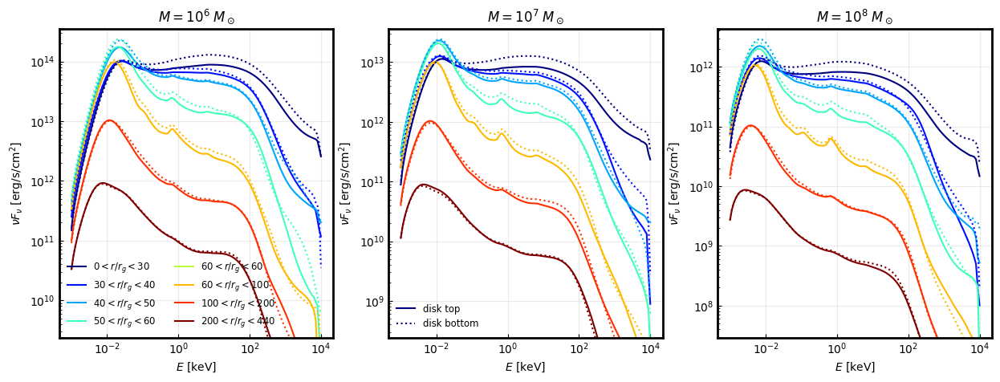<br />
图注：\(\texttt{Pandurata}\) spectral flux incident on the photosphere averaged over different radial bins (colors) for both the top (solid line) and bottom (dotted line) photospheres, for each of the three black hole masses (panels).<br />
对应解读：对应“宽能段谱能量分布图”和“参数或质量缩放表”相关解读，尤其是三个黑洞质量下入射到光球的谱形比较。<br />
入选理由：这张图直接按三个黑洞质量分面展示谱通量随能量的变化，并区分不同半径与上下光球，是候选图中最接近日报所要求的宽能段谱能量分布和质量缩放诊断的图。它能支撑热峰随质量移动、不同半径对辐射场贡献不同等核心解读。<br />
来源与置信度：\(arxiv_source\)；high；\(arxiv_source\) / main.tex:figure[7]</p>
<p><strong>Fig06</strong><br />
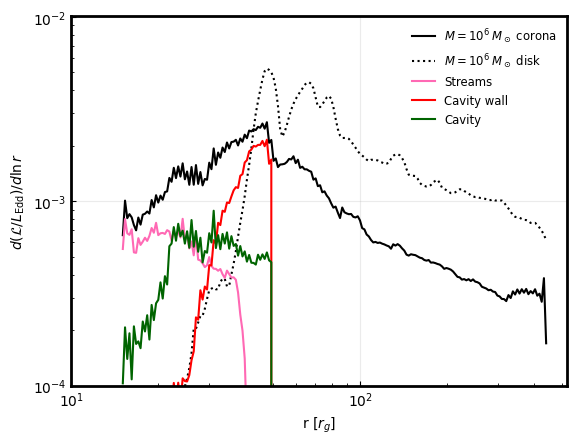<br />
图注：Volume integrated rest frame luminosity in Eddington units. The black dashed line shows the disk-body, while the black solid line shows the corona. The colored lines indicated contributions to the latter quantity from various locations in the corona inside $r=50 \;r_g$.<br />
对应解读：对应“空间区域贡献分解图”和关于盘体、日冕/空腔样区域相对光度贡献的模型解读。<br />
入选理由：图中明确比较 disk-body 与 corona 的体积分光度，并进一步分解半径小于 50 rg 的不同日冕位置贡献，最适合用来说明本文为何认为非盘体低密度区域能产生显著高能辐射，是验证‘热盘主导但日冕/空腔贡献重要’的关键图。<br />
来源与置信度：\(arxiv_source\)；high；\(arxiv_source\) / main.tex:figure[6]</p>
<p><strong>Fig03</strong><br />
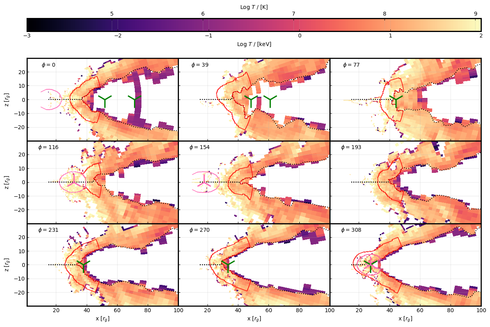<br />
图注：Analogous to Fig. \(\ref{fig:azimuth_cf},\) but showing temperature instead of luminosity. The temperature outside of the scattering photosphere (black dotted line) is determined by \(\texttt{Pandurata},\) and white regions are either a) off-scale, b) have zero \(\texttt{HARM3D}\) luminosity or c) have zero \(\texttt{Pandurata}\) scatterings, due to low density. Inside the photosphere, temperatures are determined by \(\texttt{PTransX}\) and white regions are either the location of the thermal core or slabs that fail to converge (e.g. bottom right of the fifth panel).<br />
对应解读：对应“温度、密度或电离参数二维图”和关键图表导读中关于高温低密度区域、光球、气流、螺旋激波空间对应关系的部分。<br />
入选理由：这张图给出不同方位切片中的温度结构，并标出散射光球位置，能够直接检查高温区域与空腔壁、气流、螺旋激波及光球几何的关系。它比单纯径向平均温度图更能支撑日报中关于 X 射线发射区空间位置的解释。<br />
来源与置信度：\(arxiv_source\)；high；\(arxiv_source\) / main.tex:figure[3]</p>
<p><strong>Fig01</strong><br />
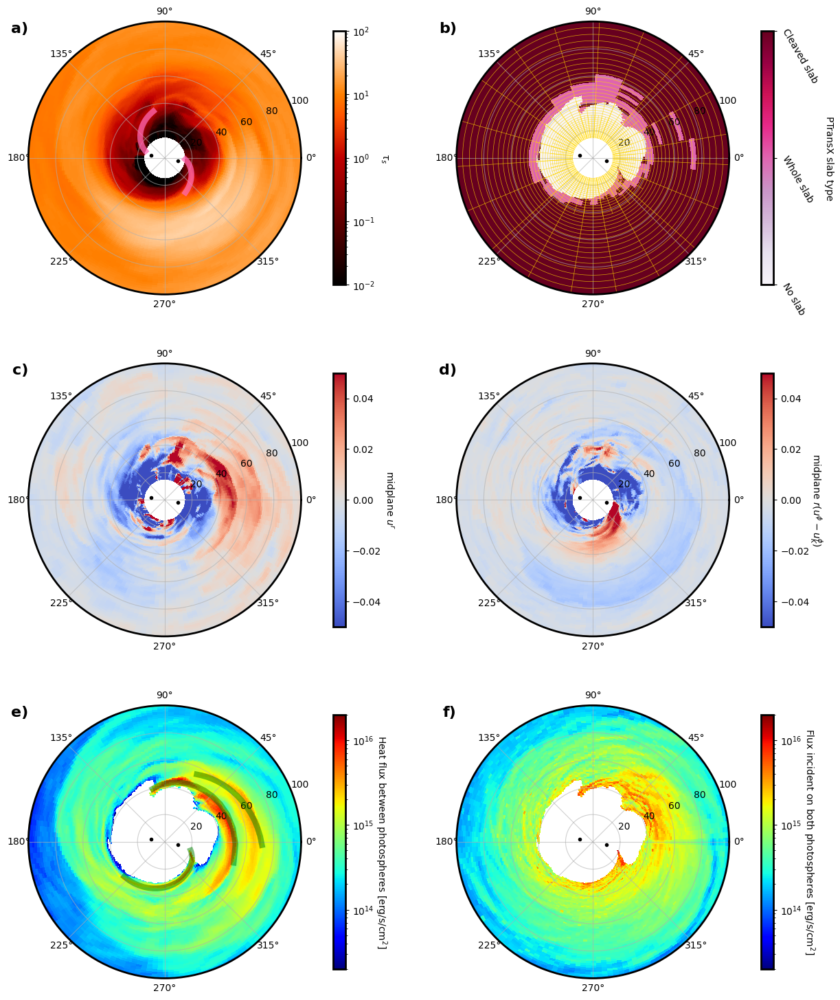<br />
图注：Several quantities in the $r,\phi$ plane for $M=10^6\;\msun$. Scattering optical depth (panel a), type of \(\texttt{PTransX}\) slab in that column (panel b), midplane radial velocity (panel c), midplane angular velocity relative to Keplerian rotation (panel d), integrated heat flux between the photospheres (panel e), and integrated flux onto the photosphere (panel f). In panel b, the gold overlay shows the \(\texttt{PTransX}\) grid, which coarsens with increasing radius. In panel a, the blue lines show the midplane locations of the streams. In panel e, pink lines mark spiral shocks.<br />
对应解读：对应“图 1：模拟结构或辐射区域示意”的逐图导读，以及盘内缘、空腔、气流、螺旋激波和团块结构识别。<br />
入选理由：该图在 r-phi 平面同时展示散射光深、PTransX slab 类型、径向速度、角速度、热通量和入射光球通量，并标出 streams 与 spiral shocks，是理解后续辐射转移和方位不对称来源的基础结构图。<br />
来源与置信度：\(arxiv_source\)；high；\(arxiv_source\) / main.tex:figure[1]</p>
<p><strong>Fig08</strong><br />
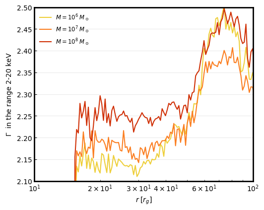<br />
图注：Photon index $\Gamma$ of the $2-20$~keV flux incident on the disk, averaged over top/bottom as well as $\phi$.<br />
对应解读：对应模型拟合段落中软 X 射线光子指数 Γ 的可比较量，以及日报对软 X 射线幂律斜率的关注。<br />
入选理由：这张图直接给出 2–20 keV 入射盘面通量的 photon index Γ 随半径变化，是候选图中唯一明确展示 Γ 诊断量的图。它能支撑文中关于高能辐射谱形和幂律斜率的讨论，比仅看总光度更接近实际 X 射线谱拟合。<br />
来源与置信度：\(arxiv_source\)；high；\(arxiv_source\) / main.tex:figure[8]</p>
<p><strong>Fig12</strong><br />
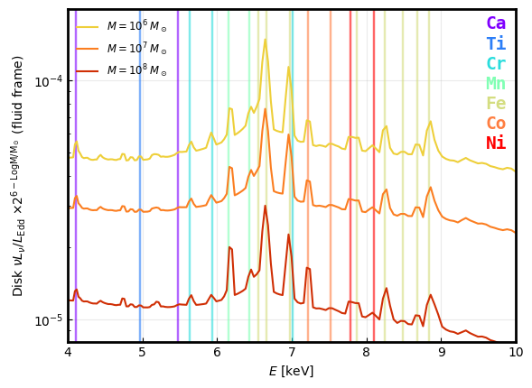<br />
图注：Fluid frame disk spectra in the Fe K$\alpha$ region for each of the three black hole masses. Vertical lines show the elemental provenance of emission lines at those energies. Note that there are two lines very close to each other around 7 keV, a Fe K$\alpha$ line and a Cr K$\beta$ line.<br />
对应解读：对应 Fe Kα 谱线、铁线等效宽度和模型拟合中铁线附近残差诊断的相关解读。<br />
入选理由：虽然候选图中没有 Fe Kα 等效宽度随方位相位变化的图，但这张图直接展示三个黑洞质量下 Fe Kα 能区的盘谱，并标出不同元素谱线来源，是支持铁线诊断讨论的最相关候选图。<br />
来源与置信度：\(arxiv_source\)；high；\(arxiv_source\) / main.tex:figure[12]</p>
<h4 id="_78">强相关工作</h4>
<p>这篇工作处在三个文献脉络交叉处。第一是环双星盘的 \({\rm MHD/GRMHD}\) 模拟，关键词包括 “circumbinary disk SMBH binary GRMHD cavity streams lump accretion variability”。这类工作已经反复发现空腔、气流、盘内缘团块和准周期吸积变化，但很多论文主要讨论 \(\dot M\) 或 bolometric luminosity，而不是完整 X 射线谱和铁线诊断。本文的增量在于把这些动力学结构转化为带微物理和相对论传播的合成谱。</p>
<p>第二是超大质量黑洞双星电磁候选体与多信使搜索。相关关键词包括 “SMBH binary electromagnetic counterpart periodic AGN PTA LISA Fe K alpha X-ray variability”。以往候选常基于光学周期或宽线速度漂移，但争议很大，因为 \({\rm AGN}\) 红噪声、盘进动、吸收云和喷流变化都能造成相似现象。本文提出的连续谱与 \({\rm Fe}\,K\alpha\) 等效宽度同周期但相位错开的诊断，可作为更严格的后续筛选指标。</p>
<p>第三是单黑洞 \({\rm AGN}\) 日冕、铁线和反射谱文献。检索关键词可用 “AGN corona soft X-ray power law Fe K alpha equivalent width reverberation reflection spectrum”。本文与这类研究的关系不是替代，而是提示在双星盘中，日冕样 X 射线区域可能由空腔和螺旋激波自然产生；但这也意味着与普通 \({\rm AGN}\) 反射模型存在强退化，需要高质量谱时变数据才能区分。</p>
<p><strong>同一事件 / 同类源线索</strong>：</p>
<ul>
<li><a href="https://arxiv.org/abs/2609.03140">https://arxiv.org/abs/2609.03140</a></li>
<li><a href="https://arxiv.org/pdf/2609.03140">https://arxiv.org/pdf/2609.03140</a></li>
</ul>
<p><strong>相似工作</strong>：</p>
<ul>
<li><a href="https://arxiv.org/abs/0906.5357">https://arxiv.org/abs/0906.5357</a></li>
<li><a href="https://arxiv.org/abs/1102.0346">https://arxiv.org/abs/1102.0346</a></li>
<li><a href="https://arxiv.org/abs/1212.0530">https://arxiv.org/abs/1212.0530</a></li>
<li><a href="https://arxiv.org/abs/1808.00584">https://arxiv.org/abs/1808.00584</a></li>
</ul>
<p><strong>基础理论 / 方法工作</strong>：</p>
<ul>
<li><a href="https://arxiv.org/abs/astro-ph/0202404">https://arxiv.org/abs/astro-ph/0202404</a></li>
<li><a href="https://arxiv.org/abs/0804.4004">https://arxiv.org/abs/0804.4004</a></li>
<li><a href="https://arxiv.org/abs/0912.0001">https://arxiv.org/abs/0912.0001</a></li>
</ul>
<p><strong>相反观点 / 张力线索</strong>：</p>
<ul>
<li><a href="https://arxiv.org/abs/1501.05342">https://arxiv.org/abs/1501.05342</a></li>
<li><a href="https://arxiv.org/abs/1601.06776">https://arxiv.org/abs/1601.06776</a></li>
</ul>
</details>
<h3 id="8-dansur_hm-modularly-incorporating-higher-modes-in-a-deep-learning-based-gravitational-wave-surrogate">8. DANSur_HM: Modularly incorporating higher modes in a deep learning based gravitational-wave surrogate</h3>
<ul>
<li>来源：arXiv / astro-ph.HE</li>
<li>链接：https://arxiv.org/abs/2609.03025v1</li>
<li>作者：Osvaldo Gramaxo Freitas, Anastasios Theodoropoulos, Nino Villanueva, José A. Font, Antonio Onofre, Alejandro Torres-Forné, José D. Martin-Guerrero</li>
<li>评分：novelty 8/10，importance 8/10，relevance 7/10，final 8.65/10</li>
<li>推荐理由：astro-ph.HE/GW waveform surrogate方法论文；加入多个高阶模式且速度和失配表现很好，对致密双黑洞参数估计有实用价值，但与伽马射线/宇宙线方向关联较弱。</li>
</ul>
<p><strong>中文题目</strong>：\(DANSur_HM\)：用模块化高阶模扩展深度学习引力波替代模型</p>
<p><strong>做了什么</strong>：这篇文章把作者此前的深度学习双黑洞并合波形替代模型扩展到高阶球谐模，除了主导的 \((2,2)\) 模，还同时生成 \((3,3)\)、\((2,1)\)、\((4,4)\)、\((3,2)\)、\((4,3)\) 和 \((5,5)\) 模。核心做法是先用近似波形模型预训练神经网络，再用数值相对论波形微调，并在训练时利用 GPU 并行把模态投影到倾角 \(\iota\) 与相位 \(\phi\) 球面上，从而一次性约束多个模态的组合波形。模型 \(\texttt{DANSur\_HM}\) 的平均失配约为 \(10^{-4}\)，最差失配为 \(2.5\times10^{-3}\)，在 NVIDIA V100 GPU 上吞吐量超过 \(6\times10^{5}\) 个波形每秒。作者还用参数估计测试说明，高阶模能改善某些双黑洞参数的恢复，尤其是非等质量、倾斜观测的系统。</p>
<p><strong>为什么重要</strong>：双黑洞参数估计需要在后验采样中反复生成波形，数值相对论最准确但太慢，传统解析或半解析近似又可能在并合阶段和高阶模上失准。高阶模对质量比大、总质量高、观测方向远离面向视线的系统尤其重要，会影响质量比、距离、倾角和天空定位等推断。把高阶模做进快速替代模型，直接关系到第三代探测器和高信噪比事件时代能否在可承受算力内使用更接近数值相对论的波形。</p>
<p><strong>理论 / 观测 / 仪器方法价值</strong>：方法价值在于把神经网络替代模型从单一主模扩展为模块化多模生成，并提出近似模型预训练加数值相对论微调的训练路线，以缓解数值相对论样本稀疏导致的参数空间不光滑问题。对观测分析而言，它提供了高吞吐量、低失配的波形生成器，可用于快速似然评估、参数估计注入恢复、系统误差检查和未来实时分析管线。对理论建模而言，它展示了把物理分解的球谐模结构与深度学习插值结合的一种可扩展方案。</p>
<p><strong>为什么应该关注</strong>：如果你关心双黑洞质量、自旋、倾角和距离的精确推断，这篇文章值得看，因为它针对的不是“能不能画出一个波形”，而是“能否在贝叶斯参数估计所需的巨大调用量下，同时保留高阶模带来的物理信息”。它也提醒读者：低平均失配并不自动等于所有参数无偏，需要看不同质量比、倾角、信噪比和模态组合下的残差结构与注入恢复结果。</p>
<details class="paper-detail">
<summary>展开详细解读：文章讲解、背景、理论、重点章节、图表与相关工作</summary>
<h4 id="_79">文章详细讲解</h4>
<p>科学问题：双黑洞并合的最可信波形来自数值相对论，但每个参数点都做完整数值相对论演化不可行。真实观测分析要在质量比、自旋、距离、倾角、相位、到达时刻等参数上进行高维采样，单次事件往往需要 \(10^{6}\) 到 \(10^{8}\) 量级的波形评估。过去许多快速模型主要依赖主导 \((2,2)\) 模，或者只在有限参数区域内较好地覆盖高阶模。问题在于，当双黑洞质量比偏离 \(1\)、总质量较高、观测方向接近边缘视线时，高阶模不再是小修正，而会改变时频形态、振幅调制和相位演化，从而影响参数估计。</p>
<p>作者怎么做：本文提出 \(\texttt{DANSur\_HM}\)，是在深度学习替代模型框架中模块化加入高阶模的版本。它生成的不是单个总波形，而是利用自旋权重球谐函数的结构处理多个 \((\ell,m)\) 模态，包括 \((2,2)\)、\((3,3)\)、\((2,1)\)、\((4,4)\)、\((3,2)\)、\((4,3)\) 和 \((5,5)\)。训练策略有两个关键点：第一，先在近似波形模型上预训练，使网络学到参数空间的总体光滑结构；第二，再用数值相对论数据微调，使并合和环降阶段的细节尽量贴近高保真波形。作者还把倾角 \(\iota\) 与相位 \(\phi\) 的投影过程放进 GPU 并行训练中，让网络在训练时看到不同观测方向上的模态组合，而不是只对孤立模态做离线拟合。</p>
<p>关键结果：\(\texttt{DANSur\_HM}\) 在测试集上达到平均失配 \(\sim10^{-4}\)，最差失配 \(2.5\times10^{-3}\)。这个水平对许多现有探测器的参数估计已经相当有竞争力，尤其考虑到模型能在 GPU 上达到超过 \(6\times10^{5}\) 个波形每秒的吞吐量。作者还进行了参数估计测试，表明加入高阶模后，对于特定注入信号，质量比、倾角和距离等参数的恢复更稳健。这里的重要点不是高阶模“总是”显著改变结果，而是当几何和内禀参数使高阶模可观测时，忽略它们会把波形误差投射成参数偏差。</p>
<p>局限和下一步：从摘要可见，该模型仍以双黑洞并合为目标，且模态集合、训练参数空间和数值相对论样本覆盖范围决定了它的适用边界。读者应特别检查训练集是否覆盖进动、自旋范围、极端质量比、偏心率以及不同总质量缩放下的频段。下一步自然包括扩展到更宽的自旋和质量比空间、加入进动或偏心效应、把模型接入标准参数估计软件并与 \(\texttt{NRSur}\)、\(\texttt{SEOBNR}\)、\(\texttt{IMRPhenom}\) 等模型系统比较，以及在第三代探测器灵敏度下重新评估失配阈值是否足够。</p>
<h4 id="_80">关键结果是怎么做出来的</h4>
<p>本文最重要的结果链条从训练样本和模态选择开始。作者的目标不是重建任意数值相对论时空，而是在双黑洞并合波形的替代模型任务中，同时处理主模和若干高阶模。模态集合为 \((2,2)\)、\((3,3)\)、\((2,1)\)、\((4,4)\)、\((3,2)\)、\((4,3)\) 和 \((5,5)\)，这覆盖了非等质量系统中最常见、对观测倾角最敏感的一批高阶贡献。读者需要在论文的数据或样本章节中确认训练、验证和测试的数值相对论波形数量、质量比范围、自旋设定，以及是否对时间、相位和振幅做了统一规约。</p>
<p>统计性能主要用失配来量化。失配本质上是噪声加权内积下的 \(1\) 减最大重叠，通常要对时间平移和相位平移最大化。作者报告平均失配约为 \(10^{-4}\)，最坏点为 \(2.5\times10^{-3}\)。这两个数应同时看：平均值说明模型在典型测试点上很好，最坏值则提示参数空间边界、稀疏区域或某些弱模态可能仍有难点。建议读者不要只看全样本平均，还要检查失配随质量比、自旋、倾角、模态编号、总质量或起始频率的分布。</p>
<p>模型比较和训练策略是结论可信度的关键。预训练用近似模型提供较密的参数空间结构，微调用数值相对论修正近似模型偏差；这相当于把物理启发的低保真先验和高保真数据结合。若论文中给出有无预训练、是否投影到 \((\iota,\phi)\) 球面、单模训练与多模训练的消融实验，应该重点看这些图表，因为它们直接说明 \(\texttt{DANSur\_HM}\) 的改进来自算法设计，而不只是网络规模或训练轮数增加。</p>
<p>参数估计测试提供了从“波形误差小”到“天体物理推断有用”的桥梁。作者报告加入高阶模后参数估计表现更好，读者应检查注入信号的质量比、倾角、信噪比、总质量、探测器网络和采样设置。高阶模的收益通常在边缘视线、非等质量和较高总质量时更明显；若测试只覆盖这些有利情形，则结论应理解为“在高阶模可观测的区域有用”，而不是“所有双黑洞事件都显著改善”。</p>
<p>系统误差方面，至少有三类需要跟踪。第一是数值相对论本身的有限分辨率、外推到无穷远和模态提取误差；第二是近似模型预训练可能带来的偏差继承，尤其如果预训练模型在高阶模相位上有系统偏移；第三是神经网络插值在训练集外或边界处的外推风险。稳健性检验应包括留出测试、交叉验证、不同噪声曲线下失配、不同观测角投影、与独立波形族比较，以及参数估计中后验覆盖真值的频率。</p>
<details class="paper-subdetail">
<summary>展开背景、理论、公式、模型、章节和图表导读</summary>
<h4 id="_81">背景知识</h4>
<p>双黑洞引力波信号通常分为旋近、并合和环降三个阶段。旋近阶段可用后牛顿展开描述，环降阶段可用黑洞微扰理论中的准正规模描述，而并合阶段强场、非线性最强，最可靠的描述来自数值相对论。替代模型的基本动机是：数值相对论给出高保真样本点，替代模型学习这些样本在参数空间中的变化，从而在观测分析中快速生成近似数值相对论精度的波形。</p>
<p>长期以来，双黑洞波形建模常把重点放在 \((2,2)\) 主导模上，因为对近等质量、面向视线的系统，它确实携带了绝大部分信号功率。但这不是普遍定理。质量比越大，源的辐射对称性越弱，高阶 \((\ell,m)\) 模越容易显现；观测方向越接近轨道面，高阶模的角向权重越重要；总质量越高，并合和环降越占据探测器敏感频段，高阶模对时频结构的贡献也越容易被测到。</p>
<p>为什么现在值得重看高阶模问题？一方面，LIGO、Virgo、KAGRA 的事件数不断增加，高信噪比或非典型质量比事件会让波形系统误差变成限制因素。另一方面，第三代探测器如 Cosmic Explorer 和 Einstein Telescope 将显著提高信噪比和低频覆盖，过去可忽略的 \(10^{-3}\) 量级失配在高信噪比下可能变得不可接受。快速而准确的高阶模波形生成，会成为未来大规模贝叶斯分析和人口统计的基础设施。</p>
<p>该领域一个常见误区是把“高阶模振幅小”理解为“高阶模不重要”。实际上，参数估计不是只看总能量，而是看波形差异是否与参数变化方向退化。少量高阶模就可能打破距离和倾角退化，改善质量比测量，或改变天空定位。另一个误区是只用平均失配评价模型。平均失配可能掩盖训练集边界、弱模态相位跳变、极端倾角或高质量比区域的局部失败，而这些失败在天体物理解释上可能正是最有趣的区域。</p>
<h4 id="_82">基础理论 / 方法脉络</h4>
<p>引力波探测器测到的是应变 \(h(t)\)，对非进动双黑洞而言，复应变通常写为 \(h(t)=h_{+}(t)-i h_{\times}(t)\)，再分解到自旋权重为 \(-2\) 的球谐函数上。每个 \((\ell,m)\) 模代表辐射角分布中的一个成分。主导 \((2,2)\) 模对应四极辐射的最大贡献，高阶模则编码更复杂的角向结构和源不对称性。</p>
<p>替代模型的物理基础是波形流形相对低维：给定一组内禀参数，如质量比和自旋，数值相对论波形虽然是高维时间序列，但在参数空间中通常连续变化。传统替代模型常用基函数、降阶建模和插值；深度学习替代模型则用神经网络学习从参数到波形表示的映射。本文的关键假设是，先用较便宜的近似模型学习全局结构，再用数值相对论学习高保真修正，可以降低稀疏样本插值难度。</p>
<p>高阶模的观测效果还取决于外禀参数。倾角 \(\iota\) 决定观察者相对轨道角动量的方向，相位 \(\phi\) 决定各个 \(m\) 模的相对相位。即使同一组内禀参数，不同 \((\iota,\phi)\) 投影会产生不同的总波形。因此，把模态组合和角向投影纳入训练或评估流程，比只在模态层面优化均方误差更贴近参数估计中的实际似然。</p>
<p>失配是波形建模的核心诊断量。它用探测器噪声功率谱加权，衡量两个波形在观测上有多难区分。低失配说明模型误差在探测器敏感频段较小，但失配和参数偏差之间并非一一对应；若模型误差方向恰好与质量比、倾角或自旋变化方向相似，小失配也可能造成可见偏差。反过来，某些频段外的相位误差看起来大，但对噪声加权内积贡献有限。</p>
<p>常见退化包括距离与倾角退化、质量比与有效自旋退化、总质量与时间尺度退化，以及高阶模振幅与观测方向之间的退化。高阶模可以打破一部分退化，但也引入新的系统要求：弱模态的相位对齐、起止时间处理、球谐函数约定、归一化、数值相对论外推误差都可能成为模型误差源。</p>
<h4 id="_83">公式与推导</h4>
<p>第一步是从探测器测量的复应变分解开始。对非进动双黑洞，源坐标系中的波形可写为</p>
<div class="math-display">\[h(t;\boldsymbol{\lambda},\iota,\phi)=\sum_{\ell\ge 2}\sum_{m=-\ell}^{\ell} h_{\ell m}(t;\boldsymbol{\lambda})\,{}_{-2}Y_{\ell m}(\iota,\phi),\]</div>
<p>其中 \(\boldsymbol{\lambda}\) 表示内禀参数，例如质量比和自旋；\({}_{-2}Y_{\ell m}\) 是自旋权重为 \(-2\) 的球谐函数；\(h_{\ell m}\) 是各模态的复波形。本文的高阶模替代模型正是学习多个 \(h_{\ell m}\) 并通过角向投影得到总波形。</p>
<p>第二步是把质量尺度分离出来。真空双黑洞的无量纲数值相对论波形具有尺度不变性，物理时间和无量纲时间满足</p>
<div class="math-display">\[t_{\rm phys}=\frac{G M}{c^{3}}\,\hat{t},\qquad f_{\rm phys}=\frac{c^{3}}{G M}\,\hat{f},\]</div>
<p>其中 \(M=m_{1}+m_{2}\) 是总质量，\(\hat{t}\) 与 \(\hat{f}\) 是以总质量归一化后的时间和频率。这个关系解释了为什么同一无量纲波形可以映射到不同总质量事件，也说明高总质量时并合和环降更容易落在探测器敏感频段。</p>
<p>第三步是写出探测器响应。单台干涉仪测得的应变为</p>
<div class="math-display">\[h_{d}(t)=F_{+,d}(\alpha,\delta,\psi)h_{+}(t-t_{d})+F_{\times,d}(\alpha,\delta,\psi)h_{\times}(t-t_{d}),\]</div>
<p>其中 \(F_{+,d}\) 和 \(F_{\times,d}\) 是第 \(d\) 台探测器的天线方向图，\(\alpha\)、\(\delta\)、\(\psi\) 分别表示赤经、赤纬和偏振角，\(t_{d}\) 是到达该探测器的时间延迟。高阶模影响的是 \(h_{+}\) 与 \(h_{\times}\) 的形态，继而影响网络似然。</p>
<p>第四步是定义噪声加权内积。给定两条波形 \(a\) 和 \(b\)，在单台探测器中的内积为</p>
<div class="math-display">\[(a|b)=4\,\mathrm{Re}\int_{f_{\min}}^{f_{\max}}\frac{\tilde{a}(f)\tilde{b}^{*}(f)}{S_{n}(f)}\,df,\]</div>
<p>其中 \(\tilde{a}(f)\) 是傅里叶变换，\(S_{n}(f)\) 是单边噪声功率谱密度。这个式子说明，模型误差在低噪声频段权重最高。</p>
<p>第五步是重叠与失配。通常定义归一化重叠为</p>
<div class="math-display">\[\mathcal{O}(h_{1},h_{2})=\max_{\Delta t,\Delta\phi}\frac{(h_{1}|h_{2})}{\sqrt{(h_{1}|h_{1})(h_{2}|h_{2})}},\]</div>
<p>失配为</p>
<div class="math-display">\[\mathcal{M}=1-\mathcal{O}(h_{1},h_{2}).\]</div>
<p>这里对 \(\Delta t\) 和 \(\Delta\phi\) 最大化，是为了不把任意的时间零点和整体相位零点误认为物理误差。本文报告的平均 \(\mathcal{M}\sim10^{-4}\) 和最坏 \(\mathcal{M}=2.5\times10^{-3}\) 就应按这个噪声加权意义理解。</p>
<p>第六步是把失配与信噪比联系起来。若真实波形为 \(h\)，模型误差为 \(\delta h\)，一个常用可分辨性估计是</p>
<div class="math-display">\[(\delta h|\delta h)\lesssim 1.\]</div>
<p>若两个归一化波形差异主要由小失配给出，则近似有</p>
<div class="math-display">\[(\delta h|\delta h)\simeq 2\rho^{2}\mathcal{M},\]</div>
<p>其中 \(\rho^{2}=(h|h)\) 是最优信噪比平方。这说明同样的 \(\mathcal{M}\) 在高 \(\rho\) 事件中更容易成为系统误差。</p>
<p>第七步是参数估计似然。假设探测器噪声为平稳高斯噪声，数据 \(d\) 给定参数 \(\boldsymbol{\theta}\) 的似然为</p>
<div class="math-display">\[\ln \mathcal{L}(\boldsymbol{\theta})=-\frac{1}{2}\sum_{d}\left(d_{d}-h_{d}(\boldsymbol{\theta})\middle|d_{d}-h_{d}(\boldsymbol{\theta})\right)+\mathrm{const}.\]</div>
<p>替代模型的作用是快速计算 \(h_{d}(\boldsymbol{\theta})\)。若高阶模缺失或拟合不准，残差会进入这个二次型并移动后验峰值。</p>
<p>第八步是神经网络替代模型的抽象形式。可以把网络写成</p>
<div class="math-display">\[\hat{\mathbf{w}}_{\ell m}=\mathcal{N}_{\ell m}(\boldsymbol{\lambda};\mathbf{W}),\qquad \hat{h}_{\ell m}(t)=\sum_{k} \hat{w}_{k,\ell m}\,e_{k,\ell m}(t),\]</div>
<p>其中 \(\mathcal{N}_{\ell m}\) 是带权重 \(\mathbf{W}\) 的神经网络，\(e_{k,\ell m}(t)\) 可理解为时间序列基、降维表示或网络输出通道，\(\hat{w}_{k,\ell m}\) 是预测系数。即使论文具体实现不同，这个式子概括了从参数到模态波形的替代建模逻辑。</p>
<p>第九步是训练损失的物理含义。多模训练可用类似</p>
<div class="math-display">\[\mathcal{J}(\mathbf{W})=\sum_{i}\sum_{\ell m}\omega_{\ell m}\left\|h^{\rm NR}_{\ell m}(t;\boldsymbol{\lambda}_{i})-\hat{h}_{\ell m}(t;\boldsymbol{\lambda}_{i},\mathbf{W})\right\|^{2}+\Lambda(\mathbf{W}),\]</div>
<p>其中 \(i\) 标记训练样本，\(\omega_{\ell m}\) 是模态权重，\(\Lambda\) 是正则化或其他约束。本文的预训练和微调可理解为先用近似模型降低 \(\mathcal{J}\) 的全局粗误差，再用数值相对论目标函数校正高保真细节。</p>
<h4 id="_84">模型拟合 / 应用方法</h4>
<p>这类工作中的“拟合”有两层。第一层是替代模型训练：输入通常是质量比、自旋等内禀参数，输出是各 \((\ell,m)\) 模的振幅、相位、复时间序列或低维系数。损失函数可能是时间域均方误差、频域误差、模态加权误差，或与失配更接近的指标。本文强调先在近似波形上预训练，再在数值相对论波形上微调，这相当于先拟合低保真但密集的函数，再用高保真但稀疏的数据修正。</p>
<p>第二层是引力波参数估计中的拟合：给定探测器数据，采样器在参数空间中调用 \(\texttt{DANSur\_HM}\) 生成波形，并用高斯噪声似然比较数据和模型。拟合量包括质量、质量比、自旋、距离、倾角、相位、到达时间和天空位置等。高阶模主要帮助约束质量比、倾角和距离，因为它们改变不同观测角下的相对振幅和相位结构。</p>
<p>残差诊断非常关键。一个平均失配低的模型，如果在某些模态的峰值附近有相位残差，可能在高总质量事件中被放大；如果在弱模态上相对误差很大，虽然总失配贡献小，但对边缘视线系统可能重要。读者应查看残差是否按模态分解、是否随参数空间位置系统变化、是否在并合时刻附近集中，以及是否有训练集边界效应。</p>
<p>主要退化关系包括距离与倾角、质量比与有效自旋、总质量与并合频率、相位与到达时间。高阶模能打破一些退化，但并不会自动解决所有问题。例如，若信号信噪比不足或观测方向接近面向视线，高阶模本身不可测，加入高阶模只会增加模型复杂度而未必明显收窄后验。相反，在高信噪比非等质量事件中，如果高阶模模型有偏差，后验反而可能被系统误差主导。</p>
<p>系统误差应从训练数据、模型架构和观测噪声三方面评估。训练数据的数值相对论误差包括有限分辨率、波形外推、初始 junk radiation 去除和模态对齐；模型架构误差包括网络容量不足、过拟合、外推不稳定和模态权重选择；观测误差则包括噪声功率谱估计、校准误差和非高斯瞬态。实际应用中，\(\texttt{DANSur\_HM}\) 最有价值的场景是大批量快速注入、参数估计初筛、与较慢高精度模型交叉验证，以及高阶模系统误差预算。</p>
<h4 id="_85">重点章节 / 结果段落怎么读</h4>
<p>数据与样本部分应首先阅读。重点确认数值相对论波形来自哪些目录或模拟集，覆盖的质量比、自旋维度、轨道构型和模态集合是什么。还要看训练、验证和测试集如何划分，是否存在相邻参数点泄漏导致测试过于乐观。</p>
<p>方法部分要抓住两个设计：近似模型预训练与数值相对论微调。预训练是否只是初始化网络，还是决定了输出基表示？微调时哪些层被冻结、哪些层继续更新？损失函数是否对不同高阶模赋予不同权重？这些选择直接影响弱模态是否被主模主导的损失淹没。</p>
<p>模态投影与 GPU 并行训练部分值得细读。作者把数值相对论波形投影到 \((\iota,\phi)\) 球面，用并行计算同时约束多个观测方向上的组合波形。读者应看清楚这是训练目标的一部分，还是训练后的评估流程；若是训练目标，它会让模型更接近真实似然中的总波形比较。</p>
<p>结果部分应关注失配分布，而不只是摘要里的平均数。建议查看每个模态、每个参数区域、不同倾角和相位的失配直方图或散点图。最差失配 \(2.5\times10^{-3}\) 出现在哪里，比平均失配 \(10^{-4}\) 更能说明模型边界。</p>
<p>参数估计测试部分是本文面向观测的关键。读者应检查注入参数、噪声曲线、探测器网络、采样器设置、先验范围和比较波形。若高阶模模型能恢复注入真值且后验与数值相对论或成熟模型一致，这比单纯低失配更能证明其实际价值。</p>
<p>讨论和稳健性检验部分要看作者如何界定适用范围。特别要注意是否承认进动、偏心、极端质量比、训练域外外推和第三代探测器高信噪比条件下的限制。</p>
<h4 id="_86">建议重点查看的图表</h4>
<ol>
<li>
<p>训练样本覆盖图：看质量比、自旋或其他内禀参数的分布，确认数值相对论样本是否覆盖模型声称适用的区域，尤其边界是否稀疏。</p>
</li>
<li>
<p>网络结构或训练流程图：看预训练、微调、模态输出和 \((\iota,\phi)\) 投影之间的关系，确认“模块化高阶模”具体是怎样实现的。</p>
</li>
<li>
<p>各模态波形对比图：逐一检查 \((2,2)\)、\((3,3)\)、\((2,1)\)、\((4,4)\)、\((3,2)\)、\((4,3)\)、\((5,5)\) 的振幅和相位残差，尤其并合峰值附近。</p>
</li>
<li>
<p>失配分布图：看平均值、长尾、最坏点位置，以及失配是否随质量比、倾角或总质量系统增大。</p>
</li>
<li>
<p>消融实验表或图：比较有无预训练、有无高阶模、单模训练与多模训练、是否使用角向投影时的失配和训练稳定性。</p>
</li>
<li>
<p>吞吐量或计算性能表：看 CPU 与 GPU、批量大小、波形长度、模态数量对速度的影响；吞吐量超过 \(6\times10^{5}\) 个波形每秒的条件要读清楚。</p>
</li>
<li>
<p>参数估计角图：看注入真值是否落在可信区间内，高阶模是否收窄质量比、倾角、距离后验，是否存在模型间系统偏移。</p>
</li>
</ol>
<h4 id="_87">关键图表逐图导读</h4>
<p>图 1：若论文给出样本覆盖图，横轴和纵轴通常会是质量比、自旋或其他内禀参数。数据点代表数值相对论训练、验证或测试波形。读图时不要只看点数，要看边界和高质量比区域是否稀疏；神经网络在稀疏边界处更容易外推失败。</p>
<p>图 2：训练流程或模型结构图通常展示近似模型预训练、数值相对论微调、多模输出和角向投影。关键是看网络是直接输出总波形，还是输出各 \((\ell,m)\) 模后再组合。后者更符合物理分解，也更容易诊断某个高阶模的失败。</p>
<p>图 3：模态波形比较图一般以时间为横轴，振幅或相位为纵轴，显示数值相对论目标、替代模型预测和残差。主模残差小并不代表高阶模都好；应重点看弱模态在峰值附近是否有相位跳变，以及环降阶段是否保持相干。</p>
<p>图 4：失配直方图或累计分布图的横轴为 \(\mathcal{M}\)，纵轴为样本数或累计比例。平均 \(\sim10^{-4}\) 是好消息，但长尾决定高信噪比分析风险。若图中标出最坏 \(2.5\times10^{-3}\)，应追问它对应的参数点和观测角。</p>
<p>图 5：若有失配随参数变化的散点图，横轴可能是质量比、倾角、总质量或自旋，纵轴为 \(\mathcal{M}\)。读图重点是寻找系统趋势，例如质量比增大时高阶模更难拟合，或边缘视线时总波形失配变大。不要把随机散点误读为无系统误差，应看分位线或局部平均。</p>
<p>图 6：参数估计角图通常展示质量、质量比、距离、倾角等参数的二维后验等高线和一维边缘分布。注入真值若用竖线或十字标出，应检查它落在 \(68\%\) 或 \(90\%\) 可信区域内。比较含高阶模和不含高阶模模型时，要看后验是否只是变窄，还是峰值也发生系统移动。</p>
<p>图 7：吞吐量或性能图的横轴可能是批量大小、波形长度或模态数，纵轴是每秒生成波形数。这里的陷阱是速度通常依赖硬件、批处理和是否包含完整探测器响应；把 GPU 批量吞吐量直接等同于端到端参数估计速度会过于乐观。</p>
</details>
<h4 id="_88">论文原图 / 可嵌入图片</h4>
<p><strong>Fig03</strong><br />
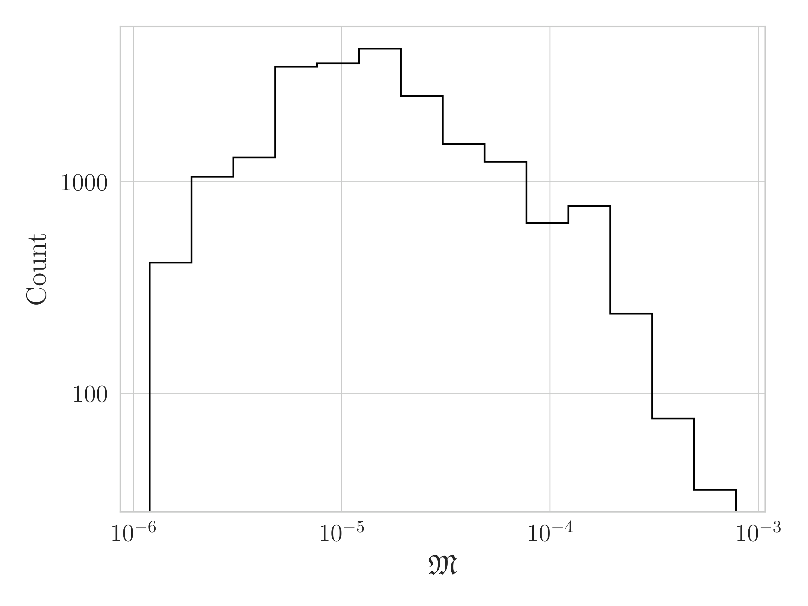<br />
图注：Distribution of validation mismatches for the fine-tuned model trained on the SXS waveforms projected in the $(\iota, \phi)$ sphere.<br />
对应解读：“建议重点查看的图表”第4项失配分布图，以及“关键图表逐图导读”图4关于平均失配、长尾和最坏失配的解读。<br />
入选理由：这是微调后、基于SXS数值相对论波形并在\((\iota,\phi)\)球面投影训练的最终模型验证失配分布，直接对应论文核心结论“平均失配约\(10^{-4}\)、最坏约\(2.5\times10^{-3}\)”。相比预训练阶段或单一参数趋势图，它最能检验DANSur_HM最终可用性。<br />
来源与置信度：\(arxiv_source\)；high；\(arxiv_source\) / main.tex:figure[3]</p>
<p><strong>Fig08</strong><br />
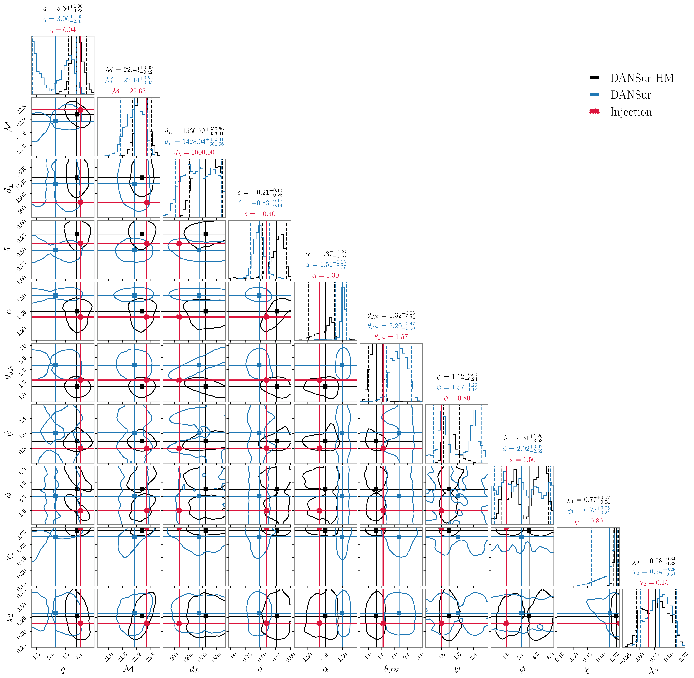<br />
图注：Corner plot showing the one- and two-dimensional marginalized posterior distributions for a simulated signal (injection) generated with the \(\texttt{SXS:BBH:1437}\) NR waveform. The solid black and blue lines in the 1D and 2D plots represent the median value of the inferred parameter, while the dashed lines in the 1D plots and the isolines in the 2D plot enclose the 90\% credible interval. The red lines represent the true value of the parameter in the injection.<br />
对应解读：“建议重点查看的图表”第7项参数估计角图，以及“关键图表逐图导读”图6关于后验可信区间、注入真值和系统偏移的解读。<br />
入选理由：该角图展示SXS:BBH:1437注入信号的边缘后验、90%可信区间和真实注入值，是判断高阶模替代模型是否能用于实际参数估计的关键证据。它直接支撑日报中关于质量比、倾角、距离等参数恢复和系统偏移风险的讨论。<br />
来源与置信度：\(arxiv_source\)；high；\(arxiv_source\) / main.tex:figure[8]</p>
<p><strong>Fig05</strong><br />
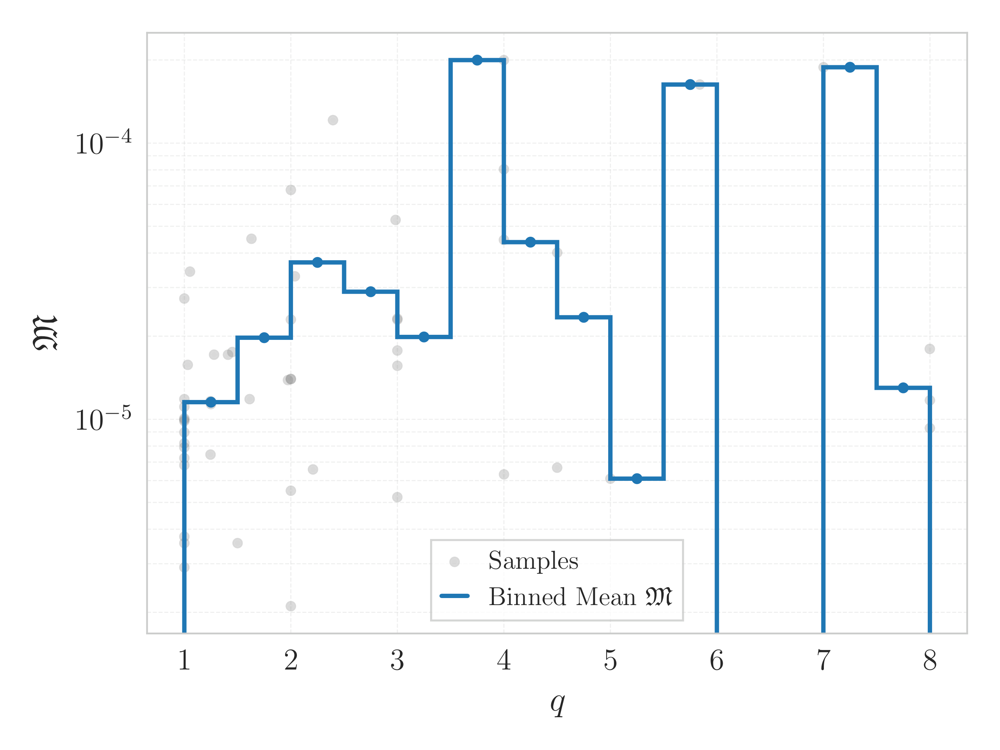<br />
图注：Distribution of mismatches as a function of the mass ratio.<br />
对应解读：“建议重点查看的图表”第4、5项失配分布和失配随参数变化，以及“关键图表逐图导读”图5关于质量比趋势和边界系统误差的解读。<br />
入选理由：该图把失配直接画成质量比的函数，可检查高质量比区域是否出现系统性退化。高阶模在非等质量双黑洞中最重要，因此这张图比单纯总体直方图更能定位模型在关键物理区域的风险。<br />
来源与置信度：\(arxiv_source\)；high；\(arxiv_source\) / main.tex:figure[5]</p>
<p><strong>Fig04</strong><br />
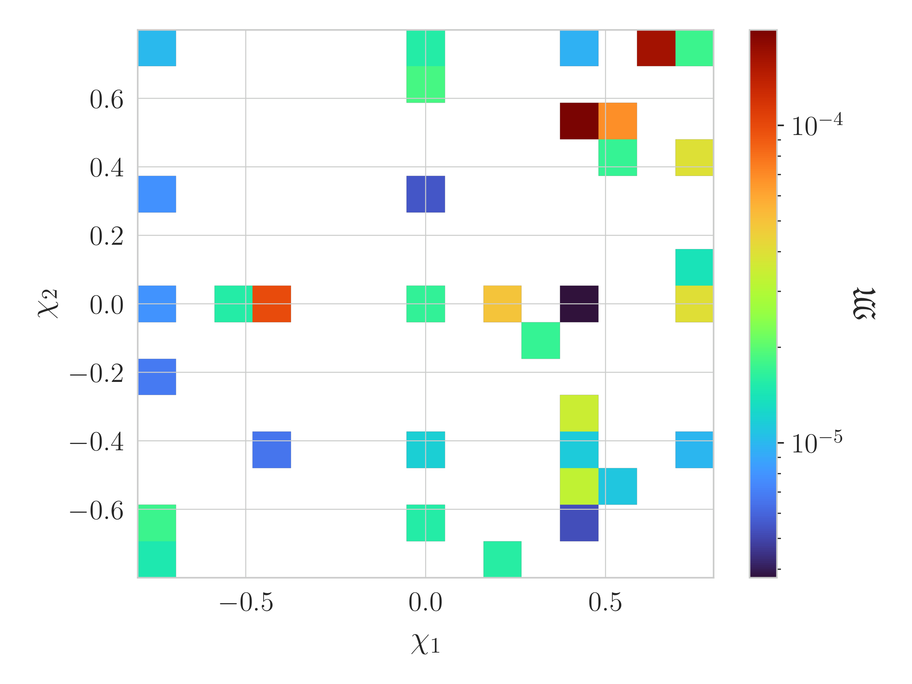<br />
图注：Distribution of the mean mismatches across the spin parameter space.<br />
对应解读：“建议重点查看的图表”第1、4、5项关于参数空间覆盖和失配随内禀参数变化；也对应模型拟合段落中关于训练数据边界效应和系统误差的讨论。<br />
入选理由：该图展示平均失配在自旋参数空间中的分布，可用于判断模型误差是否集中在特定自旋区域。它对评估神经网络在稀疏或边界参数空间中的可靠性很重要，补充了Fig05的质量比诊断。<br />
来源与置信度：\(arxiv_source\)；high；\(arxiv_source\) / main.tex:figure[4]</p>
<p><strong>Fig07</strong><br />
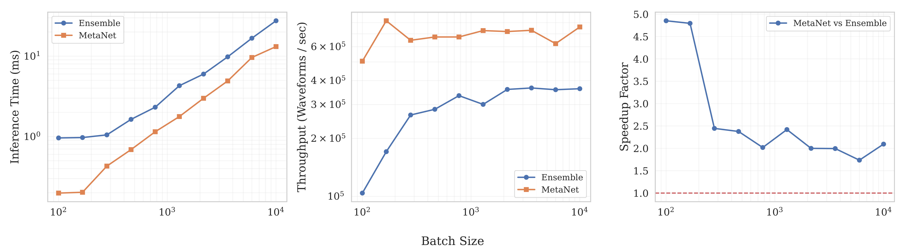<br />
图注：Performance comparison between the iterative ensemble and the meta-network architectures for multi-modal waveform generation. We show (left) inference latency, (middle) total throughput in waveforms per second, and (right) the speedup factor of the MetaNet over the ensemble method. All benchmarks were performed on an NVIDIA V100 GPU.<br />
对应解读：“建议重点查看的图表”第6项吞吐量或计算性能表，以及“关键图表逐图导读”图7关于GPU批量吞吐量、延迟和速度解释的解读。<br />
入选理由：该图给出迭代ensemble与MetaNet架构在NVIDIA V100 GPU上的延迟、总吞吐量和加速比，直接验证摘要中超过\(6\times10^{5}\)个波形每秒的性能主张。它有助于区分科学精度与实际参数估计调用成本。<br />
来源与置信度：\(arxiv_source\)；high；\(arxiv_source\) / main.tex:figure[7]</p>
<p><strong>Fig06</strong><br />
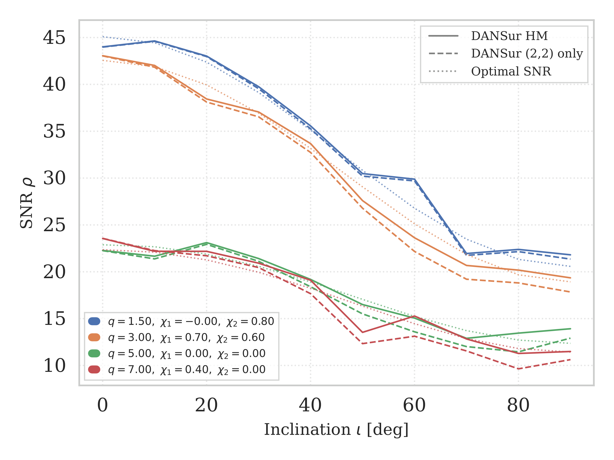<br />
图注：SNR recovery for full-waveform injections using the multi-modal \(\dansur{}\) model. The inclusion of higher-order modes yields a marked increase in signal recovery, particularly in regions of the parameter space with prominent higher-mode emission.<br />
对应解读：对应详细解读中“加入高阶模后信号恢复更稳健”的关键结果，也关联“建议重点查看的图表”第5项关于有无高阶模效果对比。<br />
入选理由：该图展示多模DANSur模型在完整波形注入中的SNR恢复，直接体现高阶模对信号恢复的增益，尤其是在高阶模显著的参数区域。相比单纯训练误差，它更接近观测分析层面的模型效用。<br />
来源与置信度：\(arxiv_source\)；high；\(arxiv_source\) / main.tex:figure[6]</p>
<h4 id="_89">强相关工作</h4>
<p>这篇工作属于双黑洞数值相对论替代模型和机器学习波形建模的交叉方向。相近脉络包括 \(\texttt{NRSur7dq4}\) 等数值相对论替代模型、\(\texttt{SEOBNR}\) 系列有效一体模型、\(\texttt{IMRPhenom}\) 系列表象模型，以及近年来用神经网络、正则流或高斯过程加速波形生成的工作。检索关键词可用 “numerical relativity surrogate waveform higher modes”、“NRSur higher harmonics”、“deep learning gravitational wave surrogate”、“binary black hole waveform surrogate”。</p>
<p>与本文形成张力的问题主要有两个。第一，传统物理模型往往强调可解释性、外推控制和极限行为一致性，而神经网络模型强调速度和插值能力；在训练域外或第三代探测器高信噪比下，哪种系统误差更可控仍需实证比较。第二，高阶模是否显著影响参数估计依赖事件类型；对近等质量、面向视线、低信噪比事件，收益可能有限，而对非等质量、边缘视线、高总质量事件则可能关键。检索关键词可用 “higher order modes parameter estimation binary black holes”、“inclination distance degeneracy gravitational waves”、“waveform systematics high SNR”。</p>
<p>本文不对应某一个命名引力波事件，而是同类双黑洞波形建模方法论文。因此 source context 应理解为同类源、原型模型和基础方法，而不是同一事件后续观测。建议进一步查阅 LIGO Scientific Collaboration 的波形模型综述、SXS 数值相对论波形目录、RIT 数值相对论目录，以及 LIGO Algorithm Library 中相关波形实现。</p>
<p><strong>同一事件 / 同类源线索</strong>：</p>
<ul>
<li><a href="https://arxiv.org/abs/2609.03025">https://arxiv.org/abs/2609.03025</a></li>
<li><a href="https://www.black-holes.org/waveforms">https://www.black-holes.org/waveforms</a></li>
<li><a href="https://ccrg.rit.edu/~RITCatalog/">https://ccrg.rit.edu/~RITCatalog/</a></li>
</ul>
<p><strong>相似工作</strong>：</p>
<ul>
<li><a href="https://arxiv.org/abs/1905.09300">https://arxiv.org/abs/1905.09300</a></li>
<li><a href="https://arxiv.org/abs/2004.08302">https://arxiv.org/abs/2004.08302</a></li>
<li><a href="https://arxiv.org/abs/2001.11412">https://arxiv.org/abs/2001.11412</a></li>
</ul>
<p><strong>基础理论 / 方法工作</strong>：</p>
<ul>
<li><a href="https://arxiv.org/abs/0707.4654">https://arxiv.org/abs/0707.4654</a></li>
<li><a href="https://arxiv.org/abs/0905.3177">https://arxiv.org/abs/0905.3177</a></li>
<li><a href="https://arxiv.org/abs/1308.3565">https://arxiv.org/abs/1308.3565</a></li>
<li><a href="https://arxiv.org/abs/1605.00304">https://arxiv.org/abs/1605.00304</a></li>
</ul>
<p><strong>相反观点 / 张力线索</strong>：</p>
<ul>
<li><a href="https://arxiv.org/abs/1611.07531">https://arxiv.org/abs/1611.07531</a></li>
<li><a href="https://arxiv.org/abs/1809.09125">https://arxiv.org/abs/1809.09125</a></li>
</ul>
</details>
<h2 id="he">相关但非 HE 的重要论文</h2>
<h3 id="1-the-accretion-explorer-interferometer-aei-phase-i-nasa-innovative-advanced-concepts-final-report">1. The Accretion Explorer Interferometer (AEI) Phase I NASA Innovative Advanced Concepts Final Report</h3>
<ul>
<li>来源：arXiv / astro-ph.IM</li>
<li>链接：https://arxiv.org/abs/2609.03159v1</li>
<li>作者：Kimberly A. Weaver, Jenna M. Cann, Kenneth Carpenter, Maurice Leutenegger, Takashi Okajima, Scott Rohrbach, Liz Matson, Craig Stevens</li>
<li>评分：novelty 9/10，importance 9/10，relevance 9/10，final 9.00/10</li>
<li>推荐理由：X射线干涉仪AEI概念报告，目标是微角秒级X射线成像以研究黑洞吸积和喷流；若技术可行将显著影响高能天体物理观测能力，值得关注。</li>
</ul>
<p><strong>中文题目</strong>：吸积探测干涉仪（AEI）第一阶段：面向亚微角秒 X 射线成像的 NIAC 概念报告</p>
<p><strong>做了什么</strong>：这是一份 NASA NIAC 第一阶段最终报告，目标不是报告一个新天体发现，而是评估一种 X 射线长基线干涉仪 AEI 是否在工程上比早期 MAXIM 构想更接近可实现。作者提出用约 \(2\,\mathrm{km}\) 尺度的编队飞行、掠入射平面反射镜、X 射线分束与合束光路来获得远超 Chandra 的角分辨率，面向黑洞吸积盘、喷流发射区、恒星日冕和高能源结构成像。核心结论是：在站位保持、光路设计和关键光学元件上，AEI 相比约 \(450\,\mathrm{km}\) 量级的 MAXIM 方案显著降低了任务复杂度，值得进入更深入的技术成熟度研究。</p>
<p><strong>为什么重要</strong>：X 射线天文学长期受限于掠入射望远镜口径和焦距，角分辨率几十年来只缓慢提高；与此同时，射电 VLBI 已经进入微角秒甚至事件视界尺度成像。AEI 关心的是能否把“孔径合成”搬到 X 射线，这会直接改变我们研究吸积、喷流、恒星磁活动和紧凑天体周围热等离子体的方式。它的重要性在于把一个过去看似过于宏大的 X 射线干涉设想，拆解成较短基线、可编队控制、可实验验证的工程问题。</p>
<p><strong>理论 / 观测 / 仪器方法价值</strong>：对仪器和方法的价值主要有三点：第一，它给出了一条从传统 Wolter 光学到 X 射线干涉成像的技术路线；第二，它把灵敏度、角分辨率、相干长度、站位保持误差和光学表面误差放到同一个任务概念里评估；第三，它为后续实验室分束器、反射镜、编队飞行和干涉条纹检测测试定义了可量化指标。对理论和观测而言，AEI 若实现，将提供直接空间结构约束，而不只是用谱、时变和偏振去间接反演高能源几何。</p>
<p><strong>为什么应该关注</strong>：如果你研究黑洞吸积、AGN 喷流、X 射线双星、年轻恒星活动或高能等离子体，AEI 代表的是一个可能把“模型拟合”推进到“直接成像检验”的方向。即使任务离发射还很远，这份报告也值得关注，因为它暴露了 X 射线干涉仪真正的瓶颈：不是简单把射电 VLBI 缩放到短波长，而是相干光路、光子计数、姿态控制、镜面质量和稀疏 \((u,v)\) 覆盖共同决定能否成像。</p>
<details class="paper-detail">
<summary>展开详细解读：文章讲解、背景、理论、重点章节、图表与相关工作</summary>
<h4 id="_90">文章详细讲解</h4>
<p>科学问题：这篇报告的起点是一个很直接但长期未解决的问题：高能天体的关键发射区往往小到传统 X 射线望远镜无法直接分辨。Chandra 的角分辨率约为亚角秒量级，已经非常成功，但对超大质量黑洞吸积盘内区、喷流发射和准直区、致密双星近邻结构、年轻恒星日冕磁环等问题，亚角秒仍然远远不够。射电波段通过干涉阵列和甚长基线干涉把角分辨率推到微角秒量级；X 射线由于波长短、反射只能在掠入射下进行、光子计数率低、相干和光路控制要求严苛，一直没有对应的成熟天文干涉仪。</p>
<p>作者怎么做：报告提出的 Accretion Explorer Interferometer，即 AEI，是一个 NASA Innovative Advanced Concepts 第一阶段概念。它继承早期 MAXIM 这类 X 射线干涉仪的科学雄心，但试图把任务尺度从约 \(450\,\mathrm{km}\) 长基线压缩到约 \(2\,\mathrm{km}\)，使编队飞行、相位控制和光路布局更接近现有或可演进技术。报告重点不是给出完整工程定型，而是检查关键可行性：卫星站位保持是否能从 LISA Pathfinder 一类技术继承，掠入射大平面镜是否可作为干涉光路元件，X 射线分束器是否在物理和制造上可行，以及一个稀疏孔径系统如何获得足够的成像信息。</p>
<p>关键结果：报告最重要的论断是 AEI 相比 MAXIM 的可操作性大幅提高。基线缩短并不意味着科学目标被完全牺牲，因为 X 射线波长很短，角分辨率的基本尺度约为 \(\theta\sim \lambda/B\)，即使 \(B\) 只有公里量级，也已经对应极高分辨率。作者还强调，AEI 的关键技术可以分解为若干较可控的技术成熟度路径：编队控制、反射镜平面度和粗糙度、分束与合束、探测器读出、轨道环境下热稳定性，以及从有限条纹采样恢复图像的算法。</p>
<p>局限和下一步：作为 NIAC 第一阶段报告，它的证据类型主要是概念设计和可行性评估，而不是实验室完整原型或在轨验证。真正的风险集中在 X 射线相干干涉的光通量损失、分束器效率、光路差控制、反射镜表面误差、稀疏采样导致的图像伪影，以及科学目标所需的曝光时间。下一步应包括端到端误差预算、实验室 X 射线干涉条纹演示、关键光学元件效率测量、编队动力学仿真、对代表性天体的模拟观测，以及把科学需求反推为最小可行基线、有效面积和观测时长。</p>
<h4 id="_91">关键结果是怎么做出来的</h4>
<p>本文最核心的结果不是某个天体的测量值，而是任务概念的“可行性链条”。样本选择在这里对应科学用例选择：作者围绕超大质量黑洞吸积、喷流、年轻恒星和高能紧凑结构这些需要极高角分辨率的目标来定义仪器需求。读者应把它看作从科学角尺度出发的需求流：目标结构尺度给出所需角分辨率，角分辨率给出基线，基线和波长再给出编队长度、光路稳定性和干涉测量需求。</p>
<p>事件数或样本量在本报告中不是统计天体样本，而是工程配置空间。关键比较对象是 AEI 与早期 MAXIM 概念：MAXIM 需要约 \(450\,\mathrm{km}\) 量级尺度，而 AEI 报告宣称可把系统长度压低到约 \(2\,\mathrm{km}\)。这不是单纯的数字缩小，而是任务可操作性的跃迁：编队通信延迟、相对导航、热环境一致性、光路校准和姿态控制都会随尺度降低而变得更可控。</p>
<p>显著性或置信度在这类 NIAC 报告中通常不表现为 \(p\) 值或 \(\sigma\) 水平，而表现为误差预算是否闭合、关键技术是否存在物理不可行点、以及是否能继承现有技术。作者特别强调 LISA Pathfinder 相关的精密编队和惯性控制经验可为 AEI 站位保持提供依据；但读者要注意，这里的“可行”并不等于已经达到飞行任务技术成熟度，而是指没有在第一阶段发现显然不可跨越的物理或工程障碍。</p>
<p>支撑结论的图表应主要包括任务构型示意图、光路和分束器布局图、角分辨率随基线和能量变化的标度图、站位保持或光路误差预算表、关键技术成熟度矩阵、以及科学用例的模拟图像或可分辨尺度比较。若报告中有 AEI 与 MAXIM 的构型对比图，那是判断“为什么 \(2\,\mathrm{km}\) 方案更现实”的核心证据。</p>
<p>主要系统误差来自三类。第一是光学误差：反射镜面形、粗糙度、掠入射角偏差和分束器效率会降低条纹对比度。第二是动力学误差：编队相对位置和姿态误差会引入光路差，导致相干损失或相位漂移。第三是反演误差：有限基线、有限方位角覆盖和低光子数使图像恢复存在非唯一性。稳健性检验应包括改变源模型、改变背景水平、改变光学效率、改变站位噪声谱后，重建结果是否仍能分辨预期结构。</p>
<details class="paper-subdetail">
<summary>展开背景、理论、公式、模型、章节和图表导读</summary>
<h4 id="_92">背景知识</h4>
<p>X 射线天文学的成像能力主要由掠入射光学决定。由于 X 射线在普通入射角下会被吸收而非反射，经典望远镜采用 Wolter 型嵌套镜壳，把大面积光子聚焦到探测器上。Chandra 把这种技术推到极高水平，但其角分辨率仍在亚角秒范围；对于事件视界尺度、吸积盘内区、喷流底部、磁重联小尺度结构，这仍然太粗。</p>
<p>X 射线干涉仪的想法并不新。早期 MAXIM 等概念曾设想用极长基线达到黑洞视界附近成像，但工程尺度巨大，尤其是数百公里编队、光路差控制和探测灵敏度让任务显得遥远。AEI 报告的重要背景正是这种历史：科学需求早已明确，但任务架构必须从“极限概念”转向“可逐步验证的技术路线”。</p>
<p>为什么现在值得重新看？一方面，空间精密测量技术在 LISA Pathfinder、重力波探测编队、深空自主导航和高稳定光学平台方面积累了经验；另一方面，高能天体物理进入多信使、多波段时代后，很多问题受限于空间结构不可分辨。例如 EHT 能在毫米波看到黑洞阴影，但 X 射线辐射来自更热、更内层或不同粒子族，二者的空间对应关系仍需直接检验。</p>
<p>该领域常见误区之一是把 X 射线干涉简单类比为射电 VLBI。射电干涉仪测量的是电场相干信号，接收机可以记录相位并离线相关；X 射线通常是单光子计数，且光学元件效率低、相干控制极难。另一个误区是认为短波长自动意味着小仪器就能高分辨率。实际上角分辨率只是第一步，有效面积、相干长度、条纹可见度、背景、稀疏采样和图像重建共同决定科学产出。</p>
<h4 id="_93">基础理论 / 方法脉络</h4>
<p>基本物理图像可以从孔径合成开始。两个相距 \(B\) 的子孔径接收来自角位置 \(\theta\) 的相干波前，二者光程差约为 \(B\theta\)。当光程差与波长 \(\lambda\) 可比时，干涉条纹对源结构非常敏感。因此长基线并不增加单个镜面的几何口径，而是提高对天空亮度分布傅里叶分量的采样能力。</p>
<p>X 射线的特殊性在于光子能量高、波长短。能量 \(E\) 与波长 \(\lambda\) 的关系是 \(E=hc/\lambda\)，在 \(1\,\mathrm{keV}\) 附近波长约为纳米量级。这意味着即使 \(B\) 为公里量级，\(\lambda/B\) 也对应极小角尺度；但它同时意味着允许的光路误差必须达到纳米甚至更严苛量级，否则条纹会被洗掉。</p>
<p>AEI 的模型假设包括：若干飞行器或光学平台能维持已知相对几何；掠入射平面镜能把来自不同子孔径的 X 射线引导到合束器；分束器和探测器能保留足够条纹可见度；观测中可通过改变基线投影或利用轨道运动采样不同 \((u,v)\) 点。这里的关键量包括基线长度 \(B\)、观测波长 \(\lambda\)、光路差 \(\Delta L\)、条纹可见度 \(V\)、有效面积 \(A_{\rm eff}\)、源光子通量 \(F\) 和背景 \(b\)。</p>
<p>常见退化包括源结构与不完整 \((u,v)\) 覆盖之间的退化、条纹相位误差与真实源质心偏移之间的退化、光学效率下降与源表面亮度下降之间的退化，以及背景估计误差与低可见度信号之间的退化。系统误差不只来自硬件，也来自图像重建先验：平滑先验、稀疏先验或对称性假设都可能把条纹数据解释成不同形态。</p>
<h4 id="_94">公式与推导</h4>
<p>第一步是把 X 射线能量与波长联系起来。对单个光子，</p>
<div class="math-display">\[E=\frac{hc}{\lambda}\]</div>
<p>其中 \(E\) 是光子能量，\(h\) 是普朗克常数，\(c\) 是光速，\(\lambda\) 是波长。这个关系说明在 \(\mathrm{keV}\) 能段，\(\lambda\) 很短，因此同样的基线 \(B\) 可提供比光学和射电更高的角分辨率。</p>
<p>第二步是干涉仪的角分辨率标度。两孔径基线为 \(B\) 时，可分辨角尺度近似为</p>
<div class="math-display">\[\theta_{\rm res}\simeq \frac{\lambda}{B}\]</div>
<p>其中 \(\theta_{\rm res}\) 是弧度角分辨率。AEI 把任务长度降到约 \(2\,\mathrm{km}\)，仍可依靠极短 \(\lambda\) 获得非常小的 \(\theta_{\rm res}\)。</p>
<p>第三步是光路差。对天空方向偏离相位中心 \(\boldsymbol{s}\) 的辐射，两个孔径位置差 \(\boldsymbol{B}\) 产生几何光程差</p>
<div class="math-display">\[\Delta L=\boldsymbol{B}\cdot \boldsymbol{s}\]</div>
<p>其中 \(oldsymbol{B}\) 是基线向量，\(oldsymbol{s}\) 是方向单位矢量的小角偏移近似。若 \(\Delta L\) 未被精确知道或补偿，相位会漂移。</p>
<p>第四步是相位与光程差的关系：</p>
<div class="math-display">\[\phi=\frac{2\pi \Delta L}{\lambda}\]</div>
<p>其中 \(\phi\) 是干涉相位。因为 \(\lambda\) 在 X 射线中极短，哪怕 \(\Delta L\) 的误差很小，也会导致显著相位误差，这是 AEI 站位保持和内部光路控制的核心要求。</p>
<p>第五步是条纹强度。两束强度分别为 \(I_1\) 和 \(I_2\) 的相干光合束后，探测到的强度可写成</p>
<div class="math-display">\[I=I_1+I_2+2\sqrt{I_1I_2}\,|V|\cos \phi\]</div>
<p>其中 \(|V|\) 是可见度幅度。镜面误差、分束损耗、源被解析程度和时间平均都会降低 \(|V|\)。</p>
<p>第六步是 Van Cittert-Zernike 关系。天空亮度分布 \(I(l,m)\) 与复可见度 \(V(u,v)\) 近似满足</p>
<div class="math-display">\[V(u,v)=\frac{\int I(l,m)e^{-2\pi i(ul+vm)}\,dl\,dm}{\int I(l,m)\,dl\,dm}\]</div>
<p>其中 \((l,m)\) 是天空小角坐标，\((u,v)=\boldsymbol{B}_{\perp}/\lambda\) 是以波长为单位的投影基线。AEI 的成像本质就是测量足够多的 \(V(u,v)\) 来反演 \(I(l,m)\)。</p>
<p>第七步是光子计数。若源通量为 \(F\)，有效面积为 \(A_{\rm eff}\)，曝光时间为 \(t\)，探测效率为 \(\eta\)，则期望源计数为</p>
<div class="math-display">\[\mu_s=F A_{\rm eff}\eta t\]</div>
<p>这里 \(\mu_s\) 控制条纹信噪比。X 射线干涉仪不能只追求 \(\theta_{\rm res}\)，还必须保证足够 \(\mu_s\)。</p>
<p>第八步是泊松似然。对第 \(k\) 个探测通道或相位箱，观测计数为 \(n_k\)，模型期望为 \(\mu_k\)，则</p>
<div class="math-display">\[\ln \mathcal{L}=\sum_k \left[n_k\ln \mu_k-\mu_k-\ln(n_k!)\right]\]</div>
<p>其中 \(\mathcal{L}\) 是似然函数。工程模拟或未来数据分析可用它比较不同源结构、背景水平和仪器误差模型。</p>
<p>第九步是条纹探测显著性的一阶估计。若背景期望为 \(\mu_b\)，条纹调制贡献近似为 \(\mu_s |V|\)，则信噪比可标度为</p>
<div class="math-display">\[{
m SNR}\simeq \frac{\mu_s |V|}{\sqrt{\mu_s+\mu_b}}\]</div>
<p>其中 \({\rm SNR}\) 表明提高有效面积、降低背景、保持高可见度与延长曝光同等重要。这个式子也说明，若分束器或镜面使 \(|V|\) 大幅下降，单纯增加基线并不能得到可靠图像。</p>
<h4 id="_95">模型拟合 / 应用方法</h4>
<p>AEI 这类工作中的“拟合”首先是科学需求拟合：给定目标源的假设亮度分布，计算在不同基线、能段、有效面积和曝光时间下可获得的复可见度，再判断能否区分竞争模型。例如黑洞吸积模型可能给出不同的热斑、内盘边缘或喷流底部结构；干涉观测拟合的不是传统图像像素本身，而是 \((u,v)\) 平面上的幅度和相位。</p>
<p>统计上，低计数 X 射线数据更适合泊松似然而不是简单 \(\chi^2\) 残差。模型参数可以包括源结构参数、总通量、背景率、条纹可见度衰减、相位零点、基线误差和光路差漂移。若采用贝叶斯框架，需要为这些仪器参数设置先验；若采用频率学框架，则要通过 profile likelihood 或模拟注入恢复来估计置信区间。</p>
<p>关键退化包括总通量与有效面积退化、源尺寸与可见度下降退化、相位校准误差与源位置偏移退化、背景与低对比条纹退化，以及稀疏 \((u,v)\) 覆盖与图像形态退化。对 AEI 来说，模型拟合必须与任务设计闭环：如果某个科学目标只有在非常强先验下才能重建，就不能算作稳健一级科学目标。</p>
<p>残差诊断应同时在计数空间、条纹空间和图像空间进行。计数空间看每个相位箱或探测器通道的泊松残差；条纹空间看 \(|V(u,v)|\) 与 \(\arg V(u,v)\) 是否有系统偏移；图像空间看重建结构是否随正则化、初始模型或校准扰动而改变。仪器概念报告最容易低估的是这些系统误差之间的相关性，因此后续模拟必须做端到端误差传播。</p>
<p>实际应用上，AEI 的拟合策略可能不是一次性生成漂亮图像，而是先做模型选择：例如“点源加扩展盘”是否优于“单一高斯源”，“喷流底部双组分”是否优于“轴对称日冕”。这种参数化模型比较对早期稀疏采样更现实；只有当 \((u,v)\) 覆盖和信噪比足够时，才适合做弱先验图像重建。</p>
<h4 id="_96">重点章节 / 结果段落怎么读</h4>
<p>一、科学动机部分应先读。重点不是泛泛的“更高分辨率更好”，而是看作者把哪些高能天体问题归为必须直接成像的问题：超大质量黑洞增长、喷流供能、年轻恒星对行星宜居性的影响等。读者应检查每个科学目标对应的角尺度、能段和通量是否足以支撑任务需求。</p>
<p>二、AEI 构型与 MAXIM 对比部分是全报告的中心。这里应关注为什么 AEI 只需约 \(2\,\mathrm{km}\) 任务尺度，以及这种缩短是否来自光学布局创新、科学目标调整、能段选择，还是误差预算假设。与约 \(450\,\mathrm{km}\) MAXIM 概念的对比决定了报告的可信度。</p>
<p>三、关键技术部分要分开读：编队飞行、站位保持、平面镜、X 射线分束器、探测器和合束光路不是同一类风险。读者应判断哪些技术已有空间任务继承，哪些仍主要停留在实验室或概念层面。</p>
<p>四、性能估计和误差预算部分应重点检查角分辨率、有效面积、条纹可见度、光路差容差和热稳定性。若报告给出表格，应看每个指标是需求值、估计可达值，还是未来待验证值。</p>
<p>五、讨论和未来工作部分应看作者是否明确给出 Phase II 或后续任务的验证路径。一个可信的 NIAC 概念不应只列科学愿景，而应说明哪些实验可以在地面完成、哪些需要亚轨道或小卫星验证、哪些必须等完整编队任务。</p>
<h4 id="_97">建议重点查看的图表</h4>
<ol>
<li>
<p>任务总体构型图：看各飞行器或光学平台之间的距离、光路走向、合束位置和探测器位置，尤其是约 \(2\,\mathrm{km}\) 尺度如何实现。</p>
</li>
<li>
<p>AEI 与 MAXIM 尺度对比图或表：看约 \(2\,\mathrm{km}\) 与约 \(450\,\mathrm{km}\) 的差别来自哪里，是否同时保持关键科学分辨率。</p>
</li>
<li>
<p>角分辨率随能量和基线变化图：横轴可能是 \(B\) 或 \(E\)，纵轴是 \(\theta_{\rm res}\)。应检查目标天体结构尺度是否落在仪器可达区域。</p>
</li>
<li>
<p>光路与分束器示意图：看 X 射线如何被反射、分束和合束，注意每次反射或分束都会带来效率损失与相位误差。</p>
</li>
<li>
<p>站位保持或光路差误差预算表：看容差是相对位置、相对速度、姿态角、光路差还是热漂移；这些量不能混为一谈。</p>
</li>
<li>
<p>模拟观测或重建图：看输入源模型、采样后的可见度、重建图像和残差是否同时展示。只给“理想重建图”而无噪声和系统误差是不够的。</p>
</li>
<li>
<p>技术成熟度矩阵：看哪些部件被判定为近期可推进，哪些是任务成败的长杆。</p>
</li>
</ol>
<h4 id="_98">关键图表逐图导读</h4>
<p>图 1：若为任务架构示意图，横向或三维坐标应表示编队中各光学元件的相对位置，线段表示 X 射线路径。读图时不要只看总长度约 \(2\,\mathrm{km}\)，还要看哪些距离需要纳米级光路知识、哪些只需米级或厘米级编队导航。主要结论应是 AEI 通过紧凑构型降低了 MAXIM 式超长编队的复杂度。</p>
<p>图 2：若为 AEI 与 MAXIM 对比图，坐标轴或表格列通常会列出基线、任务长度、角分辨率、技术风险和关键光学元件。读图陷阱是把“长度更短”误读为“所有误差容差更宽松”；实际上 \(\lambda\) 很短，光路差和相位控制仍极端严格。</p>
<p>图 3：若为角分辨率标度图，横轴可能是能量 \(E\) 或基线 \(B\)，纵轴是 \(\theta_{\rm res}\)。模型线应近似遵循 \(\theta_{\rm res}\propto \lambda/B\)。应重点看代表性科学目标的角尺度标记是否明显高于仪器分辨率下限，以及是否考虑了灵敏度而不只是衍射极限。</p>
<p>图 4：若为光学路径和分束器图，应看每个反射面、分束面和合束位置对条纹可见度的影响。数据点可能不是天文数据，而是元件效率或模拟通量。读图陷阱是忽略多次元件效率相乘后对总计数 \(\mu_s\) 的压低。</p>
<p>图 5：若为误差预算或站位保持图，横轴可能是频率、时间或误差来源，纵轴是位置噪声、相位噪声或光路差。关键是看误差谱是否在观测积分时间内可平均，还是会造成相关漂移。若只给均方根值而无时间相关性，需要谨慎。</p>
<p>图 6：若为模拟成像图，应按输入模型、采样可见度、重建图和残差四步阅读。坐标轴应是天空角坐标，色标为表面亮度或归一化强度。主要结论不是图像是否“好看”，而是不同物理模型在噪声和系统误差存在时是否仍可区分。</p>
</details>
<h4 id="_99">论文原图 / 可嵌入图片</h4>
<p><strong>Fig02</strong><br />
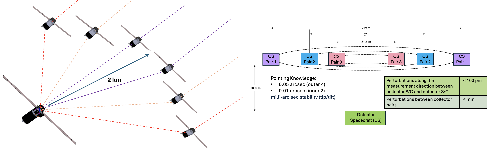<br />
图注：Deployed AEI array at L2. The satellite that holds the detectors and combiner optic is to the lower left and the other six smaller satellites contain mirror flats to collect and redirect X-rays from the target (indicated by dashed lines).<br />
对应解读：对应“建议重点查看的图表”第1项任务总体构型图，以及“关键图表逐图导读”图1关于编队、光路、合束和探测器位置的解读。<br />
入选理由：标题和说明明确给出AEI在L2展开后的阵列构型：一个探测器/合束器卫星与六个含平面镜的小卫星，虚线标示来自目标的X射线路径。这是理解约2 km级紧凑构型、各航天器角色分工和光路汇聚方式的核心图，比单独的航天器外观图更能支撑日报对任务架构的解读。<br />
来源与置信度：\(arxiv_source\)；high；\(arxiv_source\) / main.tex:figure[2]</p>
<p><strong>Fig05</strong><br />
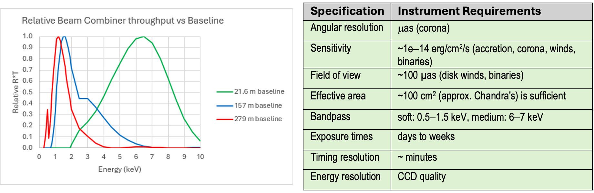<br />
图注：\(\textbf{AEI Energy bands and technical specfications.}\) Left: Baselines were derived from the energy bands where we tune the interferometer for maximum science return according to the STM. This plot shows the width of the bands to which AEI is sensitive. Right: Technical specifications required to successfully complete the science objectives noted in the STM.<br />
对应解读：对应“建议重点查看的图表”第3项角分辨率/能段/基线关系、第5项技术规格，以及“模型拟合”中由科学需求反推基线、能段、有效面积和曝光要求的讨论。<br />
入选理由：图注说明左图给出AEI敏感能段宽度，且基线由科学回报最大化的能段推导；右图给出完成STM科学目标所需技术规格。它直接连接科学目标、能段选择、基线设计和技术指标，是判断AEI是否在关键X射线能区达到所需分辨率和灵敏度的最重要定量图之一。<br />
来源与置信度：\(arxiv_source\)；high；\(arxiv_source\) / main.tex:figure[5]</p>
<p><strong>Fig07</strong><br />
<br />
图注：\(\small\) {\(\bf\) AEI optical paths.} From an optical design standpoint, this figure illustrates how the incoming X-rays are focused via all three X-ray telescopes onto the focal planes within the detector satellite housing. The transparent boxes represent figure error monitoring devices for the two beam splitters. Top inset: Adapted from W. Cash talk in 1999. For the observatory, X-rays reflect from flat mirrors held nearly parallel to the incoming light (from the left). The pairs of mirrors that form three baselines reflect the X-rays toward the detector satellite.<br />
对应解读：对应“建议重点查看的图表”第4项光路与分束器示意图，以及“关键图表逐图导读”图4关于反射、分束、合束和相位/效率损失的解读。<br />
入选理由：图注明确为AEI optical paths，展示三台X射线望远镜如何通过平面镜、基线对和分束器把入射X射线聚焦到探测器卫星焦平面，并标出分束器面形误差监测装置。它比一般构型图更具体地呈现干涉光路和误差监测位置，适合解释条纹可见度、光路差和元件效率等关键风险。<br />
来源与置信度：\(arxiv_source\)；high；\(arxiv_source\) / main.tex:figure[7]</p>
<p><strong>Fig06</strong><br />
<br />
图注：\(\small\) {\(\bf\) Thin film beam combiner optical layout.}<br />
对应解读：对应“建议重点查看的图表”第4项光路与分束器示意图，以及日报中关于X射线分束器和合束器可行性的技术讨论。<br />
入选理由：图注为薄膜分束/合束光学布局，直接对应AEI区别于普通成像望远镜的核心干涉元件。它适合补充Fig07，帮助读者聚焦X射线如何被分束和合束，以及为什么分束器效率、相位误差和面形误差会成为任务成败的长杆。<br />
来源与置信度：\(arxiv_source\)；high；\(arxiv_source\) / main.tex:figure[6]</p>
<p><strong>Fig04</strong><br />
<br />
图注：\(\small\) \(\textbf{Science Traceability Matrix (STM)}\) developed through the NIAC Phase I process. This STM traces the science goals for three primary science cases: black hole accretion, the sources of gravitational wave events, and exo-space weather.<br />
对应解读：对应“建议重点查看的图表”第7项技术成熟度/科学需求矩阵，以及详细解读中从黑洞吸积、引力波事件源和系外空间天气反推任务需求的段落。<br />
入选理由：该图是NIAC Phase I形成的Science Traceability Matrix，追踪三类主要科学案例到任务需求。虽然不是误差预算或模拟重建图，但它能支撑日报关于‘科学需求拟合’的核心观点：AEI设计必须由科学目标反推能段、基线和技术规格。<br />
来源与置信度：\(arxiv_source\)；high；\(arxiv_source\) / main.tex:figure[4]</p>
<p><strong>Fig12</strong><br />
<br />
图注：\(\small\) {\(\bf\) AEI Operational keep out zones.}<br />
对应解读：部分对应“建议重点查看的图表”第5项站位保持或运行约束图，以及详细解读中关于L2编队运行、热稳定性和观测可达性的讨论。<br />
入选理由：图注显示为AEI运行keep-out zones，可用于说明实际任务并非只由理想光学基线决定，还受太阳、地球、热环境和观测几何限制。不过它没有直接给出站位保持误差谱或光路差预算，因此科学诊断价值低于构型、能段规格和光路图。<br />
来源与置信度：\(arxiv_source\)；high；\(arxiv_source\) / main.tex:figure[12]</p>
<h4 id="_100">强相关工作</h4>
<p>这篇报告与早期 X 射线干涉仪概念，尤其是 MAXIM，有直接历史关系。MAXIM 的科学目标包括黑洞事件视界尺度成像，但其超长基线和复杂编队让任务长期停留在概念阶段。AEI 的定位可以理解为同一技术谱系上的“降尺度、重构型、求可实施性”版本。建议检索关键词包括 \(\mathrm{MAXIM}\)、\(\mathrm{Microarcsecond\ X-ray\ Imaging\ Mission}\)、\(\mathrm{X-ray\ interferometry}\)、\(\mathrm{X-ray\ beam\ splitter}\) 和 \(\mathrm{formation\ flying\ X-ray\ astronomy}\)。</p>
<p>它也应放在高角分辨率天文学的大背景下看。射电 VLBI 和 EHT 已经证明直接成像能改变黑洞物理讨论，但 X 射线的辐射机制、光学技术和数据统计完全不同，不能简单移植射电方法。相反观点或张力主要来自工程现实主义：在低光子数、高效率损失、严苛光路控制下，是否优先发展大面积 X 射线望远镜、X 射线偏振、时域谱学，还是冒险推进干涉成像？这类比较可检索 \(\mathrm{Lynx\ X-ray\ Observatory}\)、\(\mathrm{AXIS\ X-ray\ mission}\)、\(\mathrm{Chandra\ angular\ resolution}\)、\(\mathrm{LISA\ Pathfinder\ formation\ control}\) 等关键词。</p>
<p><strong>同一事件 / 同类源线索</strong>：</p>
<ul>
<li><a href="https://arxiv.org/abs/2609.03159">https://arxiv.org/abs/2609.03159</a></li>
<li><a href="https://arxiv.org/pdf/2609.03159">https://arxiv.org/pdf/2609.03159</a></li>
</ul>
<p><strong>相似工作</strong>：</p>
<ul>
<li><a href="https://ui.adsabs.harvard.edu/search/q=%22X-ray%20interferometry%22%20MAXIM">https://ui.adsabs.harvard.edu/search/q=%22X-ray%20interferometry%22%20MAXIM</a></li>
<li><a href="https://ui.adsabs.harvard.edu/search/q=%22Microarcsecond%20X-ray%20Imaging%20Mission%22">https://ui.adsabs.harvard.edu/search/q=%22Microarcsecond%20X-ray%20Imaging%20Mission%22</a></li>
<li><a href="https://ui.adsabs.harvard.edu/search/q=%22X-ray%20interferometer%22%20astronomy">https://ui.adsabs.harvard.edu/search/q=%22X-ray%20interferometer%22%20astronomy</a></li>
</ul>
<p><strong>基础理论 / 方法工作</strong>：</p>
<ul>
<li><a href="https://www.nasa.gov/mission/lisa-pathfinder/">https://www.nasa.gov/mission/lisa-pathfinder/</a></li>
<li><a href="https://eventhorizontelescope.org/">https://eventhorizontelescope.org/</a></li>
<li><a href="https://chandra.harvard.edu/">https://chandra.harvard.edu/</a></li>
</ul>
<p><strong>相反观点 / 张力线索</strong>：</p>
<ul>
<li><a href="https://www.lynxobservatory.com/">https://www.lynxobservatory.com/</a></li>
<li><a href="https://axis.astro.umd.edu/">https://axis.astro.umd.edu/</a></li>
</ul>
</details>
<h2 id="_101">说明</h2>
<p>评分由 LLM 给出初评，再由本地阈值策略过滤；IACT、TeV 伽马射线和高能中微子天文学按重点方向处理。</p>
    </main>
  </div>
</body>
</html>
